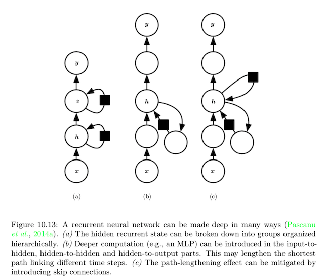
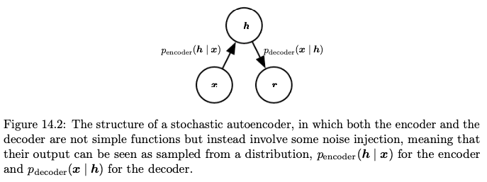

Table of Contents
- 1. DONE Introduction
- 2. DONE Applied Math and Machine Learning Basics
- 2.1. DONE Linear Algebra
- 2.1.1. scalars, vectors, matrices and tensors
- 2.1.2. multiplying matrices and vectors
- 2.1.3. identity and inverse matrices
- 2.1.4. linear dependence and span
- 2.1.5. norms
- 2.1.6. spcial kinds of matrices and vectors
- 2.1.7. eigendecomposition
- 2.1.8. singular value decompositon
- 2.1.9. the Moor-Penrose pseudoinverse
- 2.1.10. the trace operator
- 2.1.11. the determinant
- 2.2. DONE Probability and Information Theory
- 2.2.1. DONE random variables
- 2.2.2. DONE probability distribution
- 2.2.3. DONE marginal probability
- 2.2.4. DONE conditional probability
- 2.2.5. DONE the chain rule of conditional probability
- 2.2.6. DONE independence and conditional independence
- 2.2.7. DONE expectation, variance and covariance
- 2.2.8. DONE common probability distribution
- 2.2.9. DONE useful properties of common functions
- 2.2.10. DONE Bayes' rule (conditional probability)
- 2.2.11. DONE information theory
- 2.2.12. DONE structured probabilistic models
- 2.3. DONE Numerical Computation
- 2.4. DONE Machine Learning Basics
- 2.4.1. DONE learning algorithms
- 2.4.2. DONE capacity, overfitting and underfitting
- 2.4.3. DONE hyperparameters and validation sets
- 2.4.4. DONE estimators, bias, variance
- 2.4.5. DONE maximum likelihood estimation
- 2.4.6. DONE supervised learning algorithms
- 2.4.7. DONE building a machine learning algorithm
- 2.4.8. DONE Chanllenges movivating deep learning
- 2.1. DONE Linear Algebra
- 3. Deep Networks: Modern Practices
- 3.1. DONE Deep Feedforward Networks
- 3.2. DONE Regularization for Deep Learning
- 3.2.1. parameter norm penalties (\(\Omega(\theta)\))
- 3.2.2. data augmentation
- 3.2.3. noise reboustness
- 3.2.4. semi-supervised learning
- 3.2.5. multitask learning
- 3.2.6. early stopping
- 3.2.7. parameter tying and parameter sharing
- 3.2.8. sparse representation
- 3.2.9. bagging and other ensemble methods
- 3.2.10. dropout
- 3.2.11. adversarial training
- 3.2.12. tangent prop and manifold trangent classifier
- 3.3. DONE Optimization for Training Models
- 3.3.1. DONE how learning differs from pure optimization
- 3.3.2. DONE challenges in neural network optimization
- 3.3.3. DONE basic algorithms
- 3.3.4. DONE paramerter initialization strategies
- 3.3.5. DONE algorithms with adaptive learning rates
- 3.3.6. DONE approximate second-order methods
- 3.3.7. DONE optimization strategies and meta-algorithms
- 3.4. DONE Convolutional Networks
- 3.4.1. DONE the convolution operation
- 3.4.2. DONE motivation
- 3.4.3. DONE pooling
- 3.4.4. DONE convolution and pooling as an infinitely strong prior
- 3.4.5. DONE variants of the basic convolution function
- 3.4.6. DONE structured output
- 3.4.7. DONE data types
- 3.4.8. DONE efficient convolution algorithms
- 3.4.9. DONE random or unsupervised features
- 3.4.10. DONE the neuroscientific basis for convolutional networks
- 3.5. Sequence Modeling: Recurrent and Recursive Nets
- 3.5.1. Unfolding Computational Graphs
- 3.5.2. Recurrent Neural Networks
- 3.5.3. Bidirectional RNNs
- 3.5.4. Encoder-Decoder Sequence-to-Sequence Architectures
- 3.5.5. Deep Recurrent Networks
- 3.5.6. Recursive Neural Networks
- 3.5.7. The Challenge of Long-Term Dependencies
- 3.5.8. Echo State Networks
- 3.5.9. Leaky Units and Other Stratergies for Multiple Time Scales
- 3.5.10. The Long Short-Term Memory and Other Gated RNNs
- 3.5.11. Optimization for Long-Term Dependencies
- 3.5.12. Explicit Memory
- 3.6. DONE Practical Methodology
- 3.7. DONE Applications
- 4. Deep Learning Research
- 4.1. Linear Factor Models
- 4.2. Autoencoders
- 4.2.1. Undercomplete Autoencoders
- 4.2.2. Regularized Autoencoders
- 4.2.3. Representation Power, Layer Size and Depth
- 4.2.4. Stochastic Encoders and Decoders
- 4.2.5. Denoising Autoencoders
- 4.2.6. Learning Manifolds with Autoencoders
- 4.2.7. Contractive Autoencoders
- 4.2.8. Predictive Sparse Decomposition
- 4.2.9. Application of Autoencoders
- 4.3. Representation Learning
- 4.4. Structured Probabilistic Models for Deep Learning
- 4.4.1. The Challenge of Unstructured Modeling
- 4.4.2. Using Graphs to Describe Model Structure
- 4.4.3. Sampling from Graphical Models
- 4.4.4. Advantages of Structured Modeling
- 4.4.5. Learning about Dependencies
- 4.4.6. Inference and Approximate Inference
- 4.4.7. The Deep Learning Approach to Structured Probabilistic Models
- 4.4.8. Example: The Restricted Boltzmann Machine
- 4.5. Monte Carlo Methods
- 4.6. Confronting the Partition Function
- 4.7. Approximate inference
- 4.8. Deep Generative Models
- 4.8.1. Boltzmann Machines
- 4.8.2. Restricted Boltzmann Machines
- 4.8.3. Deep Belief Networks
- 4.8.4. Deep Boltzmann Machines
- 4.8.5. Boltzmann Machines for Real-Valued Data
- 4.8.6. Convolutional Boltzmann Machines
- 4.8.7. Boltzmann Machines for Structured or Sequential Outputs
- 4.8.8. Other Boltzmann Machines
- 4.8.9. Back-Propagation through Random Operations
- 4.8.10. Directed Generative Nets
- 4.8.11. Drawing Samples from Autoencoder
- 4.8.12. Generative Stochastic Networks
- 4.8.13. Other Generation Schemes
- 4.8.14. Evaluating Generative Models
1 DONE Introduction
The true challenge to artificial intelligence proved to be solving the tasks that are easy for every people to perform but hard for people to describe formally – problems that we solve intuitively, but feel automatic, like recognizing spoken words or faces in images.
The solution is to allow computers to learn from experience and understand the world in terms of a hierarchy of concepts, with each concept defined through its relation to simpler concepts.
The difficulty faced by systems relying on hard-coded knowledge suggest that AI systems need the ability to acquire their own knowledge, by extracting patterns from raw data. This capability is known as machine learning.
The performance of machine learning algorithms depends heavily on the representation of the data.
Each piece of information included in the representation is known as a feature.
Using machine learning to discover not only the mapping from representation to output but also the representation itself is known as representation learning.
A major source of difficulty is that many of the factors of variation influence every signle piece of data we are able to observe.
When it is nearly as difficult to obtain a representaion as to solve the original problem, representaion learning does not seem to help us.
Deep learing solves this central problem in representaion learing by introducing representaions that are expressed in terms of other, simpler representaions.
There are two main ways of measuring the depth of a model:
- number of sequential instructions
- the depth of graph describing how concept are related to each other.
The age of "Big Data" has made machine learning much easier because the key burden of statistical estimation has been considerably lightened.
The increase in model size over time is one of the most important trends in the history of deep learning.
One should not view deep learning as an attempt to simulate the brain.
The field of deep learning is primarily concerned with how to build computer systems that are able to successfully solve tasks requiring intelligence, while the field of computational neuroscience is primarily concerned with models of how the brain actually works.
The central idea in connectionism is that a large number of simple computational units can achieve intelligent behavior when networked together.
distributed representation:
each input to a system should be represented by many features, and each feature should be involved in the representation of many possible inputs.
It is true that some skill is required to get good performance from a deep learning algorithm.
Fortunately, the amount of skill required reduces as the amount of training data increases.
The age of “Big Data” has made machine learning much easier because the key burden of statistical estimation – generalizing well to new data after observing only a small amount of data – has been considerably lightened.
The increase in model size over time is one of the most important trends in the history of deep learning.
2 DONE Applied Math and Machine Learning Basics
2.1 DONE Linear Algebra
2.1.1 scalars, vectors, matrices and tensors
| TERM | DEFINITION | SIGN |
|---|---|---|
| scalar | a single number | a |
| vector | an array of numbers arranged in order | \(\vec{a}\) |
| matrix | 2-D array of numbers | \(A\) |
| tensor | an array of numbers arranged on a regular grid with a variable number of axis | \(\mathsf{A}\) |
2.1.2 multiplying matrices and vectors
matrix product:
element-wise product or Hadamard product:
distributive:
associative:
2.1.3 identity and inverse matrices
identity matrix \(I_n\) :
matrix inverse of \(A\) is donoted as \(A^{-1}\) :
2.1.4 linear dependence and span
A linear combination of some set of vectors \(\{v^{(1)}, ... , v^{(n)}\}\) :
The span of a set of vectors is the set of all points obtainable by linear combination of the original vectors.
A set of vectors is linearly independent if no vector in the set is a linear combination of the other vectors.
A square matrix with linearly dependent columns is known as singular.
2.1.5 norms
norm: a function to measure the size of vectors that satisfies:
- \(f(x) = 0 \Rightarrow x=0\)
- \(f(x+y) \le f(x) + f(y)\)
- \(\forall \alpha \in \mathbb{R}, f(\alpha x)=|\alpha|f(x)\)
\(L^P\) norm:
\(L^2\) is also known as the Euclidean norm.
max norm:
Frobenius norm:
2.1.6 spcial kinds of matrices and vectors
diagonal matrix:
A matrix \(D\) is diagonal matrix if and only if \(D_{i,j}=0\) for all \(i\ne j\).
\(\text{diag}(v)\) is used to denote a square diagonal matrix whose diagonal entries are given by the entries of the vector \(v\).
symmetirc matrix:
a unit vecotor is a vector with unit norm:
orthogonal:
orthnormal:
orthogonal matrix:
2.1.7 eigendecomposition
eigendecomposition: decompose a matrix into a set of eigenvectors and eigenvalues.
eigenvector: a nonzero vector satisfying
supose \(A\) has \(n\) linearly independent eigenvectors \(\{v^{(1)}, ... , v^{(n)}\}\) with corresponding eigenvalues \(\{\lambda_1, ...,\lambda_n\}\).
\begin{equation} A \begin{bmatrix} V_1 & V_2 \end{bmatrix} = \begin{bmatrix} AV_1 & AV_2 \end{bmatrix} = \begin{bmatrix} V_1 & V_2 \end{bmatrix} \begin{bmatrix} \lambda_1 & 0 \\ 0 & \lambda_2 \end{bmatrix} \end{equation}
eigendecomposition of A:
Every real symmetric matrix can be decomposed into an expression using only real-valued eigenvectors and eigenvalues:
where \(Q\) is an orthogonal matrix composed of eigenvectors of \(A\), and \(\Lambda\) is a diagonal matrix.
The matrix is singular if and only if any of the eigenvalues are zero.
A matrix whose eigenvalues are all positive is call positive definite.
2.1.8 singular value decompositon
singular value decompositon (SVD): factorize a matrix into singular vectors and singular values.
Every real matrix has a singular values decompositon.
Suppose that \(A\) is a \(m\times n\).
Then \(U\) is defined to be an \(m\times m\) orthogonal matrix,
\(D\) to be a \(m \times n\) diagonal matrix, and \(V\) to be an \(n\times n\) orthogonal matrix.
The elements along the diagonal of \(D\) are known as the singular values.
The columns of \(U\) are known as the left-sigular vectors.
The columns of \(V\) are known as the right-sigular vectors.
2.1.9 the Moor-Penrose pseudoinverse
The Moor-Penrose pseudoinverse of \(A\) is defined as a matrix:
Practical algorithms for computing the pseudoinverse are base on:
where \(U\), \(D\) and \(V\) are the singular value decompositon of A, and the pseudoinverse \(D^+\) of a diagonal matrix \(D\) is obtained by taking the reciprocal (ri 'si prer kl) of its nonzero elements then taking the transpose of the resulting matrix.
\begin{equation} D = \begin{bmatrix} 2 & 0 & 0 \\ 0 & 3 & 0\\ \end{bmatrix} \end{equation} \begin{equation} D^{+} = \begin{bmatrix} \frac{1}{2} & 0 \\ 0 & \frac{1}{3} \\ 0 & 0 \end{bmatrix} \end{equation}
2.1.10 the trace operator
An other form of Frobenius norm:
properties:
2.1.11 the determinant
The determinant of a square matrix, denoted \(\mathrm{det}(A)\), is a function that maps matrix to a real scalars.
The absolute value of the determinant can be thought of as a measure of how much multiplication by the matrix expands or contracts space.
2.2 DONE Probability and Information Theory
Probability theory is a mathematical framework for representing uncertain statements.
Information theory enables us to quantify the amount of uncertain in a probability distribution.
2.2.1 DONE random variables
A random variables is a variable that can take on different values randomly.
A random variable is just a description of the states that are possible; it must be coupled with a probability distribution that specifies how likely each of these states are.
2.2.2 DONE probability distribution
A probability distribution is a description of how likely a random variable or set of random variables is to take on each of its possible states.
- discrete variables and probability mass functions
probability mass function (PMF) over discrete variables.
Use ~ notation to specify which distribution it follows like \(x \sim P(x)\).
joint probability distribution : a probability distribution over many variables.
To be a PMF on a random variable x, a function P must satisfy:
- the domain of P must be the set of all possible states of x
- \(\forall x \in \mathrm{x}, 0 \le P(x) \le 1\)
- \(\sum_{x\in \mathrm{x}}P(x) = 1\)
uniform distribution :
\begin{equation} P(\mathrm{x}=x_i) = \frac{1}{k} \end{equation}
a discrete random variable x with \(k\) different states
- the domain of P must be the set of all possible states of x
- continous variables and probability density functions
probability density functions (PDF) over continous variables.
To be a PDF, a function p must satisfy:
- the domain of \(p\) must be the set of all possible states of x
- \(\forall x \in \mathrm{x}, p(x) \ge 0\)
- \(\int p(x)dx = 1\)
A probability density function \(p(x)\) does not give the probability of a specific state directly; instead the probability of landing inside an infinitesimal region with volumn \(\delta x\) is given by \(p(x)\delta x\).
The ";" notation means "parameterized by" in \(u(x;a,b)\).
- the domain of \(p\) must be the set of all possible states of x
2.2.3 DONE marginal probability
The probability distribution over the subset is known as marginal probability distribution.
The name "marginal probability distribution" comes from the process of computing marginal probabilities on paper.
2.2.4 DONE conditional probability
We denote the conditional probability that \(\mathrm{y}=y\) given \(\mathrm{x}=x\) as \(P(\mathrm{y}=y | \mathrm{x}=x)\).
2.2.5 DONE the chain rule of conditional probability
2.2.6 DONE independence and conditional independence
x and y are independent if
conditionally independent :
compact notation:
\(\mathrm{x}\perp \mathrm{y}\) means that x and y are independent;
\(\mathrm{x}\perp \mathrm{y} | \mathrm{z}\) means that x and y are conditionally independent given z.
2.2.7 DONE expectation, variance and covariance
The expectation, or expected value, of some function \(f(x)\) with respect to a probability distribution \(P(x)\) is the average, or mean value, that \(f\) takes on when x is drawn from P.
expectation are linear:
The variance gives a measure of how much the values of a function of a random variable x vary as we sample different values of \(x\) from its probability distribution:
The covariance gives some sense of how much two values are linearly related to each other, as well as the scale of these variables:
2.2.8 DONE common probability distribution
- Bernoulli distribution
The Bernoulli distribution is a distribution over a single binary random viarable.
\begin{equation} P(\mathrm{x}=1) = \phi \end{equation} \begin{equation} P(\mathrm{x}=0) = 1-\phi \end{equation} \begin{equation} P(\mathrm{x}=x)=\phi^x(1-\phi)^{1-x} \end{equation} \begin{equation} \mathbb{E}[\mathrm{x}]=\phi \end{equation} \begin{equation} \mathrm{Var}=\phi(1-\phi) \end{equation}
- multinoulli distribution
The multinoulli distribution, or categorical distribution is a distribution over a single discrete variable with \(k\) different states, where \(k\) is finite.
- Gaussian distribution (normal distribution)
\begin{equation} \mathcal{N}(x;\mu,\sigma^2) = \sqrt{\frac{1}{2\pi\sigma^2}}\exp(-\frac{1}{2\sigma^2}(x-\mu)^2) \end{equation}where \(\mathbb{E}[\mathrm{x}]=\mu\), \(\mathrm{Var}(\mathrm{x})=\sigma^2\)
In the absence of prior knowledge about what form a distribution over the real numbers should take, the normal distribution is a good default choice for two major reasons:
- many distributions are truly close to being normal distributions.
- it encodes the maximum amount of uncertainty over the real numbers.
The normal distribution generalizes to \(\mathbb{R}^n\), known as multivariable normal distribution:
\begin{equation} \mathcal{N}(x;\mu,\Sigma) = \sqrt{\frac{1}{(2\pi)^n\mathrm{det}(\Sigma)}}\exp\left(-\frac{1}{2}(x-\mu)^\top\Sigma^{-1}(x-\mu)\right) \end{equation}
- many distributions are truly close to being normal distributions.
- exponential and Laplace distribution
exponential distribution: (sharp point at \(x=0\))
\begin{equation} p(x;\lambda) = \lambda 1_{x\ge 0}\exp(-\lambda x) \end{equation}
indicator function \(1_{x\ge 0}\) assigns probability zero to all negative values of \(x\).
Laplace distribution (sharp peak at point \(\mu\))
\begin{equation} \mathrm{Laplace}(x;u,\gamma) =\frac{1}{2\gamma}\exp\left(-\frac{|x-\mu|}{\gamma}\right) \end{equation}
- Dirac distribution and empirical distribution
Dirac distribution: (all the mass clusters around a single point)
\begin{equation} p(x)=\delta(x-\mu) \end{equation}
- empirical distribution
\begin{equation} \hat{p}(x) =\frac{1}{m}\sum_{i=1}^{m}\delta(x-x^{(i)}) \end{equation} - mixtures of distribution
A mixtures distribution is made up of several component distributions.
On each trial, the choice of which distribution should generate the sample is determined by sampling a compoent identity from a multinoulli distribution:
\begin{equation} P(x) = \sum_iP(\mathrm{c}=i)P(\mathrm{x|c}=i) \end{equation}
where \(P(\mathrm{c})\) is the multinoulli distribution over component identities.
latent variable : a random variable that we cannot observe directly.
A Gaussian mixture model is a universal approximator of densities, in the sense that any smooth density can be approximated with any specific nonzero amount of error by A Gaussian mixture model with enough components.
2.2.9 DONE useful properties of common functions
logistic sigmoid:
softplus function:
The name of the softplus function comes from the fact that it is a smoothed, or "softened", version fo positive part function.
positive part function
useful properties:
2.2.10 DONE Bayes' rule (conditional probability)
2.2.11 DONE information theory
The basic intuition behind information theory is that learning that an unlikely event has occurred is more informative than learning that a likely event has occurred.
quantify information in a way that formalizes this intuition:
- likely event should have low information content
- less likely events should have higher information content
- independent events should have additive information
self-information of an event \(\mathrm{x}=x\) :
When x is continous, we use the same definition of information by analogy, but some of the properties from the discret case are lost.
Shannon entropy : quantify the amount of uncertainty in an entire probability distribution
When x is continous, the Shannon entropy is known as the differential entropy.
Kullback-Leibler (KL) divergence:
cross-entropy
2.2.12 DONE structured probabilistic models
Machine learning algorithms often involve probability distributions over a very large number of random variables. Often, these probability distributions involve direct interactions between relatively few variables.
Instead of using a single function to represent a probability distribution, we can split a probability distribution into many factors that we multiply together.
These factorizations can greatly reduce the number of parameters needed to describe the distribution.
When we represent the factorization of a probability distribution with a graph, we call it a structured probabilistic model or graphical model.
Each node in the graph corresponds to a random variable, and an edge connecting two random variables means that the probability distribution is able to represent direct interactions between those two random variables.
Directed models represent factorizations into conditional probability distribution.
Undirected models represent factorizations into a set of functions.
2.3 DONE Numerical Computation
numerical computation: typically refers to algorithms that solve mathematical problems by methods that update estimates of the solution via an iterative process.
optimization: finding the value of an argument that minimizes or maximizes a function.
2.3.1 overflow and underflow
underflow: occurs when numbers near zero are rounded to zero.
overflow: occurs when numbers with large magnitude are approximated as \(\infty\) or \(-\infty\).
softmax functon:
2.3.2 poor conditioning
conditioning: how rapidly a function changes with respect to small changes in its inputs.
Functions that change rapidly when their inputs are perturbed slightly can be problemic for scientific computation because rounding errors in the inputs can result in large changes in the output.
When \(A \in \mathbb{R}^{n\times n}\) has an eigenvalue decompositon,
its condition number is :
This is the ratio of the magnitude of the largest and the smallest eigenvalue.
2.3.3 gradient-based optimization
objective function or criterion: the function we want to minimize or maximize.
When we are minimizing it, we also call it the cost function, loss function, or error function.
We often denote the value that minimizes or maximizes a function with a superscript *. like: \(x^*=\arg\min f(x)\)
gradient descent or method of steepest descent: reducing f(x) by moving x in small steps with the opposite sign of the derivative.
\(\epsilon\) is the learning rate, a positive scalar determining the size of the step.
linear search: evaluate \(f(x-\epsilon\nabla_xf(x))\) for several values of \(\epsilon\) and choose the one that result in the smallest objective function value.
directional derivative: in direction \(u\) (a unit vector) is the slop of the functions \(f\) in direction \(u\).
critical points or stationary points: points where \(f^{'}(x)=0\).
local minimum: a point where \(f(x)\) is lower than at all neighboring points.
local maximum: a point where \(f(x)\) is greater than at all neighboring points.
saddle points: critical points are neither maxima nor minima.
global minimum: a point that obtain the absolute lowest value of \(f(x)\).
2.3.4 Jacobian and Hessian Matrices
Jacobian matrix:
if we have a function \(f: \mathbb{R}^m \rightarrow \mathbb{R}^n\),
then the Jacobian matrix \(J \in \mathbb{R}^{n\times m}\) of \(f\) is defined:
Hessian matrix:
Equivalently, the Hessian is the Jacobian of the gradient.
Anywhere that the second parital derivatives are continous, the differential operators are commutative:
The second derivative in a specific direction represented by a unit vector \(d\) is given by \(d^\top Hd\).
first-order optimization algorithms: optimization algorithms that use only the gradient.
second-order optimization algorithms: optimization algorithms that use the Hessian matrix.
Deep learning algorithms tend to lack guarantees because the family of functions used in deep learning is quite complicated.
In the context of deep learning, we sometimes gain some guarantees by restricting ourselves to functions that are either Lipschitz continuous or have Lipschitz continuous derivatives.
Lipschitz continuous function:
\(\mathcal{L}\) is Lipschitz constant.
The condition number of the Hessian measures how much the second derivatives differ from each other.
When the Hessian has a poor condition number, gradient descent performs poorly.
- in one direction, the derivative increase rapidly, while in another direction, it increase slowly.
- makes choosing a good step size difficult.
2.3.5 constrained optimization
constrained optimization: finding the maximal or minimal value of \(f(x)\) for value \(x\) in some set \(\mathbb{S}\).
Points \(x\) that line within the set \(\mathbb{S}\) are called feasible points.
The Karush-Kuhn-Tucker (KKT) approch provides a very general solution to constrained optimization.
With KKT approch, we introduce a new function called a generalized Lagrangian or generalized Lagrange function.
To define the Lagrangian, we first need to describe \(\mathbb{S}\) in terms of equations and inequalities.
The equations involving \(g^{(i)}\) are called the equality constraints and the inequalities involving \(h^{(j)}\) are called inequality constraints.
We introduce new variables \(\lambda_i\) and \(\alpha_j\) for each constraint, these are called the KKT multipliers.
The generalized Lagrangian is then defined as:
We say that a constraint \(h^{(i)}(x)\) is active if \(h^{(i)}(x^*)=0\).
2.4 DONE Machine Learning Basics
Most machine learning algorithms have settings called hyperparameters, which must be determined outside the learning algorithms itself.
Machine learning is essentially a form of applied statistics with increased emphasis on the use of computers to statistically estimate complicated functions and a decreased emphasis on proving confidence intervals around these functions.
Two approches to statistics:
- frequentist estimators
- Bayesian inference
2.4.1 DONE learning algorithms
A machine learning algorithm is an algorithm that is able to learn from data.
A computer program is said to learn from experience E with respect to some class of tasks T and performance measure P, if its performance at tasks in T, as measured by P, improves with experience E.
An example is a collection of features that have been quantitatively measured from some object or event that we want the machine learning system to process.
accuracy: the proportion of examples for which the model produces the correct output.
error rate: the proportion of examples for which the model produces the incorrect output.
test set: separate from the data used for training the machine learning system.
dataset: a collection of many examples. Sometimes we call examples data point.
Unsupervised learning algorithms experience a dataset containing many features, then learn useful properties of the structure of this dataset.
Supervised learning algorithms experience a dataset containing features, but each example is also associated with a label or target.
reinforcement learning algorithms interact with an environment, so there is a feedback loop between the learning system and its experiences.
A design matrix is a matrix containing a different example in each row.
2.4.2 DONE capacity, overfitting and underfitting
generalization: the ability to perform well on previously unobserved inputs.
What separates machine learning from optimization is that we want the generalization error , also called the test error , to be low as well. The generalization error is defined as the expected value of the error on a new input.
How can we affect performance on the test set when we get to observe only the training set?
The field of statistical learning theory provides some answers.
If the training and the test set are collected arbitrarily, there is indeed little we can do.
If we are allowed to make some assumptions about how the training and test set are collected, then we can make some progress.
data generating process: a probability distribution over datasets generates the train and test data.
i.i.d. assumptions:
the examples in each dataset are independent from each other, and that the train set and test set are identically distributed, drawn from the same probability distribution as each other.
We call that shared underlying distribution the data generating distribution, denoted \(p_{data}\).
The factors determining how well a machine learning algorithm will perform are its ability to:
- Make the training error small.
- Make the gap between training and test error small.
These two factors correspond to the two central challenges in machine learning: underfitting and overfitting.
Underfitting occurs when the model is not able to obtain a sufficiently low error value on the training set.
Overfitting occurs when the gap between the training error and test error is too large.
A model’s capacity is its ability to fit a wide variety of functions.
hypothesis space: the set of functions that the learning algorithm is allowed to select as being the solution.
A model specifies which family of functions the learning algorithm can choose from when varying the parameters in order to reduce a training objective. This is called the representational capacity of the model.
In practice, the learning algorithm does not actually find the best function, but merely one that significantly reduces the training error. These additional limitations, such as the imperfection of the optimization algorithm, mean that the learning algorithm’s effective capacity may be less than the representational capacity of the model family.
Occam’s razor: among competing hypotheses that explain known observations equally well, one should choose the “simplest” one.
To reach the most extreme case of arbitrarily high capacity, we introduce the concept of nonparametric models.
Parametric models learn a function described by a parameter vector whose size is finite and fixed before any data is observed. Non-parametric models have no such limitation.
The error incurred by an oracle making predictions from the true distribution \(p_{(x,y)}\) is called the Bayes error.
The no free lunch theorem for machine learning states that, averaged over all possible data generating distributions, every classification algorithm has the same error rate when classifying previously unobserved points.
The goal of machine learning research is not to seek a universal learning algorithm or the absolute best learning algorithm. Instead, our goal is to understand what kinds of distributions are relevant to the “real world” that an AI agent experiences, and what kinds of machine learning algorithms perform well on data drawn from the kinds of data generating distributions we care about.
Regularization is any modification we make to a learning algorithm that is intended to reduce its generalization error but not its training error.
2.4.3 DONE hyperparameters and validation sets
validation set is used for setting hyperparameters.
2.4.4 DONE estimators, bias, variance
In order to distinguish estimates of parameters from their true value, our convention will be to denote a point estimate of a parameter \(\theta\) by \(\hat{\theta}\).
Let \(\{x_{(1)},... , x_{(m)}\}\) be a set of \(m\) independent and identically distributed (i.i.d.) data points. A point estimator or statistic is any function of the data:
The bias of an estimator is defined as:
An estimator \(\hat{\theta}_m\) is said to be unbiased if \(\mathrm{bias}(\hat{\theta}_m)=0\).
An estimator \(\hat{\theta}_m\) is said to be asymptotically unbiased if \(\lim_{m\rightarrow \infty}\mathrm{bias}(\hat{\theta}_m) = 0\).
A common estimator of the Gaussian mean parameter is known as the sample mean:
sample variance:
unbiaed sample variance:
central limit theorem: the mean will be approximately distributed with a normal distribution.
consistency:
2.4.5 DONE maximum likelihood estimation
Rather than guessing that some function might make a good estimator and then analyzing its bias and variance, we would like to have some priciple from which we can derive specific functions that are good estimators for different models.
The most common such principle is the maximum likelihood estimation.
processed to:
NNL: negative log-likelihood
The main appeal of the maximum likelihood estimation is:
under some appropriate conditions,
- The true distribution \(p_{\mathrm{data}}\) must line within the model family \(p_{\mathrm{model}}(\cdot;\theta)\)
- The true distribution \(p_{\mathrm{data}}\) must correspond to exactly one value of \(\theta\).
the maximum likelihood estimator has the property of consistency.
statistic efficiency:
one consistent estimator may obtain lower generalization error for a fixed number of samples \(m\), or equivalently, may require fewer examples to obtain a fixed level of generalization error.
For these reasons (consistency and efficiency), maximum likelihood is often considered the preferred estimator to use for machine learning.
2.4.6 DONE supervised learning algorithms
\(k(x,x^{(i)})\) is called a kernel.
radial basis function (RBF):
The category of algorithms that employ the kernel trick is known as kernel machines or kernel methods.
The insight of stochastic gradient descent is that the gradient is an expectation.
The expectation may be approximately estimated using a small set of samples.
2.4.7 DONE building a machine learning algorithm
- model
- cost function
- optimization procedure
2.4.8 DONE Chanllenges movivating deep learning
curse of dimensionality:
machine learning problems become exceedingly difficult when the number of dimension is high.
smoothness prior or local constancy prior: the function should not change very much within a small region.
local kernel:
\(k(u,v)\) is large when \(u=v\) and descrease as \(u\) and \(v\) grow further apart from each other.
The term “manifold,” in machine learning tends to be used more loosely to designate a connected set of points that can be approximated well by considering only a small number of degrees of freedom, or dimensions, embedded in a higher-dimensional space.
Manifold learning algorithms surmount the obstacle(to learn functions with interesting variations across all of \(\mathbb{R}^n\) ) by assuming that most of \(\mathbb{R}^n\) consists of invalid inputs, and that interesting inputs occur only along a collection of manifolds containing a small subset of points, with interesting variations in the output of the learned function occurring only along directions that lie on the manifold, or with interesting variations happening only when we move from one manifold to another.
3 Deep Networks: Modern Practices
3.1 DONE Deep Feedforward Networks
Deep Feedforward Networks, also called feedforward neural networks, or multiplayer perceptron(MLPs), are the quintessential deep learning models.
The goal of a feedforward network is to approximate some function \(f^*\).
feedforward: information flows through the function form \(x\) throught \(f\) to the output \(y\).
networks: they are typically represented by composing together many different functions.
neural: they are loosely inspired by neuroscience.
output layer: the final layer of a feedforward network.
hidden layers: the behavior of the other layers is not directly specified by the training data.
3.1.1 DONE gradient-based learning
The nonlinearity causes loss functions to become nonconvex.
Stochastic gradient descent(SGD) applied to nonconvex loss functions has no convex convergence guarantee (converge starting from any initial parameters) and is sensitive to the values of the inital parameters.
Most modern neural networks are trained using maximum likelihood.
This means that the cost function is simply the negative log-likelihood, equivalently described as the cross-entropy between the training data and the model distribution.
The gradient of the cost function must be large and predictable enough.
Two results of calculus of variations:
- linearn units for Gaussian output distributions
\begin{equation} \hat{y}=W^\top h+b \end{equation} - sigmoid units for Bernoulli output distributions
\begin{equation} \hat{y}=\sigma(w^\top h+b) \end{equation} - softmax units for multinoulli output distributions
\begin{equation} z=W^\top h + b \end{equation}where \(z_i= \log\tilde{P}(y=i|x)\).
\begin{equation} softmax(z)_i=\frac{\exp(z_i)}{\sum_j\exp(z_j)} \end{equation}
3.1.2 DONE hidden units
- rectified linear units and their generalizations
\begin{equation} g(z)=\max\{0,z\} \end{equation}three generalizations:
based on using a nenzero slop \(\alpha_i\) when \(z_i<0: h_i=g(z,\alpha)_i=\max(0,z_i)+\alpha_i\min(0,z_i)\)
- absolute value rectification (\(\alpha_i=-1\), \(g(z)=|z|\))
- leaky ReLU (fix \(\alpha_i\) to a small value like 0.01)
- parameteric ReLU or PReLU (treats \(\alpha_i\) as a learnable parameter)
maxout units:
\begin{equation} g(z)_i=\max_{j\in \mathbb{G}^{(i)}}z_j \end{equation}
Where \(\mathbb{G}^{(i)}\) is the set of indices into the inputs for groups \(i, \{(i-1)k+1,...,ik\}\)
Maxout units divide \(z\) into groups of \(k\) values.
- absolute value rectification (\(\alpha_i=-1\), \(g(z)=|z|\))
- logistic sigmoid and hyperbolic tangent
logistic sigmoid:
\begin{equation} g(z)=\sigma(z) \end{equation}
hyperbolic tangent:
\begin{equation} g(z)=tanh(z) \end{equation}
3.1.3 DONE archituecture design
archituecture: how many units it should have and how these units should be connected to each other.
universal approximation theorem:
A feedforward network with a linear output layer and at least one hidden layer with any “squashing” activation function (such as the logistic sigmoid activation function) can approximate any Borel measurable function from one finite-dimensional space to another with any desired non-zero amount of error, provided that the network is given enough hidden units.
The derivatives of the feedforward network can also approximate the derivatives of the function arbitrarily well.
3.1.4 DONE back-propagation and other differentiation algorithms
The back-propagation algorithm allows the information from the cost to then flow backward throught the network in order to compute the gradient.
back-propagation refers only to the method for computing the gradient.
general back-propagation:
- \(\mathrm{get\_operation}(\mathsf{V})\)
- \(\mathrm{get\_consumers}(\mathsf{V},\mathcal{G})\)
- \(\mathrm{get\_inputs}(\mathsf{V},\mathcal{G})\)
Each operation \(\mathtt{op}\) is also associated with a \(\mathtt{bprop}\) opearation.
3.2 DONE Regularization for Deep Learning
regularization: strategies designed to reduce the test error, possibly at the expense of increased training error.
Regularization of an estimator works by trading increased bias for reduced variance.
In practice, an overly complex model family does not necessarily include the target function or the true data generating process, or even a close approximation of either.
We almost never have access to the true data generating process so we can never know for sure if the model family being estimated includes the generating process or not.
However, most applications of deep learning algorithms are to domains where the true data generating process is almost certainly outside the model family.
Deep learning algorithms are typically applied to extremely complicated domains such as images, audio sequences and text, for which the true generation process essentially involves simulating the entire universe.
To some extent, we are always trying to fit a square peg (the data generating process) into a round hole (our model family).
3.2.1 parameter norm penalties (\(\Omega(\theta)\))
For neural networks, we typically choose to use a parameter norm penalty that penalizes only the weight of the affine transformation at each layer and leaves the biases unregularized.
Each weight specifies how two vairables interact.
Fitting the weight well requires observing both variables in a variety of conditions.
Each bias controls only a single variable.
This means that we do not include too much variance by leaving the biases unregularized.
L2 parameter regularization:
L1 parameter regularization:
3.2.2 data augmentation
The best way to make a machine learning model generalize better is to train it on more data.
One must be careful not to apply transformations that would change the correct class.
Injecting noise in the input can also be seen a form of data augmentation.
3.2.3 noise reboustness
Noise can be much more powerful when simply shrinking the parameters, especially when the noise is added to the hidden units.
injecting noise at:
- input
- weight
- output (label smoothing)
3.2.4 semi-supervised learning
semi-supervised learning: both labeled examples from \(P(x)\) and labeled examples from \(P(x,y)\) are used to estimate \(P(y|x)\).
3.2.5 multitask learning
Multitask learning is a way to improve generalization by pooling the examples arising out of several tasks.
3.2.6 early stopping
The algorithm terminates when no parameters have improved over the best recorded validation error for some pre-specified number of iterations.
3.2.7 parameter tying and parameter sharing
parameter tying: \(\Omega(w^{(A)},w^{(B)})=||w^{(A)}-w^{(B)}||^2_2\)
parameter sharing: to force sets of parameters to be equal.
3.2.8 sparse representation
place a penalty on the activation of the units.
3.2.9 bagging and other ensemble methods
bagging: (bootstrap aggregating) a technique for reducing generalization error by combining several models. (model averaging)
Techniques employing bagging is called ensemble methods.
3.2.10 dropout
Dropout trains the ensemble consisting of all subnetworks that can be formed by removing nonouput units from an underlying base network.
We can effectively remove a unit from a network by multiplying its output value by zero.
inference: to make a prediction, a bagged ensemble must accumulate votes from all its members.
3.2.11 adversarial training
In many cases, neural networks have begun to reach human performance when evaluated on a i.i.d. test set.
It is natural therefore to wonder whether these models have obtained a true human-level understanding of these tasks.
adversarial examples:
intentionally constructed point \(x^{'}\) near \(x\) and the networks make highly different prediction from \(x\).
adversarial training:
training on adversarial perturbed examples from the training set.
One of the primary causes of these adversarial examples is excessive linearity.
approach:
- seek a adversarial example \(x^{'}\) that causes the classifier to output a label \(y^{'}\) with \(y^{'} \ne y\)
- train the classifier to assign same label to \(x\) and \(x^{'}\)
The assumption motivating this approach is that different classes usually lie on disconnected manifolds,
and a small perturbation should not be able to jump from one class manifold to another class manifold.
3.2.12 tangent prop and manifold trangent classifier
trangent prop:
trains a neural net classifier with an extra penalty to make each output \(f(x)\) of the neural net locally invariant to known factors of variation.
Tangent propagation requires the user to manually specify functions that compute the tangent directions.
Manifold tangent classifier estimates the manifold tangent directtions by training an autoencoder to fit the training data.
double backprop:
regularize the Jacobian to be small.
3.3 DONE Optimization for Training Models
3.3.1 DONE how learning differs from pure optimization
Typicall, the cost function can be written as an average over the training set:
where \(L\) is the per-example loss function, \(f(x;\theta)\) is the predicted output when the input is \(x\), and \(\hat{p}_{data}\) is the empirical distribution. \(J(\theta)\) is known as the empirical risk.
where \(p_{data}\) is the data-generating distribution. \(J^*(\theta)\) is known as the risk.
An interesting motivation for minibatch stochastic gradient descent is that it follows the gradient of the true generalization error as long as no examples are repeated.
3.3.2 DONE challenges in neural network optimization
- ill-conditioning
- local minima
- plateaus, saddle points and other flat regions
- cliffs and exploding gradients
- long-term dependencies
- inexact gradients
- poor correspondence between local and global structure
- theoretical limits of optimization
3.3.3 DONE basic algorithms
- stochastic gradient descent
In practice, it is necessary to graducally decrease the learning rate over time. This is because the SGD gradient estimator introduces a source of noise (the random sampling of \(m\) training examples) that does not vanish even when we arrive at a minimum.
A sufficient condition to guarantee convergence of SGD is that: (?)
\begin{equation} \sum_{k=1}^{\infty}\epsilon_k=\infty \quad \mathrm{and} \quad \sum_{k=1}^{\infty}\epsilon_k^2<\infty. \end{equation}
In practice, it is common to decay the learning rate linearly until iteration \(\tau\):
\begin{equation} \epsilon_k=(1-\alpha)\epsilon_0+\alpha\epsilon_\tau \end{equation}
with \(\alpha=\frac{k}{\tau}\). After interaction \(\tau\), it is common to leave \(\epsilon\) constant.
It is usually best to choose it by monitoring learning curves.
excess error:
\begin{equation} J(\theta)-\min_\theta J(\theta) \end{equation}
When SGD is applied to a convex problem, the excess error is \(O(\frac{1}{\sqrt{k}})\) after \(k\) iterations, while in the strongly convex case, is is \(O(\frac{1}{k})\).
Generalization error can not derease faster than \(O(\frac{1}{k})\)
- momentum
Momentum is designed to accelerate learning.
Momentum aims primarily to solve two problems:
- poor conditioning of the Hessian matrix.
- variance in the stochastic gradient.
The name momentum derives from a physical analogy, in which the negative gradient is a force moving a particle through parameter space, according to Newton's laws of motion.
A hyperparameter \(\alpha\in[0,1)\) determines how quickly the contributions of privious gradients exponentially decay.
\begin{equation} v \leftarrow \alpha v - \epsilon\nabla_\theta \left (\frac{1}{m}\sum_{i=1}^{m}L(f(x^{(i)};\theta),y^{(i)})\right), \end{equation} \begin{equation} \theta \leftarrow \theta + v. \end{equation}
The update rule is given by:
It is equivalent to:
\begin{equation} \theta \leftarrow \frac{\epsilon ||g||}{1-\alpha} \end{equation}
Common values of \(\alpha\) used in practice include 0.5, 0.9, and 0.99.
- poor conditioning of the Hessian matrix.
- Nesterov momentum
\begin{equation} v \leftarrow \alpha v - \epsilon\nabla_\theta \left (\frac{1}{m}\sum_{i=1}^{m}L(f(x^{(i)};\theta + \alpha v),y^{(i)})\right), \end{equation} \begin{equation} \theta \leftarrow \theta + v. \end{equation}
3.3.4 DONE paramerter initialization strategies
Designing improved initialization strategies is a difficult task because neural network optimization is not yet well understood. A further difficulty is that some initial points may be beneficial from the viewpoint of optimization but detrimental from the viewpoint of generalization.
One property known with complete certainty is that: the initial parameters need to "break symmetry" between different units.
The goal of having each units compute a different function motivates random initialization of the parameters.
Typically, we set the biases for each unit to heuristically chosen constants, and initialize only the weights randomly. We almost always initialize all the weights to values drawn randomly from a Gaussian or uniform distribution. The choice of Gaussian or uniform distribution does not seem matter much right now. The scale of the initial distribution have a large effect on both the outcome of the optimization procedure and the ability of the network to generalize.
Larger initial weights will yield a stronger symmetry breaking effect, helping to avoid redundant units. They also help to avoid losing signal during forward or back-propagation through the linear component of each layer—larger values in the matrix result in larger outputs of matrix multiplication. Initial weights that are too large may, however, result in exploding values during forward propagation or back-propagation. Large weights may also result in extreme values that cause the activation function to saturate, causing complete loss of gradient through saturated units. These competing factors determine the ideal initial scale of the weights.
The optimization perspective suggests that the weights should be large enough to propagate information successfully, but some regularization concerns encourage making them smaller.
We can think of initializing the parameters \(\theta\) to \(\theta_0\) as being similar to imposing a Gaussian prior \(p(\theta)\) with mean \(\theta_0\). From this point of view, it makes sense to choose \(\theta_0\) to be near 0.
Weights initialization approaches:
- initialize the weights of a fully connected layer with \(m\) inputs and \(n\) outputs by sampling weight from \(U(-\frac{1}{\sqrt{m}},\frac{1}{\sqrt{m}})\).
- normalized initialization: \[W_{i,j}\sim U(-\sqrt{\frac{6}{m+n}},\sqrt{\frac{6}{m+n}}).\]
- initialize to random orthogonal metrics, with a carefully chosen scaling or gain factor \(g\) that accounts for the nonlinearity applied at each layer.
- sparse initialization: each unit is initialized to have exactly \(k\) nonzero weights.
- hyperparameter search algorithm
- look at the range of standard deviation of activations or grandient on a simple minibach of data.
Setting the bias to zero is compatible with most weight initialization schemes. There are a few exceptions:
- If a bias is for an output unit, then it is often beneficial to initialize the bias to obtain the right marginal statistics of the output.
- Sometimes we may want to choose the bias to avoid causing too much saturation at initialization.
- Sometimes a unit controls whether other units are able to participate in a function.
variance initalization:
- initialize variance or precision parameters to 1
- assume the inital weights are close to zero, set the biases to produce the correct marginal mean of the output, and set the variance parameters to the marginal variance of the output in the training set.
It is possible to initialize model parameters using machine learning.
3.3.5 DONE algorithms with adaptive learning rates
If we believe that the directions of sensitity are somewhat axis aligned, it can make sense to use a separate learning rate for each parameter and automatically adapt these learning rates throught the course of learning.
- AdaGrad
The accumulation of squared gradients from the beginning of training can result in a premature and excessive decrease in the effect learning rate.
- RMSProp
It modifies AdaGrad to perform better in nonconvex setting by changing the gradient accumulation into an exponentially weighted moving average.
- Adam
The name "Adam" derives from the phrase "adaptive moments".
3.3.6 DONE approximate second-order methods
- Newton's method
Taylor series expansion to approximate \(J(\theta)\) near point \(\theta_0\) ignoring derivatives of higher oder:
\begin{equation} J(\theta) \approx J(\theta_0) + (\theta - \theta_0)^\top\nabla_\theta J(\theta_0) + \frac{1}{2}(\theta-\theta_0)^\top H(\theta-\theta_0). \end{equation}
If we solve for the critical point of this function, we obtain the Newton parameter update rule:
\begin{equation} \theta^*=\theta_0-H^{-1}\nabla_\theta J(\theta_0). \end{equation}
Newton's method would require the inversion of a \(k\times k\) matrix — with computational complexity of \(O(k^3)\). As a consequence, only networks with a very small number of parameters can be practically trained via Newton's method.
- conjugate gradients
Conjugate gradients is a method to efficiently avoid the calculation of the inverse Hessian by iteratively descending conjugate directions.
\begin{equation} d_t = \nabla J(\theta) + \beta_t d_{t-1} \end{equation}
In the method of conjugate gradients, we seek to find a search direction that is conjugate to the previous line search direction.
At training iteration \(t\), the next search direction \(d_t\) takes the form:
Two directions, \(d_t\) and \(d_{t-1}\), are defined as conjugate if \(d_t^\top Hd_{t-1}=0\), where \(H\) is the Hessian matrix.
Two popupar methods for computing the \(\beta_t\) are:
- Fletcher-Reeves: \[\beta_t=\frac{\nabla_\theta J(\theta_t)^\top \nabla_\theta J(\theta_t)}{\nabla_\theta J(\theta_{t-1})^\top \nabla_\theta J(\theta_{t-1})}\]
- Polak-Ribiere: \[\beta_t=\frac{(\nabla_\theta J(\theta_t)-\nabla_\theta J(\theta_{t-1}))^\top \nabla_\theta J(\theta_t)}{\nabla_\theta J(\theta_{t-1})^\top \nabla_\theta J(\theta_{t-1})}\]
- Fletcher-Reeves: \[\beta_t=\frac{\nabla_\theta J(\theta_t)^\top \nabla_\theta J(\theta_t)}{\nabla_\theta J(\theta_{t-1})^\top \nabla_\theta J(\theta_{t-1})}\]
- BFGS
The Broyden-Fletcher-Goldfarb-Shanno (BFGS) algorithm attempts to bring some the advantages of Newton's method without the computational burden.
\begin{equation} \theta^*=\theta_0-H^{-1}\nabla_\theta J(\theta_0). \end{equation}
Newton's update is given by:
The primary computational difficulty in applying Newton's update is the calculation of the inverse Hessian \(H^{-1}\). The approach BFGS adopted is to approximate the inverse with a matrix \(M_t\) that is iteratively refined by low-rank updates to become a better approximation of \(H^{-1}\). The direction of descent \(\rho_t\) is determined by \(\rho_t=M_tg_t\). The final update is given by: \(\theta_{t+1}=\theta_t+\epsilon^*\rho_t\).
3.3.7 DONE optimization strategies and meta-algorithms
- batch normalization
The gradient tells how to update each parameter, under the assumption that the other layers do not change. In practice, we update all the layers simultaneously.
The reparametrization significantly reduces the problem of coordinating updates across many layers.
Let \(H\) be a minibatch of activation of the layer to normalize. To normalize \(H\), we replace it with
\begin{equation} H^{'}=\frac{H-\mu}{\sigma}, \end{equation}
where \(\mu\) is a vector containing the mean of each unit and \(\sigma\) is a vector containing the standard deviation of each unit.
At training time,
\begin{equation} \mu=\frac{1}{m}\sum_iH_{i,:} \end{equation}
and
\begin{equation} \sigma=\sqrt{\delta+\frac{1}{m}\sum_i(H-\mu)_i^2}, \end{equation}
where \(\delta\) is a small value such as \(10^{-8}\), imposed to avoid encountering the undefined gradient of \(\sqrt{z}\) and \(z=0\).
At test time, \(\mu\) and \(\sigma\) may be replaced by running averages that were collected during training time.
Batch normalization acts to standardize only the mean and variance of each unit in order to stabilize learning, but it allows the relationships between units and the nonlinear statistics of a single unit to change.
In practice, \(H\) is often replaced with \(\gamma H^{'}+\beta\) to maintain the expressive power.
- coordinate descent
coordinate descent: optimize one coordinate at a time.
coordinate descent is used when:
- Variables can be clearly separated into groups that play relatively isolated rolse.
- Optimization with respect to one group of variable is significantly more efficient than optimization with respect to all of the variables.
- Variables can be clearly separated into groups that play relatively isolated rolse.
- Polyak averaging
Polyak averaging consits of averaging several points in the trajetory through parameter space visited by the optimization algorithm.
\begin{equation} \hat{\theta}^{(t)}=\frac{1}{t}\sum_i\theta^{(i)}. \end{equation}
Exponentially decaying running averaging: (used to avoid distant point effect)
\begin{equation} \hat{\theta}^{(t)}=\alpha\hat{\theta}^{(t-1)}+(1-\alpha)\theta^{(t)}. \end{equation}
- supervised pretaining
pretraining: training simple models on simple tasks before confronting the challenge of training the desired model to perform the desired task.
greedy algorithm: breaks a problem into many components, then solve for the optimal version of each component in isolation.
Why would greedy supervised pretaining help?
The hyperthesis is that it helps to provide better guidance to the intermediate levels of a deep hierarchy.
- designing models to aid optimization
In practice, it is more important to choose a model family that is easy to optimize than to use a powerful optimization algorithm.
Modern neural networks reflect a design choice to use linear transformation between layers and activation functions that are differentiable almost everywhere.
Other model design strategies can help to make optimization easier. For example, linear paths or skip connections between layers reduce the length of the shortest path from the lower layer's parameters to the output.
A related idea to skip connections is adding copies of the output that are attatched to the intermediate hidden layers.
- continuation methods and curriculum learning
Continuation methods are a family of strategies that can make optimization easier by choosing initial points to ensure that local optimization spends most of its time in well-behaved regions of space.
Curriculum learning or shaping, can be interpreted as a continuation method. Curriculum learning is based on the idea of planning a learning process to begin by learning simple concepts and progress to learning more complex concepts that depend on these simpler concepts.
3.4 DONE Convolutional Networks
3.4.1 DONE the convolution operation
i.e.
In convolutional network terminology, \(x\) is referred to as the input, \(w\) as the kernel, \(s\) as the feature map.
discrete convolution:
2-D discrete convolution:
input: two-dimensional I
kernel: two-dimensional K
Convolution is commutative:
Formula \eqref{cnn_lib} is more straightforward to implement in machine learning library, because there is less variation in the range of valid values of \(m\) and \(n\). (kernel is smaller than input)
The commutative property of convolution arises because we have flipped the kernel relative to the input. The only reason to flip the kernel is to obtain the commutative property. (usefull for writting proofs)
cross-correlation: (implemented in many neural networks, same as convolution but without flipping the kernel)
3.4.2 DONE motivation
convolution leverages three important ideas:
- sparse interaction.
- parameter sharing.
- equivariant representations.
sparse interaction (sparse connectivity, sparse weights) is accomplished by making the kernel smaller than the input.
parameter sharing refers to using the same parameter for more than one function in a model.
The particular form of parameter sharing causes the layer to have a property called equivariance to translation.
3.4.3 DONE pooling
A pooling function replaces the output of the net at a certain location with a summary statistic of the nearby outputs.
Pooling helps to make the representation approximately invariant to small translations of the input. Invariance to the translation means that if we translate the input by a small amount, the value of most of the pooled outputs do not change.
Invariance to local translation can be useful property if we care more about whether some feature is present than exactly where it is.
3.4.4 DONE convolution and pooling as an infinitely strong prior
prior probability distribution: a probability distribution over the parameters of a model that encodes our beliefs about what models are reasonable, before we seen any data.
A week prior is a prior distribution with high entropy. A strong prior is a prior distribution with low entropy. A infinitely strong prior palces zero probability on some parameters and says that these parameter values are completely forbidden, regardless of how much support the data give to these values.
3.4.5 DONE variants of the basic convolution function
When discussing convolution in the context of neural networks, we usually do not refer exactly to the standard discrete convolution operation as it is usually understood in the mathematical literature.
- convolution consists of many applications of convolution in parallel.
- the input is a grid of vector-valued observation.
where \(\mathsf{V}_{i,j,k}\) is a 3-D input, \(i\) corresponds to channel, \(j\) row, \(k\) column;
\(\mathsf{K}_{i,j,k,l}\) is a 4-D kernel, \(i\) corresponds to channel of output, \(j\) channel of input, \(k\) row, \(l\) column;
\(\mathsf{Z}_{i,j,k}\) is a 3-D output, \(i\) corresponds to channel, \(j\) row, \(k\) column.
In linear algebra notation, we index into arrays using a 1 for the first entry. This necessitates the -1 in the above formula.
downsampled convolution function \(c\) (sample only \(s\) pixels in each direction in the output):
We refer to \(s\) as the stride of this downsampled convolution.
suppose that: image width:m ; kernel width: k
valid convolution: the entire kernel is constrained entirely within the image (no zero padding). [ output: m - (k -1) ]
same convolution: enought zero padding to keep the size of the output equal to the size of input. [ output: m ]
full convolution: enought zeros are added for every pixel to be visited \(k\) times in each direction. [ output: m + (k-1) ]
Usually the optimal amount of zero padding (in terms of test set classification accuracy) lies between "valid" and "same" convolution.
unshared convolution: (because it is a similar operation to discrete convolution with a small kernel, but without sharing parameters across locations.) (locally connected layer)
where \(\mathsf{W}_{i,j,k,l,m,n}\) is a 6-D tensor; i, the output channel; j, the output row; k, the output column; l, the input channel; m, the row offset within the input; and n, the column offset within the input.
tiled convolution: (a compromise between a convolution layer and a locally connected layer)
where \(\mathsf{K}\) is a 6-D tensor, \(i,j\) correspond to different locations in the output map.
Rather than having a separate index for each location in the ouput map, output locations cycle through a set of \(t\) different choices of kernel stack in each direction.
Convolution is a linear operation and can thus be described as a matrix multiplication. (?)
Multiplication by the transpose of the matrix defined by convolution is one of such operation. This is the operation needed to back-propagation error derivatives through a convolution layer. This same operation is also needed if we wish to reconstruct the visible units from the hiddent units.
These operations – convolution, backprop from output to weights, and backprop from output to inputs – are sufficient to compute all the gradient needed to train any depth of feedforward convolutional network, as well as to train convolutional networks with reconstruction functions based on the transpose of convolution.
For convolutional layers, it is typical to have one bias per channel of the output and share it across all locations within each convolution map. If the input is of known, fixed size, however, it is also possible to learn a separate bias at each location of the ouput map.
3.4.6 DONE structured output
A model(without full connected layers) might emit a tensor \(\mathsf{S}\), where \(\mathsf{S}_{i,j,k}\) is the probability that pixel \((j,k)\) of the input to the network belongs to class \(i\).
3.4.7 DONE data types
One advantage to convolutional networks is that they can also process inputs with varying spatial extents.
3.4.8 DONE efficient convolution algorithms
When a d-dimensional kernel can be expressed as the ouput product of \(d\) vectors, one vector per dimension, the kernel is called separable. When the kernel is separable, naive convolution is inefficient. It is equivalent to compose \(d\) one-dimensional convolutions with each of these vectors. The composed approach is significantly faster than performing one d-dimensinal convolution with their outer product.
3.4.9 DONE random or unsupervised features
Typically, the most expensive part of convolutional network training is learning the features.
When performing supervised training with gradient descent, every gradient step requires a complete run of forward propagation and backward propagation through the entire network. One way to reduce the cost of convolutional network training is to use features that are not trained in a supervised fashion.
Three basic strategies for obtaining convolution kernel without supervised training:
- initialize them randomly
- design them by hand
- learn them with an unsupervised criterion
learning features in convolutional network:
- gradient with full forward, back-propagation
- without supervise
- gradient without full forward and back-propagation
3.4.10 DONE the neuroscientific basis for convolutional networks
A convolutional network layer is designed to capture three properties of V1 (primary visual cortex):
- V1 is arranged in a spatial map.
- V1 contains many simple cells.
- V1 also contains many complex cells.
Most V1 cells have weights that are described by Gabor functions.
The response of a simple cell to an image is given by:
where \(I(x,y)\) is a function of 2-D coordinates of a image; \(\mathbb{X},\mathbb{Y}\) are a set of x and y sampled the image at a set of locations; \(w(x,y)\) takes the form of a Gabor function.
where
and
3.5 Sequence Modeling: Recurrent and Recursive Nets
Recurrent neural networks, or RNNs are a family of neural networks for processing sequential data.
To go from multilayer networks to recurrent networks, we need to take advantage of one of the early ideas: sharing parameters across different parts of a model.
The convolution operation allows a network to share parameters across time but is shallow. Recurrent networks share parameters in a different way. Each member of the output is a function of the previous members of the output.
3.5.1 Unfolding Computational Graphs
A classical form of a dynamic system:
where \(s^{(t)}\) is called the state of the system.
Equation \eqref{dynamic-system} is recurrent because the definition of \(s\) at time \(t\) is refers back to the same definition at time \(t-1\).
For a finite number of time steps \(\tau\), the graph can be unfolded by applying the definition \(\tau -1\) times.
A dynamic system driven by an external signal \(x^{(t)}\),
Unfolding is the operation that maps a circuit to a computational graph with repeated pieces.
The unfolding process introduces two major advantages:
- Regardless of the sequence length, the learned model always has the same input size.
- It is possible to use the same transition function \(f\) with the same parameters at every time step.
3.5.2 Recurrent Neural Networks
Some examples of important design patterns for recurrent neural networks:
- Recurrent networks that produce an output at each time step and have recurrent connections between hidden units.
- Recurrent networks that produce an output at each time step and have recurrent connections only from the output at one time step to the hidden units at the next time step.
- Recurrent networks with recurrent connections between hidden units, that read an entire sequence and then produce a single output.
For each time step from \(t=1\) to \(t=\tau\):
where the parameter are the bias vectors \(b\) and \(c\) along with the weight matrices \(U,V\) and \(W\) respectively, for input-to-hidden, hidden-to-output and hidden-to-hidden cnnections.
Some common ways of providing an extra input to an RNN are:
- as an extra input at each time step, or
- as the initial state \(h^{(0)}\), or
- both
3.5.3 Bidirectional RNNs
RNN: to output a prediction of \(y^{(t)}\) that may depend on the whole input sequence.

3.5.4 Encoder-Decoder Sequence-to-Sequence Architectures
One clear limitation of thie architecture is when the context C output by encoder RNN has a dimension that is too small to properly summarize a long sequence.
3.5.5 Deep Recurrent Networks
The computation in most RNNs can be decompose into three blocks of parameters ans associated tranformations:
- from the input to the hidden state,
- from the previous hidden state to the next hidden state, and
- from the hidden state to the output.

3.5.6 Recursive Neural Networks
3.5.7 The Challenge of Long-Term Dependencies
The basic problem is that gradient propagated over man stages tend to either vanish (most of the time) or explode (rarely, but with much damage to the optimization).
3.5.8 Echo State Networks
The recurrent weights mapping from \(h^{(t-1)}\) to \(h&{(t)}\) and the input weights mapping from \(x^{(t)}\) to \(h^{(t)}\) are some of the most difficult parameters to learn in a recurrent network.
One proposed approach to avoiding this difficulty is to set the recurrent weights such that the recurrent hidden units do a good job of capturing the history of past inputs, and only learn the output weights.
The original idea was to make the eigenvalues of the Jacobian of the state-to-state transition function be close to 1.
3.5.9 Leaky Units and Other Stratergies for Multiple Time Scales
One way to deal with long-term dependencies is to design a model that operates at multiple time scales, so that some parts of the model operate at fine-grained time scales and can handle small details, while other parts operate at coarse time scales and transfer information from the distant past to the present more efficiently.
3.5.10 The Long Short-Term Memory and Other Gated RNNs
Like leaky units, gated RNNs are based on the idea of creating paths through time that have derivatives that neither vanish nor explode. Leaky units did this with connection weights that were either manually chosen constants or were parameters. Gated RNNs generalize this to connection weights that may change at each time step.
The clever idea of introducing self-loops to produce paths where the gradient can flow for long durations is a core contribution of the initial long short-term memory (LSTM) model
3.5.11 Optimization for Long-Term Dependencies
- Clipping Gradients
- clip the parameter gradient from minibatch element-wise
- clip the norm \(||g||\) of the gradient g
- clip the parameter gradient from minibatch element-wise
- Regularizing to Encourage Information Flow
Gradient clipping helps to deal with exploding gradients, but it does not help with vanishing gradients.
regularize or constrain the parameters so as to encourage "information flow".
3.5.12 Explicit Memory
Intelligence requires knowledge and acquiring knowledge can be done via learning, which has motivated the development of large-scale deep architectures.
3.6 DONE Practical Methodology
Design process:
- Determine your goal.
- Establish a working end-to-end pipeline as soon as possible .
- Instrument the system well to determine bottleneck in performance.
- Repeatedly make incremental changes.
3.6.1 DONE Performance Metrics
Keep in mind that for most applications, it is impossible to achieve absolute zero error. The Bayes error defines the minimum error rate that you can hope to achieve, even if you have infinite training data and can recover the true probability distribution.
When your goal is to build the best possible real-world product or service, you can typically collect more data but must determine the value of reducing error further and weigh this against the cost of collecting more data.
How can one determine a reasonable level of performance to expect? Typically, in the academic setting, we have some estimate of the error rate that is attainable based on previously published benchmark results. In the real-word setting, we have some idea of the error rate that is necessary for an application to be safe, cost-effective, or appealing to consumers.
3.6.2 DONE Default Baseline Models (catogery, optimizor, batch normalization, regularizor)
- First, choose the general category of model based on the structure of your data.
If you want to perform supervised learning with fixed-size vectors as input, use a feedforward network with fully connected layers. If the input has known topological structure (for example, if the input is an image), use a convolutional network. In these cases, you should begin by using some kind of piecewise linear unit (ReLUs or their generalizations like Leaky ReLUs, PreLus and maxout). If your input or output is a sequence, use a gated recurrent net (LSTM or GRU).
- A reasonable choice of optimization algorithm is SGD with momentum with a decaying learning rate. Another very reasonable alternative is Adam.
- Batch normalization can have a dramatic effect on optimization performance, especially for convolutional networks and networks with sigmoidal nonlinearities.
- Unless your training set contains tens of millions of examples or more, you should include some mild forms of regularization from the start. Early stopping should be used almost universally.
If your task is similar to another task that has been studied extensively, you will probably do well by first copying the model and algorithm that is already known to perform best on the previously studied task.
3.6.3 DONE Determining Whether to Gather More Data
How does one decide whether to gather more data?
- First, determine whether the performance on the training set is acceptable. If performance on the training set is poor, the learning algorithm is not using the training data that is already available, so there is no reason to gather more data.
- If large models and carefully tuned optimization algorithms do not work well, then the problem might be the quality of the training data.
- If the performance on the training set is acceptable. If test set performance is much worse than training set performance, then gathering more data is one of the most effective solutions.
A simple alternative to gathering more data is to reduce the size of the model or improve regularization.
If you find that the gap between train and test performance is still unacceptable even after tuning the regularization hyperparameters, then gathering more data is advisable.
When deciding whether to gather more data, it is also necessary to decide how much to gather. It is helpful to plot curves showing the relationship between training set size and generalization error.
Usually, adding a small fraction of the total number of examples will not have a noticeable impact on generalization error. It is therefore recommended to experiment with training set sizes on a logarithmic scale
3.6.4 DONE Selecting Hyperparameters
- Manual Hyperparameter Tuning
The primary goal of manual hyperparameter search is to adjust the effective capacity of the model to match the complexity of the task. Effective capacity is constrained by three factors: the representational capacity of the model, the ability of the learning algorithm to successfully minimize the cost function used to train the model, and the degree to which the cost function and training procedure regularize the model.
The learning rate is perhaps the most important hyperparameter. If you have time to tune only one hyperparameter, tune the learning rate.
Tuning the parameters other than the learning rate requires monitoring both training and test error to diagnose whether your model is overfitting or underfitting, then adjusting its capacity appropriately.
- Grid Search
When there are three or fewer hyperparameters, the common practice is to perform grid search.
Typically, a grid search involves picking values approximately on a logarithmic scale.
Grid search usually performs best when it is performed repeatedly.
- Random Search
A random search proceeds as follows:
- define a marginal distribution for each hyperparameter
- do not discretize or bin the values of the hyperparameters
A random search can be exponentially more efficient than a grid search, when there are several hyperparameters that do not strongly affect the performance measure.
- define a marginal distribution for each hyperparameter
- Model-Based Hyperparameter Optimization
The search for good hyperparameters can be cast as an optimization problem. The decision variables are the hyperparameters. The cost to be optimized is the validation set error that results from training using these hyperparameters.
3.6.5 DONE Debugging Strategies
- Visualize the model in action.
Directly observing the machine learning model performing its task will help you to determine whether the quantitative performance numbers it achieves seem reasonable. Evaluation bugs can be some of the most devastating bugs because they can mislead you into believing your system is performing well when it is not.
- Visualize the worst mistakes.
By viewing the training set examples that are the hardest to model correctly, one can often discover problems with the way the data has been preprocessed or labeled.
- Reason about software using trainging and test error.
- Fit a tiny dataset.
If you have high error on the training set, determine whether it is due to genuine underfitting or due to a software defect. Usually if you cannot train a classifier to correctly label a single example, an autoencoder to successfully reproduce a single example with high fidelity, or a generative model to consistently emit samples resembling a single example, there is a software defect
- Compare back-progagated derivatives to numerical derivatives
In the situation of implementing your own gradient computations.
- Monitor histograms of activations and gradient.
3.7 DONE Applications
3.7.1 DONE Large-Scale Deep Learning
- Fast CPU Implementations
- GPU Implementations
GPU: Graphics processing units
Graphics cards have been designed to have a high degree of parallism and high memory bandwidth, at the cost of having a lower clock speed and less branching capability relative to traditional CPUs.
The popularity of graphics cards for neural network training exploded after the advent of general purpose GPUs.
Writting efficient code for GP-GPUs remains a difficult task best left to specialist.
Memory operations are faster if they can be coalesced. Coalesced reads or writes occur when several threads can each read or write a value that they need simultaneously, as part of a single memory transaction.
- Large-Scale Distributed Implementations
Distributing inference is simple, because each input example can be run by a separate machine. This is known data parallelism.
Model parallelism: multiple machines work together on a single data point, with each machine running a different part of the model.
- Model Compression
The basic idea of model compression is to replace the original, expensive model with a smaller model that require less memory and runtime to store and evaluate.
- Dynamic Structure
One strategy for accelerating data processing systems in general is to build systems that have dynamic structure in the graph describing the computation needed to process an input. Data processing systems can dynamically determine which subset of many neural networks should be run on a given input. Individual neural networks can also exhibit dynamic structure internally by determining which subset of features (hidden units) to compute given information from the input. This form of dynamic structure inside neural networks is sometimes called conditional computation.
Dynamic structure of computations is a basic computer science principle applied generally throughout the software engineering discipline.
- A venerable strategy for accelerating inference in a classifier is to use a cascade of classifiers.
- Decision trees themselves are an example of dynamic structure, because each node in the tree determines which of its subtrees should be evaluated for each input.
- Use a neural network called the gater to select which one out of several expert networks will be used to compute the output, given the current input.
- switch, where hidden unit can receive input from different units depending on the context.
One major obstacle to using dynamically structured systems is the decreased degree of parallelism that results from the system following different code branches for different inputs.
- A venerable strategy for accelerating inference in a classifier is to use a cascade of classifiers.
- Specialized Hardware Implementations of Deep Networks
reason of research on it:
- it is possible to use less precision, at least at inference time.
- the rate of progress of a single CPU or GPU core has slowed down.
- it is possible to use less precision, at least at inference time.
3.7.2 DONE Computer Vision
- Preprocessing
- The images should be standardized so that their pixels all lie in the same, reasonable range, like [0,1] or [-1, 1]. Formatting images to have the same scale is the only kind of preprocessing that is strictly necessary.
- standard size
- Dataset augmentation
- translation
- rotation
- flip
- random perturbation of the colors
- nonlinear geometric distortions
- translation
- constrast normalization
- The images should be standardized so that their pixels all lie in the same, reasonable range, like [0,1] or [-1, 1]. Formatting images to have the same scale is the only kind of preprocessing that is strictly necessary.
- Contrast Normalization
One of the most obvious sources of variation that can be safely removed for many tasks is the amount of contrast in the image. Contrast simply refers to the magnitude of the difference between the bright and the dark pixels in an image.
Constrast:
\begin{equation} \sqrt{\frac{1}{3}\sum_{i=1}^r \sum_{j=1}^c \sum_{k=1}^3 (X_{i,j,k} - \bar{X})^2}, \end{equation} \begin{equation} \bar{X}=\frac{1}{3rc}\sum_{i=1}^r \sum_{j=1}^c \sum_{k=1}^3 X_{i,j,k}. \end{equation}
Global contrast normalization (GCN) aims to prevent images from having varying amounts of contrast by subtracting the mean from each image, then rescaling it so that the standard deviation across its pixels is equal to some constant s.
Images with very low but non-zero contrast often have little information content. Dividing by the true standard deviation usually accomplishes nothing more than amplifying sensor noise or compression artifacts in such cases. This motivates introducing a small, positive regularization parameter λ to bias the estimate of the standard deviation.
\begin{equation} X_{i,j,k}^\prime = s\frac{X_{i,j,k}-\bar{X}}{\max\left\{\epsilon, \sqrt{\lambda + \frac{1}{3}\sum_{i=1}^r \sum_{j=1}^c \sum_{k=1}^3 (X_{i,j,k} - \bar{X})^2}\right\}} \end{equation}
We can understand GCN as mapping examples to a spherical shell.
Global contrast normalization will often fail to highlight image features we would like to stand out, such as edges and corners. This motivates local contrast normalization. Local contrast normalization ensures that the contrast is normalized across each small window, rather than over the image as a whole.
3.7.3 DONE Speed Recognition
The task of speech recognition is to map an acoustic signal containing a spoken natural language utterance into the corresponding sequence of words.
Most speech recognition systems preprocess the input using specialized hand-designed features, but some learning systems learn features from raw input.
Since the 1980s and until about 2009–2012, state-of-the art speech recognition systems primarily combined hidden Markov models (HMMs) and Gaussian mixture models (GMMs). GMMs modeled the association between acoustic features and phonemes, while HMMs modeled the sequence of phonemes.
3.7.4 DONE Natural Language Processing
Natural Language Processing (NLP) is the use of human languages by a computer. Many NLP applications are based on language models that define a probability distribution over sequences of words, characters or bytes in a natural language.
Very generic neural network techniques can be successfully applied to natural language processing. However, to achieve excellent performance and to scale well to large applications, some domain-specific strategies become important.
- n-grams
A language model defines a probability distribution over sequences of tokens in a natural language. Tokens are always discrete entities. An n-gram is a sequence of n tokens.
Models based on n-grams define the conditional probability of the n-th token given the preceding n-1 tokens.
\begin{equation} P(x_1,...,x_\tau) = P(x_1,...,x_{n-1})\prod_{t=n}^\tau P(x_t | x_{t-n+1},...,x_{t-1}). \end{equation}
A fundamental limitation of maximum likelihood for n-gram models is that \(P_n\) as estimated from training set counts is very likely to be zero in many cases.
This can cause two different kinds of catastrophic outcomes. When \(P_{n-1}\) is zero, the ratio is undefined, so the model does not even produce a sensible output. When \(P_{n-1}\) is non-zero but \(P_n\) is zero, the test log-likelihood is \(-\infty\). To avoid such catastrophic outcomes, most n-gram models employ some form of smoothing. Smoothing techniques shift probability mass from the observed tuples to unobserved ones that are similar.
Classical n-gram models are particularly vulnerable to the curse of dimensionality.
To improve the statistical efficiency of n-gram models, class-based language models introduce the notion of word categories and then share statistical strength between words that are in the same category.
- Neural Language Models
Neural language models or NLMs are a class of language model designed to overcome the curse of dimensionality problem for modeling natural language sequences by using a distributed representation of words.
Neural language models share statistical strength between one word (and its context) and other similar words and contexts. The distributed representation the model learns for each word enables this sharing by allowing the model to treat words that have features in common similarly. The model counters this curse by relating each training sentence to an exponential number of similar sentences.
We sometimes call these word representations word embeddings. In this interpretation, we view the raw symbols as points in a space of dimension equal to the vocabulary size. The word representations embed those points in a feature space of lower dimension. In the embedding space, words that frequently appear in similar contexts are close to each other.
- High-Dimensional Outputs
In many natural language applications, we often want our models to produce words (rather than characters) as the fundamental unit of the output. For large vocabularies, it can be very computationally expensive to represent an output distribution over the choice of a word, because the vocabulary size is large. In many
applications, V contains hundreds of thousands of words. The naive approach to representing such a distribution is to apply an affine transformation from a hidden
representation to the output space, then apply the softmax function. (high cost)
- Use of a Short List
The first neural language models dealt with the high cost of using a softmax over a large number of output words by limiting the vocabulary size to 10,000 or 20,000 words.
- Hierarchical Softmax
A classical approach to reducing the computational burden of high-dimensional output layers over large vocabulary sets V is to decompose probabilities hierarchically.
One can think of this hierarchy as building categories of words, then categories of categories of words, then categories of categories of categories of words, etc. These nested categories form a tree, with words at the leaves.
- Importance Sampling
One way to speed up the training of neural language models is to avoid explicitly computing the contribution of the gradient from all of the words that do not appear in the next position.
- Noise-Contrastive Estimation and Ranking Loss
Ranking loss: views the output of the neural language model for each word as a score and tries to make the score of the correct word \(a_y\) be ranked high in comparison to the other scores \(a_i\).
- Use of a Short List
- Neural Machine Translation
3.7.5 DONE Neural Machine Translation
Machine translation is the task of reading a sentence in one natural language and emitting a sentence with the equivalent meaning in another language.
Machine translation systems often involve many components. At a high level, there is often one component that propose many candidate translations. A second component evaluates the proposed translations and can score "red apple" as better than "apple red".
- Using an Attention Mechanism and Aligning Pieces of Data
Using a fixed-size representation to capture all the semantic details of a very long sentence is very difficult. A efficient approach is to read the whole sentence or paragraph, then produce the translated words on at a time, each time focusing on a different part of the input sentence to gather the semantic details required to produce the next output word.
We can think of an attention-based system as having three components:
- A process that "reads" raw data (such as source words in a source sentence), and converts them into distributed representations, with one feature vector associated with each word position.
- A list of feature vectors storing the output of the reader. This can be understood as a "memory" containing a sequence of facts, which can be retrieved later, not necessarily in the same order, without having to visit all of them.
- A process that "exploits" the content of the memory to sequentially perform a task, at each time step having the ability put attention on the content of one memory element (or a few, with a different weight).
- A process that "reads" raw data (such as source words in a source sentence), and converts them into distributed representations, with one feature vector associated with each word position.
4 Deep Learning Research
4.1 Linear Factor Models
Probabilistic models \(p_{model}(x)\) can, in principle, use probabilistic inference to predict any of the variables in this environment given any of the other variables. Many of this models also have latent variables \(h\), with \(p_{model}(x) = \mathbb{E}_h p_{model}(x|h)\). These latent variables provide another means of representing the data.
The simplest probabilistic models with latent variables: linear factor models.
A linear facotr model is defined by the use of a stochastic, linear decoder function that generates \(x\) by adding noise to a linear transformation of \(h\).
A linear factor model describes the data-generation process as follows:
First, we sample the explanatory factors \(h\) from a distribution
where \(p(h)\) is a factorial distribution, with \(p(h) = \prod_i p(h_i)\), so that it is clear to sample from.
Next we sample the real-valued observed variables given the factors
where the noise is typically Gaussian and diagnoal (independent across dimensions).
4.1.1 DONE Probabilistic PCA and Factor Analysis
Probabilistic PCA, facotr analysis and other linear facotr models are special cases of the above functions (\(\ref{latent}\) and \(\ref{linear-facotr}\)) and only differ in the choise made for the noise distribution and the model's prior over latent variables \(h\) before observation \(x\).
In factor analysis, the latent variable prior is just the unit variance Gaussian
while the observed variables \(x_i\) are assumed to be conditionally independent, given \(h\). Specifically, the noise is assumed to be drawn from a diagonal covariance Gaussian distribuction, with covariance matrix \(\psi = \mathrm{diag}(\sigma^2)\), with \(\sigma^2 \ [\sigma_1^2, \sigma_2^2, \dots, \sigma_n^2]^\top\) a vector of pre-variable variances.
The role of the latent variable is thus to capture the dependencies between the different observed variables \(x_i\). Indeed, \(x\) is just a multivariate normal random variable, with
In order to cast PCA in a probabilistic framework, we can make a slight modification to the factor analysis model, making the conditional variances \(\sigma_i^2\) equal to each other. This yields the conditional distribution
or equivalently
where \(z\sim \mathcal{N}(z; 0, I)\) is Gaussian noise.
This probabilistic PCA model takes advantage of the observation that most variations in the data can be captured by the latent variables \(h\), up to some small residual reconstruction error \(\sigma^2\). Probabilistic PCA becomes PCA as \(\sigma \rightarrow 0\).
4.1.2 Independent Component Analysis (ICA)
Independent Component Analysis is among the oldest represetation learning algorithms. It is an approcach to modeling linear factors that seeks to separate an observed singal into many undelying signals that are scaled and added together to form the observed data.
Many different specific methodlogies are referred as ICA. The variant that is most similar to the other generative models is a variant (Pham et al., 1992) that trains a fully parameteric generative model. The prior distribution over the underlying facotrs, \(p(h)\), must be fixed ahead of time by the user. The model then deterministically generates \(x = Wh\). Learning model then proceeds as usual using maximum likelihood.
The motivation for this approach is that by choosing \(p(h)\) to be independent, we can recover underlying factors that are as close as possible to independent. This is commonly used, not to capture high-level abstract causal factors, but to recover low-level signals that have been mixed together.
ICA is more often used to analysis tool for separating signals, rather than for generating data or estimate its density.
One generalization of ICA is to learn groups of features, with statistical dependence allowed within a group but discouraged between groups. When the groups of realted units are chosen to be nonoverlapping, this is called independent subspace analysis.
Gabor filters: neighboring features have similar orientation, location or frequency.
4.1.3 Slow Feature Analysis
Slow feature analysis (SFA) is a linear factor model that uses information from time signals to learn invariant features.
Slow feature analysis is motivated by a general principle called the slowness principle. The idea is that the important characteristics of scenes change very slowly compared to the individual measurements that make up a description of a scene.
In general, we can apply the slowness principle to any differential model trained with gradient descent. The slowness principle may be introduced by adding a term to the cost function of the form
where \(\lambda\) is a hyperparameter determining the strength of the flowness regularization term, \(t\) is the index into a time sequence of examples, \(f\) is the feature extractor to be regularized, and \(n\) is a loss function measuring the distance between \(f(x^{(t)})\) and \(f(x^{(x+1)})\). A common choice for \(L\) is the mean squared difference.
Slow feature analysis is a particularly efficient application of the slowness principle. It is efficient because it is applied to a linear feature extractor, and can thus be trained in closed form. Like some variants of ICA, SFA is not quite a generative model per se, in the sense that it defines a linear map between input space and feature space but does not define a prior over feature space and thus does not impose a distribution \(p(x)\) on input space.
The SFA algorithm consists of defining \(f(x;\theta)\) to be a linear tranformation, and solving the optimization problem
subject to the constraints
and
The constraint that the learned feature have zero mean is necessary to make the problem have a unique solution; otherwise we could add a constant to all feature values and obtain a different solution with equal value of the slowness objective. The constraint that the features have unit variance is necessary to prevent the pathological solution where all features collapse to 0.
Like PCA, the SFA features are ordered, with the first feature being the slowest. To learn multiple features, we must also add the constraint
This specifies that the learned features must be linearly decorrelated from each other. Without this constraint, all of the learned features would simply capture the one slowest signal.
Linear SFA modules may then be composed to learn deep nonlinear slow feature extractors by repeatedly learning a linear SFA feature extractor, applying a nonlinear basis expansion to its output, and then learning another linear SFA feature extractor on top of that expansion. (chain)
A major advantage of SFA is that it is possibly to theoretically predict which features SFA will learn, even in the deep, nonlinear setting. (predictable)
4.1.4 Sparse Coding
Sparse coding (Olshausen and Field, 1996) is a linear factor model that has been heavily studied as an unsupervised feature learning and feature extraction mechanism. Strictly speaking, the term “sparse coding” refers to the process of inferring the value of \(h\) in this model, while “sparse modeling” refers to the process of designing and learning the model, but the term “sparse coding” is often used to refer to both.
Like most other linear factor models, it uses a linear decoder plus noise to obtain reconstructions of \(x\). More specifically, sparse coding models typically assume that the linear factors have Gaussian noise with isotropic precision \(\beta\):
The distribution \(p(h)\) is chosen to be one with sharp peaks near 0. Common choices include factorized Laplace, Cauchy or factorized Student-t distributions.
For example:
the Laplace prior parametrized in terms of the sparsity penalty coefficient \(\lambda\) is given by
and the Student-t prior by
Training sparse coding with maximum likelihood is intractable. Instead, the training alternates between encoding the data and training the decoder to better reconstruct the data given the encoding.
The encoder in sparse coding is an optimization algorithm, that solves an optimization problem in which we seek the single most likely code value:
The sparse coding approach combined with the use of the non-parametric encoder can in principle minimize the combination of reconstruction error and log-prior better than any specific parametric encoder. Another advantage is that there is no generalization error to the encoder. A parametric encoder must learn how to map \(x\) to \(h\) in a way that generalizes. For the vast majority of formulations of sparse coding models, where the inference problem is convex, the optimization procedure will always find the optimal code (unless degenerate cases such as replicated weight vectors occur). Obviously, the sparsity and reconstruction costs can still rise on unfamiliar points, but this is due to generalization error in the decoder weights, rather than generalization error in the encoder. The lack of generalization error in sparse coding’s optimization-based encoding process may result in better generalization when sparse coding is used as a feature extractor for a classifier than when a parametric function is used to predict the code.
The primary disadvantage of the non-parametric encoder is that
- it requires greater time to compute \(h\) given \(x\) because the non-parametric approach requires running an iterative algorithm.
- it is not straight-forward to back-propagate through the non-parametric encoder, which makes it difficult to pretrain a sparse coding model with an unsupervised criterion and then fine-tune it using a supervised criterion.
Sparse coding, like other linear factor models, often produces poor samples, as shown in Fig. 13.2. This happens even when the model is able to reconstruct the data well and provide useful features for a classifier. The reason is that each individual feature may be learned well, but the factorial prior on the hidden code results in the model including random subsets of all of the features in each generated sample. This motivates the development of deeper models that can impose a nonfactorial distribution on the deepest code layer, as well as the development of more sophisticated shllow models.
4.1.5 Manifold Interpretation of PCA
Linear factor models including PCA and factor analysis can be interpreted as learning a manifold.
We can view probabilistic PCA as defining a thin pancake-shaped region of high probability—a Gaussian distribution that is very narrow along some axes, just as a pancake is very flat along its vertical axis, but is elongated along other axes, just as a pancake is wide along its horizontal axes. This is illustrated in Fig. 13.3.
PCA can be interpreted as aligning this pancake with a linear manifold in a higher-dimensional space. This interpretation applied not just to traditional PCA but also to any linear autoencoder that learns matrices \(W\) and #V# with the goal of making the reconstuction of \(x\) lie as close to \(x\) as possible.
Let the encoder be
The encoder computes a low-dimensional represetation of \(h\). With the autoencoder view, we have a decoder computing the reconstruction
The choices of linear encoder and decoder that minimize reconstruction error
correspond to \(V = W, \mu = b = \mathbb{E}[x]\) and the columns of \(W\) form an orthonormal basis which spans the same subspace as the principal eigenvectors of the covariance matrix
In the case of PCA, the columns of \(W\) are these eigenvectors, ordered by the magnitude of the corresponding eigenvalues (which are all real and non-negative).
If \(x\in \mathbb{R}^D\) and \(h\in \mathbb{R}^d\) with \(d < D\), then the optimal reconstruction error (choosing \(\mu, b, V\) and \(W\) as above) is
Hence, if the covariance has rand \(d\), the eigenvalue \(\lambda_{d+1}\) to \(\lambda_D\) are 0 and reconstruction error is 0.
Linear factor models are some of the simplest generative models and some of the simplest models that learn a representation of data. Much as linear classifiers and linear regression models may be extended to deep feedforward networks, these linear factor models may be extended to autoencoder networks and deep probabilistic models that perform the same tasks but with a much more powerful and flexible model family.
4.2 Autoencoders
An autoencoder is a neural network that is trained to attempt to copy its input to its output. Internally, it has a hidden layer \(h\) that describes a code used to represent the input. The network may be viewed as consisting of two parts: an encoder function \(h=f(x)\) and a decoder that produces a reconstruction \(r=g(h)\). This architecture is presented in Fig. 14.1.
If an autoencoder succeeds in simply learning to set \(g(f(x)) = x\) everywhere, then it is not especially useful. Instead, autoencoders are designed to be unable to learn to copy perfectly. Usually they are restricted in ways that allow them to copy only approximately, and to copy only input that resembles the training data. Because the model is forced to prioritize which aspects of the input should be copied, it often learns useful properties of the data.
Modern autoencoders have generalized the idea of an encoder and a decoder beyond deterministic functions to stochastic mappings \(p_{encoder}(h | x)\) and \(p_{decoder}(x | h)\).
Traditionally, autoencoders were used for dimensionality reduction or feature learning. Recently, theoretical connections between autoencoders and latent variable models have brought autoencoders to the forefront of generative modeling.
4.2.1 Undercomplete Autoencoders
Copying the input to the output may sound useless, but we are typically not interested in the output of the decoder. Instead, we hope that training the autoencoder to perform the input copying task will result in \(h\) taking on useful properties.
One way to obtain useful features from the autoencoder is to constrain \(h\) to have smaller dimension than \(x\). An autoencoder whose code dimension is less than the input dimension is called undercomplete. Learning an undercomplete representation forces the autoencoder to capture the most salient features of the training data.
The learning process is described simply as minimizing a loss function
Where \(L\) is a loss function penalizing \(g(f(x))\) for being dissimilar from \(x\), such as the mean squared error.
When the decoder is linear and \(L\) is the mean squared error, an undercomplete autoencoder learns to span the same subspace as PCA. In this case, an autoencoder trained to perform the copying task has learned the principal subspace of the training data as a side-effect.
Autoencoders with nonlinear encoder functions \(f\) and nonlinear decoder functions \(g\) can thus learn a more powerful nonlinear generalization of PCA. Unfortunately, if the encoder and decoder are allowed too much capacity, the autoencoder can learn to perform the copying task without extracting useful information about the distribution of the data.
An autoencoder trained to perform the copying task can fail to learn anything useful about the dataset if the capacity of the autoencoder is allowed to become too great.
4.2.2 Regularized Autoencoders
Undercomplete autoencoders, with code dimension less than the input dimension, can learn the most salient features of the data distribution. Autoencoders fail to learn anything useful if the encoder and decoder are given too much capacity (unlinear method).
A similar problem occurs if the hidden code is allowed to have dimension equal to the input, and in the overcomplete case in which the hidden code has dimension greater than the input. In these cases, even a linear encoder and linear decoder can learn to copy the input to the output without learning anything useful about the data distribution.
Ideally, one could train any architecture of autoencoder successfully, choosing the code dimension and the capacity of the encoder and decoder based on the complexity of distribution to be modeled. Regularized autoencoders provide the ability to do so.
Rather than limiting the model capacity by keeping the encoder and decoder shallow and the code size small, regularized autoencoders use a loss function that encourages the model to have other properties besides the ability to copy its input to its output. These other properties include:
- sparsity of the representation,
- smallness of the derivative of the representation, and
- robustness to noise or
- to missing inputs.
A regularized autoencoder can be nonlinear and overcomplete but still learn something useful about the data distribution even if the model capacity is great enough to learn a trivial identity function.
In addition to the methods described here which are most naturally interpreted as regularized autoencoders, nearly any generative model with latent variables and equipped with an inference procedure (for computing latent representations given input) may be viewed as a particular form of autoencoder.
- Sparse Autoencoders
A spare autoencoder is simply an autoencoder whose training criterion involves a sparsity penalty \(\Omega(h)\) on the code layer \(h\), in addition to the reconstruction error:
\begin{equation} L(x,g(f(x))) + \Omega(h) \end{equation}
where \(g(h)\) is the decoder output and typically we have \(h=f(x)\), the encoder output.
Sparse autoencoders are typically used to learn features for another task such as classification. An autoencoder that has been regularized to be sparse must respond to unique statistical features of the dataset it has been trained on, rather than simply acting as an identity function. In this way, training to perform the copying task with a sparsity penalty can yield a model that has learned useful features as a byproduct.
We can think of the penalty \(\Omega(h)\) simply as a regularizer term added to a feedforward network whose primary task is to copy the input to the output (unsupervised learning objective) and possibly also perform some supervised task (with a supervised learning objective) that depends on these sparse features. Unlike other regularizers such as weight decay, there is not a straightforward Bayesian interpretation to this regularizer. We can still think of these regularization terms as implicitly expressing a preference over functions.
Rather than thinking of the sparsity penalty as a regularizer for the copying task, we can think of the entire sparse autoencoder framework as approximating maximum likelihood training of a generative model that has latent variables.
Suppose we have a model with visible variables \(x\) and latent variables \(h\), with explicit joint distribuction \(p_{model}(x,h) = p_{model}(h)p_{model}(x|h)\). We refer to \(p_{model}(h)\) as the model's prior distribution over t he latent varaibles, representing the model's beliefs prior to seeing \(x\). The log-likelihood can be decomposed as
\begin{equation} \log p_{model}(x) = \log \sum_h p_{model}(h,x). \end{equation}
We can think of the autoencoder as approximating this sum with a point estimate for just one highly likely value for \(h\). From this point of view, with this chosen \(h\), we are maximizing
\begin{equation} \log p_{model}(h,x) = \log p_{model}(h) + \log p_{model}(x|h). \end{equation}
The \(\log p_{model}(h)\) term can be sparsity-inducing.
\begin{equation} p_{model}(h_i) = \frac{\lambda}{2} e^{-\lambda|h_i|}, \end{equation}
For example, the Laplace prior,
corresponds to an absolute value sparsity penalty. Expressing the log-prior as an absolute value penalty, we obtain
\begin{equation} \Omega(h) = \lambda \sum_i |h_i| \end{equation} \begin{equation} -\log p_{model}(h) = \sum_i(\lambda|h_i| - \log\frac{\lambda}{2}) = \Omega(h) + \mathrm{const} \end{equation}
where the constant term depends only on \(\lambda\) and not \(h\). We typically treat \(\lambda\) as a hyperparameter and discard the constant term since it does not affect the parameter learning. Other priors such as the Student-t prior can also induce sparsity.
From this point of view of sparsity as resulting from the effect of \(p_{model}(h)\) on approximate maximum likelihood learning, the sparsity penalty is not a regularization term at all. It is just a consequence of the model’s distribution over its latent variables. It provides a different reason for why the features learned by the autoencoder are useful: they describe the latent variables that explain the input.
One way to achieve actual zeros in \(h\) for sparse (and denoising) autoencoders was introduced in Glorot et al. (2011b). The idea is to use rectified linear units to produce the code layer.
- Denoising Autoencoders
Rather than adding a penalty \(\Omega\) to the cost function, we can obtain an autoencoder that learns something useful by changing the reconstruction error term of the cost function.
A denoising autoencoder or DAE minimizes
\begin{equation} L(x,g(f(\tilde{x}))), \end{equation}
where \(\tilde{x}\) is a copy of \(x\) that has been corrupted by some form of noise. Denoising autoencoders must therefore undo this corruption rather than simply copying their input.
Denoising training forces \(f\) and \(g\) to implicitly learn the structure of \(p_{data}(x)\). Denoising autoencoders thus provides yet another example of how useful properties can emerge as a byproduct of minimizing reconsutrction error. They are also an example of how overcomplete, high-capacity models may be used as autoencoders so long as care is taken to prevent them from learning the identity function.
- Regularizing by Penalizing Derivatives
Another strategy for regularizing an autoencoder is to use a penalty \(\Omega\) as in sparse autoencoders,
\begin{equation} L(x,g(f(x))) + \Omega(h,x), \end{equation}
but with a different form of \(\Omega\):
\begin{equation} \Omega(h,x) = \lambda \sum_i ||\nabla_x h_i||^2. \end{equation}
This forces the model to learn a function that does not change much when \(x\) changes slightly. Because this penalty is applied only at training examples, it forces the autoencoder to learn features that capture information about the training distribution.
An autoencoder regularized in this way is called a contractive autoencoder or CAE. This approach has theoretical connections to denoising autoencoders, manifold learning and probabilistic modeling.
4.2.3 Representation Power, Layer Size and Depth
Autoencoders are often trained with only a single layer encoder and a single layer decoder. However, this is not a requirement. In fact, using deep encoders and decoders offers many advantages.
There are many advantages to depth in a feedforward network. Because autoencoders are feedforward networks, these advantages also apply to autoencoders. Moreover, the encoder is itself a feedforward network as is the decoder, so each of these components of the autoencoder can individually benefit from depth.
One major advantage of non-trivial depth is that the universal approximator theorem guarantees that a feedforward neural network with at least one hidden layer can represent an approximation of any function (within a broad class) to an arbitrary degree of accuracy, provided that it has enough hidden units. This means that an autoencoder with a single hidden layer is able to represent the identity function along the domain of the data arbitrarily well. However, the mapping from input to code is shallow. This means that we are not able to enforce arbitrary constraints, such as that the code should be sparse. A deep autoencoder, with at least one additional hidden layer inside the encoder itself, can approximate any mapping from input to code arbitrarily well, given enough hidden units.
Depth can exponentially reduce the computational cost of representing some functions. Depth can also exponentially decrease the amount of training data needed to learn some functions.
Experimentally, deep autoencoders yield much better compression than corresponding shallow or linear autoencoders (Hinton and Salakhutdinov, 2006).
A common strategy for training a deep autoencoder is to greedily pretrain the deep architecture by training a stack of shallow autoencoders, so we often encounter shallow autoencoders, even when the ultimate goal is to train a deep autoencoder.
4.2.4 Stochastic Encoders and Decoders
Autoencoder are just feedforward networks.
In an autoencoder, \(x\) is now the target as well as the input. Yet we can still apply the same machinery as in feedforward.
Given a hidden code \(h\), we may think of the decoder as providing a conditional distribution \(p_{decoder}(x | h)\). We may then train the autoencoder by minimizing \(−\log p_{decoder}(x | h)\). The exact form of this loss function will change depending on the form of \(p_{decoder}\) . As with traditional feedforward networks, we usually use linear output units to parametrize the mean of a Gaussian distribution if \(x\) is real-valued. In that case, the negative log-likelihood yields a mean squared error criterion. Similarly, binary \(x\) values correspond to a Bernoulli distribution whose parameters are given by a sigmoid output unit, discrete \(x\) values correspond to a softmax distribution, and so on.
To make a more radical departure from the feedforward networks we have seen previously, we can also generalize the notion of an encoding function \(f(x)\) to an encoding distribution \(p_{encoder}(h | x)\), as illustrated in Fig. 14.2.

Any latent variable model \(p_{model}(h,x)\) defines a stochastic encoder
and a stochastic decoder
In general, the encoder and decoder distributions are not necessarily conditional distributions compatible with a unique joint distribution \(p_{model}(x, h)\).
Alain et al. (2015) showed that training the encoder and decoder as a denoising autoencoder will tend to make them compatible asymptotically (with enough capacity and examples).
4.2.5 Denoising Autoencoders
The denoising autoencoder (DAE) is an autoencoder that receives a corrupted data point as input and is trained to predict the original, uncorrupted data point as its output.
The DAE training procedure is illustrated in Fig. 14.3.
\(C(\tilde{\mathbf{x}}|\mathbf{x})\) represents a conditional distribution over corrupted samples \(\tilde{\mathbf{x}}\), given a data sample \(\mathbf{x}\). The autoencodet learns a reconstruction distribution \(p_{reconstruct}(\mathbf{x}|\tilde{\mathbf{x}})\) estimated from training pairs \((x,\tilde{x})\), as follows:
- Sample a training example \(x\) from the training data.
- Sample a corrupted version \(\tilde{x}\) from \(C(\tilde{\mathbf{x}}|\mathbf{x}=x)\)
- Use \((x,\tilde{x})\) as a training example for estimating the autoencoer reconstruction distribution \(p_{reconstruct}(x|\tilde{x})=p_{decoder}(x|h)\) with \(h\) output of encoder \(f(\tilde{x})\) and \(p_{decoder}\) typically defined by a decoder \(g(h)\)
Typically we can simply perform gradient-based approximate minimization (such as minibatch gradient descent) on the negative log-likelihood \(− \log p_{decoder}(x | h)\).
We can threrefore view the DAE as performing stochastic gradient descent on the following expectation:
where \(\tilde{p}(x)\) is the training distribution.
- Estimating the Score
Score matching (Hyvärinen, 2005) is an alternative to maximum likelihood. It provides a consistent estimator of probability distributions based on encouraging the model to have the same score as the data distribution at every training point \(x\). In this context, the score is a particular gradient field:
\begin{equation} \nabla_x \log p(x). \end{equation}
Learning the gradient field of \(\log p_{data}\) is one way to learn the structure of \(p_{data}\) itself.
A very important property of DAEs is that their training criterion (with conditionally Gaussian \(p(|h)\)) makes the autoencoder learn a vector field \((g(f(x)) − x)\) that estimates the score of the data distribution. This is illustrated in Fig. 14.4.
Denoising training of a specific kind of autoencoder (sigmoidal hidden units, linear reconstruction units) using Gaussian noise and mean square error as the reconstruction cost is equivalent (Vincent, 2011) to training a specific kind of undirected probabilistic model called an RBM with Gaussian visible units. RBM is a model that provides an explicit \(p_{model}(x;\theta)\). When the RBM is trained using denoising score matching (Kingma and LeCun, 2010), its learning algorithm is equivalent to denoising training in the corresponding autoencoder.
With a fixed noise level, regularized score matching is not a consistent estimator; it instead recovers a blurred version of the distribution. However, if the noise level is chosen to approach 0 when the number of examples approaches infinity, then consistency is recovered.
Score matching applied to RBMs yields a cost function that is identical to reconstruction error combined with a regularization term similar to the contractive penalty of the CAE (Swersky et al., 2011). Bengio and Delalleau (2009) showed that an autoencoder gradient provides an approximation to contrastive divergence training of RBMs.
For continuous-valued \(x\), the denoising criterion with Gaussian corruption and reconstruction distribution yields an estimator of the score that is applicable to general encoder and decoder parametrizations (Alain and Bengio, 2013). This means a generic encoder-decoder architecture may be made to estimate the score by training with the squared error criterion
\begin{equation} ||g(f(\tilde{x}) - x||^2 \end{equation}
and corruption
\begin{equation} C(\tilde{\mathbf{x}} = \tilde{x}|x) = \mathcal{N}(\tilde{x}; \mu = x, \Sigma = \sigma^2 I) \end{equation}
with noise variance \(\sigma^2\)
In general, there is no guarantee that the reconstruction g(f (x)) minus the input x corresponds to the gradient of any function, let alone to the score.
- Historical Perspective
The idea of using MLPs for denoising dates back to the work of LeCun (1987) and Gallinari et al. (1987). Behnke (2001) also used recurrent networks to denoise images. Denoising autoencoders are, in some sense, just MLPs trained to denoise. However, the name "denoising autoencoder" refers to a model that is intended not merely to learn to denoise its input but to learn a good internal representation as a side effect of learning to denoise.
Like sparse autoencoders, sparse coding, contractive autoencoders and other regularized autoencoders, the motivation for DAEs was to allow the learning of a very high-capacity encoder while preventing the encoder and decoder from learning a useless identity function.
4.2.6 Learning Manifolds with Autoencoders
Like many other machine learning algorithms, autoencoder exploit the idea that data concentrate around a low-dimensional manifold or a small set of such manifolds. Some machine learning algorithms exploit this idea only insofa as that they learn a function that behaves correctly the manifold but may have unusual behavior if given an input that is off the manifold.
Autoencoder take this idea further and aim to learn the structure of the manifold.
To understand how autoencoders do this, we must present some important characteristics of manifolds.
An important characterization of a manifold is the set of its tangent planes. At a point x on a d-dimensional manifold, the tangent plane is given by d basis vectors that span the local directions of variation allowed on the manifold. As illustrated in Fig. 14.6, these local directions specify how one can change x infinitesimally while staying on the manifold.
All autoencoder training procedures involve a compromise between two forces:
- Learning a representation \(h\) of a training example \(x\) such that \(x\) can be approximately recovered from \(h\) through a decoder. The fact that \(x\) is drawn from the training data is crucial, because it means the autoencoder need not successfully reconstruct inputs that are not probable under the data generating distribution.
- Satisfying the constraint or regularization penalty. This can be an architectural constraint that limits the capacity of the autoencoder, or it can be a regularization term added to the reconstruction cost. These techniques generally prefer solutions that are less sensitive to the input.
Clearly, neither force alone would be useful – copying the input to the output is not useful on its own, nor is ignoring the input. Instead, the two forces together are useful because they force the hidden representation to capture information about the structure of the data generating distribution. The important principle is that the autoencoder can afford to represent only the variations that are needed to reconstruct training examples. if the data generating distribution concentrates near a low-dimensional manifold, this yields representations that implicitly capture a local coordinate system for this manifold: only the variations tangent to the manifold around \(x\) need to correspond to changes in \(h = f (x)\). Hence the encoder learns a mapping from the input space \(x\) to a representation space, a mapping that is only sensitive to changes along the manifold directions, but that is insensitive to changes orthogonal to the manifold.
A one-dimensional example is illustrated in Fig. 14.7, showing that by making the reconstruction function insensitive to perturbations of the input around the data points we recover the manifold structure.
To understand why autoencoders are useful for manifold learning, it is instruc- tive to compare them to other approaches.
What is most commonly learned to characterize a manifold is a representation of the data points on (or near) the manifold. Such a representation for a particular example is also called its embedding.
Some algorithms (non-parametric manifold learning algorithms) directly learn an embedding for each training example, while others learn a more general mapping, sometimes called an encoder, or representation function, that maps any point in the ambient space (the input space) to its embedding.
Manifold learning has mostly focused on unsupervised learning procedures that attempt to capture these manifolds. Most of the initial machine learning research on learning nonlinear manifolds has focused on non-parametric methods based on the nearest-neighbor graph. This graph has one node per training example and edges connecting near neighbors to each other. These methods associate each of nodes with a tangent plane that spans the directions of variations associated with the difference vectors between the example and its neighbors, as illustrated in Fig. 14.8.
A global coordinate system can then be obtained through an optimization or solving a linear system. Fig. 14.9 illustrates how a manifold can be tiled by a large number of locally linear Gaussian-like patches.
There is a fundamental difficulty with such a local non-parametric approaches to manifold learning, raised in Bengio and Monperrus (2005): if the manifolds are not very smooth (they have many peaks and troughs and twists), one may need a very large number of training examples to cover each one of these variations, with no chance to generalize to unseen variations. Indeed, these methods can only generalize the shape of the manifold by interpolating between neighboring examples.
Unfortunately, the manifolds involved in AI problems can have very complicated structure that can be difficult to capture from only local interpolation. This motivates the use of distributed representations and deep learning for capturing manifold structure.
4.2.7 Contractive Autoencoders
The contractive autoencoder (Rifai et al., 2011a,b) introduces an explicit regularizer on the code \(h = f(x)\), encouraging the derivatives of f to be as small as possible:
The penalty Ω(h) is the squared Frobenius norm (sum of squared elements) of the
Jacobian matrix of partial derivatives associated with the encoder function.
The name contractive arises from the way that the CAE warps space. Specifically, because the CAE is trained to resist perturbations of its input, it is encouraged to map a neighborhood of input points to a smaller neighborhood of output points. We can think of this as contracting the input neighborhood to a smaller output neighborhood.
To clarify, the CAE is contractive only locally – all perturbations of a training point \(x\) are mapped near to \(f(x)\). Globally, two different points \(x\) and \(x^{'}\) may be mapped to \(f(x)\) and \(f(x^{'})\) points that are farther apart than the original points. It is plausible that \(f\) be expanding in-between or far from the data manifolds.
We can think of the Jacobian matrix \(J\) at a point \(x\) as approximating the nonlinear encoder \(f(x)\) as being a linear operator. This allows us to use the word "contractive" more formally. In the theory of linear operators, a linear operator is said to be contractive if the norm of \(Jx\) remains less than or equal to 1 for all unit-norm x. In other words, \(J\) is contractive if it shrinks the unit sphere. We can think of the CAE as penalizing the Frobenius norm of the local linear approximation of \(f(x)\) at every training point \(x\) in order to encourage each of these local linear operator to become a contraction.
The goal of the CAE is to learn the manifold structure of the data. Directions \(x\) with large \(Jx\) rapidly change \(h\), so these are likely to be directions which approximate the tangent planes of the manifold.
Experiments by Rifai et al. (2011a) and Rifai et al. (2011b) show that training the CAE results in most singular values of \(J\) dropping below 1 in magnitude and therefore becoming contractive. However, some singular values remain above 1, because the reconstruction error penalty encourages the CAE to encode the directions with the most local variance. The directions corresponding to the largest singular values are interpreted as the tangent directions that the contractive autoencoder has learned. Ideally, these tangent directions should correspond to real variations in the data. For example, a CAE applied to images should learn tangent vectors that show how the image changes as objects in the image gradually change pose, as shown in Fig. 14.6. Visualizations of the experimentally obtained singular vectors do seem to correspond to meaningful transformations of the input image, as shown in Fig. 14.10.
One practical issue with the CAE regularization criterion is that although it is cheap to compute in the case of a single hidden layer autoencoder, it becomes much more expensive in the case of deeper autoencoders. The strategy followed by Rifai et al. (2011a) is to separately train a series of single-layer autoencoders, each trained to reconstruct the previous autoencoder’s hidden layer. The composition of these autoencoders then forms a deep autoencoder. Because each layer was separately trained to be locally contractive, the deep autoencoder is contractive as well.
Another practical issue is that the contraction penalty can obtain useless results if we do not impose some sort of scale on the decoder. For example, the encoder could consist of multiplying the input by a small constant \(\epsilon\) and the decoder could consist of dividing the code by \(\epsilon\). As $ε$$$ approaches 0, the encoder drives the contractive penalty \(\Omega(h)\) to approach 0 without having learned anything about the distribution. Meanwhile, the decoder maintains perfect reconstruction. In Rifai et al. (2011a), this is prevented by tying the weights of \(f\) and \(g\). Both \(f\) and \(g\) are standard neural network layers consisting of an affine transformation followed by an element-wise nonlinearity, so it is straightforward to set the weight matrix of \(g\) to be the transpose of the weight matrix of \(f\).
4.2.8 Predictive Sparse Decomposition
Predictive sparse decomposition (PSD) is a model that is a hybrid of sparse coding and parametric autoencoders (Kavukcuoglu et al., 2008). A parametric encoder is trained to predict the output of iterative inference. The model consists of an encoder f (x) and a decoder g(h) that are both parametric. During training, h is controlled by the optimization algorithm. Training proceeds by minimizing
4.2.9 Application of Autoencoders
Autoencoders have been successfully applied to dimensionality reduction and infor- mation retrieval tasks. Dimensionality reduction was one of the first applications of representation learning and deep learning. It was one of the early motivations for studying autoencoders.
Lower-dimensional representations can improve performance on many tasks, such as classification. Models of smaller spaces consume less memory and runtime.
One task that benefits even more than usual from dimensionality reduction is information retrieval, the task of finding entries in a database that resemble a query entry. This task derives the usual benefits from dimensionality reduction that other tasks do, but also derives the additional benefit that search can become extremely efficient in certain kinds of low dimensional spaces. Specifically, if we train the dimensionality reduction algorithm to produce a code that is low- dimensional and binary, then we can store all database entries in a hash table mapping binary code vectors to entries. This hash table allows us to perform information retrieval by returning all database entries that have the same binary code as the query. We can also search over slightly less similar entries very efficiently, just by flipping individual bits from the encoding of the query. This approach to information retrieval via dimensionality reduction and binarization is called semantic hashing (Salakhutdinov and Hinton, 2007b, 2009b), and has been applied to both textual input (Salakhutdinov and Hinton, 2007b, 2009b) and images (Torralba et al., 2008; Weiss et al., 2008; Krizhevsky and Hinton, 2011).
4.3 Representation Learning
Shared representations are useful to handle multiple modalities or domains, or to transfer learned knowledge to tasks for which few or no examples are given but a task representation exitsts.
Many information processing tasks can be very easy or very difficult depending on how the information is represented. We can quantify the asymptotic runtime of various operations using appropriate or inappropriate representations.
In the context of machine learning, what makes one representation better than another?
Generraly speaking, a good representation is on that makes a subsequent learning task easier. The choice of the representation will usually depend on the choice of the subsequent learning task.
We can think of feedforward networks trained by supervised learning as per- forming a kind of representation learning.
Most representation learning problems face a tradeoff between preserving as much information about the input as possible and attaining nice properties (such as independence).
Representation learning is particularly interesting because it provides one way to perform unsupervised and semi-supervised learning. We often have very large amounts of unlabeled training data and relatively little labeled training data. Training with supervised learning techniques on the labeled subset often results in severe overfitting. Semi-supervised learning offers the chance to resolve
this overfitting problem by also learning from the unlabeled data. Specifically, we can learn good representations for the unlabeled data, and then use these representations to solve the supervised learning task.
4.3.1 Greedy Layer-Wise Unsupervised Pretraining
Unsupervised learning played a key historical role in the revival of deep neural networks, allowing for the first time to train a deep supervised network without requiring architectural specializations like convolution or recurrence. We call this procedure unsupervised pretraining, or more precisely, greedy layer-wise unsupervised pretraining. This procedure is a canonical example of how a representation learned for one task (unsupervised learning, trying to capture the shape of the input distribution) can sometimes be useful for another task (supervised learning with the same input domain).
Greedy layer-wise unsupervised pretraining relies on a single-layer representation learning algorithm such as an RBM, a single-layer autoencoder, a sparse coding model, or another model that learns latent representations. Each layer is pretrained using unsupervised learning, taking the output of the previous layer and producing as output a new representation of the data, whose distribution (or its relation to other variables such as categories to predict) is hopefully simpler. See Algorithm 15.1 for a formal description.

- Greedy layer-wise pretraining is called greedy because it is a greedy algorithm, meaning that it optimizes each piece of the solution independently, one piece at a time, rather than jointly optimizing all pieces.
- It is called layer-wise because these independent pieces are the layers of the network.
- It is called unsupervised because each layer is trained with an unsupervised representation learning algorithm.
- it is called pretraining, because it is supposed to be only a first step before a joint training algorithm is applied to fine-tune all the layers together.
In the context of a supervised learning task, it can be viewed as a regularizer (in some experiments, pretraining decreases test error without decreasing training error) and a form of parameter initialization.
Greedy layer-wise unsupervised pretraining can also be used as initialization for other unsupervised learning algorithms.
- When and Why Does Unsupervised Pretraining Work?
Ma et al. (2015) studied the effect of pretraining on machine learning models for chemical activity prediction and found that, on average, pretraining was slightly harmful, but for many tasks was significantly helpful. Because unsupervised pretraining is sometimes helpful but often harmful it is important to understand when and why it works in order to determine whether it is applicable to a particular task.
most of this discussion is restricted to greedy unsupervised pretraining in particular.
Unsupervised pretraining combines two different ideas.
- It makes use of the idea that the choice of initial parameters for a deep neural network can have a significant regularizing effect on the model
- It makes use of the more general idea that learning about the input distribution can help to learn about the mapping from inputs to outputs.
The first idea, that the choice of initial parameters for a deep neural network can have a strong regularizing effect on its performance, is the least well understood.
The other idea, that a learning algorithm can use information learned in the unsupervised phase to perform better in the supervised learning stage, is better understood. The basic idea is that some features that are useful for the unsupervised task may also be useful for the supervised learning task.
From the point of view of unsupervised pretraining as learning a representation, we can expect unsupervised pretraining to be more effective when the initial representation is poor.
From the point of view of unsupervised pretraining as a regularizer, we can expect unsupervised pretraining to be most helpful when the number of labeled examples is very small.
Other factors are likely to be involved. For example, unsupervised pretraining is likely to be most useful when the function to be learned is extremely complicated. Unsupervised learning differs from regularizers like weight decay because it does not bias the learner toward discovering a simple function but rather toward discovering feature functions that are useful for the unsupervised learning task. If the true underlying functions are complicated and shaped by regularities of the input distribution, unsupervised learning can be a more appropriate regularizer.
Unsupervised pretraining has usually been used to improve classifiers, and is usually most interesting from the point of view of reducing test set error. However, unsupervised pretraining can help tasks other than classification, and can act to improve optimization rather than being merely a regularizer.
Erhan et al. (2010) performed many experiments to explain several successes of unsupervised pretraining. Both improvements to training error and improvements to test error may be explained in terms of unsupervised pretraining taking the parameters into a region that would otherwise be inaccessible. Neural network training is non-deterministic, and converges to a different function every time it is run. Training may halt at a point where the gradient becomes small, a point where early stopping ends training to prevent overfitting, or at a point where the gradient is large but it is difficult to find a downhill step due to problems such as stochasticity or poor conditioning of the Hessian. Neural networks that receive unsupervised pretraining consistently halt in the same region of function space, while neural networks without pretraining consistently halt in another region. See Fig. 15.1 for a visualization of this phenomenon.
The region where pretrained networks arrive is smaller, suggesting that pretraining reduces the variance of the estimation process, which can in turn reduce the risk of severe over-fitting. In other words, unsupervised pretraining initializes neural network parameters into a region that they do not escape, and the results following this initialization are more consistent and less likely to be very bad than without this initialization.
Erhan et al. (2010) also provide some answers as to when pretraining works best—the mean and variance of the test error were most reduced by pretraining for deeper networks. Keep in mind that these experiments were performed before the invention and popularization of modern techniques for training very deep networks (rectified linear units, dropout and batch normalization) so less is known about the effect of unsupervised pretraining in conjunction with contemporary approaches.
An important question is how unsupervised pretraining can act as a regularizer. One hypothesis is that pretraining encourages the learning algorithm to discover features that relate to the underlying causes that generate the observed data.
Compared to other ways of incorporating this belief by using unsupervised learning, unsupervised pretraining has the disadvantage that it operates with two separate training phases. One reason that these two training phases are disadvantageous is that there is not a single hyperparameter that predictably reduces or increases the strength of the regularization arising from the unsupervised pretraining. Instead, there are very many hyperparameters, whose effect may be measured after the fact but is often difficult to predict ahead of time.
Another disadvantage of having two separate training phases is that each phase has its own hyperparameters.
Today, unsupervised pretraining has been largely abandoned, except in the field of natural language processing, where the natural representation of words as one-hot vectors conveys no similarity information and where very large unlabeled sets are available.
Deep learning techniques based on supervised learning, regularized with dropout or batch normalization, are able to achieve human-level performance on very many tasks, but only with extremely large labeled datasets. These same techniques outperform unsupervised pretraining on medium-sized datasets such as CIFAR-10 and MNIST, which have roughly 5,000 labeled examples per class. On extremely small datasets, such as the alternative splicing dataset, Bayesian methods outperform methods based on unsupervised pretraining (Srivastava, 2013). For these reasons, the popularity of unsupervised pretraining has declined. Nevertheless, unsupervised pretraining remains an important milestone in the history of deep learning research and continues to influence contemporary approaches.
The idea of pretraining has been generalized to supervised pretraining as a very common approach for transfer learning.
- It makes use of the idea that the choice of initial parameters for a deep neural network can have a significant regularizing effect on the model
4.3.2 Transfer Learning and Domain Adaptation
Transfer learning and domain adaptation refer to the situation where what has been learned in one setting (i.e., distribution \(P_1\)) is exploited to improve generalization in another setting (say distribution \(P_2\)). This generalizes the idea presented in the previous section, where we transferred representations between an unsupervised learning task and a supervised learning task.
In transfer learning, the learner must perform two or more different tasks, but we assume that many of the factors that explain the variations in \(P_1\) are relevant to the variations that need to be captured for learning \(P_2\).
In general, transfer learning, multi-task learning, and domain adaptation can be achieved via representation learning when there exist features that are useful for the different settings or tasks, corresponding to underlying factors that appear in more than one setting. This is illustrated in Fig. 7.2, with shared lower layers and task-dependent upper layers.
However, sometimes, what is shared among the different tasks is not the semantics of the input but the semantics of the output. For example, a speech recognition system needs to produce valid sentences at the output layer, but the earlier layers near the input may need to recognize very different versions of the same phonemes or sub-phonemic vocalizations depending on which person is speaking. In cases like these, it makes more sense to share the upper layers
(near the output) of the neural network, and have a task-specific preprocessing, as illustrated in Fig. 15.2.
In the related case of domain adaptation, the task (and the optimal input-to-output mapping) remains the same between each setting, but the input distribution is slightly different.
For example, consider the task of sentiment analysis, which consists of determining whether a comment expresses positive or negative sentiment. Comments posted on the web come from many categories. A domain adaptation scenario can arise when a sentiment predictor trained on customer reviews of media content such as books, videos and music is later used to analyze comments about consumer electronics such as televisions or smartphones. One can imagine that there is an underlying function that tells whether any statement is positive, neutral or negative, but of course the vocabulary and style may vary from one domain to another, making it more difficult to generalize across domains. Simple unsupervised pretraining (with denoising autoencoders) has been found to be very successful for sentiment analysis with domain adaptation (Glorot et al., 2011b).
A related problem is that of concept drift, which we can view as a form of transfer learning due to gradual changes in the data distribution over time. Both concept drift and transfer learning can be viewed as particular forms of multi-task learning. While the phrase "multi-task learning" typically refers to supervised learning tasks, the more general notion of transfer learning is applicable to unsupervised learning and reinforcement learning as well.
In all of these cases, the objective is to take advantage of data from the first setting to extract information that may be useful when learning or even when directly making predictions in the second setting. The core idea of representation learning is that the same representation may be useful in both settings. Using the same representation in both settings allows the representation to benefit from the training data that is available for both tasks.
Two extreme forms of transfer learning are one-shot learning and zero-shot learning, sometimes also called zero-data learning. Only one labeled example of the transfer task is given for one-shot learning, while no labeled examples are given at all for the zero-shot learning task.
One-shot learning (Fei-Fei et al., 2006) is possible because the representation learns to cleanly separate the underlying classes during the first stage. During the transfer learning stage, only one labeled example is needed to infer the label of many possible test examples that all cluster around the same point in representation space. This works to the extent that the factors of variation corresponding to these invariances have been cleanly separated from the other factors, in the learned representation space, and we have somehow learned which factors do and do not matter when discriminating objects of certain categories.
As an example of a zero-shot learning setting, consider the problem of having a learner read a large collection of text and then solve object recognition problems. It may be possible to recognize a specific object class even without having seen an image of that object, if the text describes the object well enough. For example, having read that a cat has four legs and pointy ears, the learner might be able to guess that an image is a cat, without having seen a cat before.
Zero-data learning (Larochelle et al., 2008) and zero-shot learning (Palatucci et al., 2009; Socher et al., 2013b) are only possible because additional information has been exploited during training.
A similar phenomenon happens in machine translation (Klementiev et al., 2012; Mikolov et al., 2013b; Gouws et al., 2014): we have words in one language, and the relationships between words can be learned from unilingual corpora; on the other hand, we have translated sentences which relate words in one language with words in the other. Even though we may not have labeled examples translating word A in language X to word B in language Y , we can generalize and guess a translation for word A because we have learned a distributed representation for words in language X, a distributed representation for words in language Y , and created a link (possibly two-way) relating the two spaces, via training examples consisting of matched pairs of sentences in both languages. This transfer will be most successful if all three ingredients (the two representations and the relations between them) are learned jointly.
Zero-shot learning is a particular form of transfer learning. The same principle explains how one can perform multi-modal learning, capturing a representation in one modality, a representation in the other, and the relationship (in general a joint distribution) between pairs (x, y) consisting of one observation x in one modality and another observation y in the other modality. By learning all three sets of parameters (from x to its representation, from y to its representation, and the relationship between the two representations), concepts in one representation are anchored in the other, and vice-versa, allowing one to meaningfully generalize to new pairs. The procedure is illustrated in Fig. 15.3.
4.3.3 Semi-Supervised Disentangling of Causal Factors
An important question about representation learning is "what makes one representation better than another?"
One hypothesis is that an ideal representation is one in which the features within the representation correspond to the underlying causes of the observed data, with separate features or directions in feature space corresponding to different causes, so that the representation disentangles the causes from one another.
This hypothesis motivates approaches in which we first seek a good representation for \(p(x)\). Such a representation may also be a good representation for computing \(p(y | x)\) if \(y\) is among the most salient causes of \(x\).
In other approaches to representation learning, we have often been concerned with a representation that is easy to model —- for example, one whose entries are sparse, or independent from each other. A representation that cleanly separates the underlying causal factors may not necessarily be one that is easy to model. However, a further part of the hypothesis motivating semi-supervised learning via unsupervised representation learning is that for many AI tasks, these two properties coincide: once we are able to obtain the underlying explanations for what we observe, it generally becomes easy to isolate individual attributes from the others. Specifically, if a representation h represents many of the underlying causes of the observed x, and the outputs y are among the most salient causes, then it is easy to predict y from h.
First, let us see how semi-supervised learning can fail because unsupervised learning of \(p(x)\) is of no help to learn \(p(y|x)\).
Consider for example the case where \(p(x)\) is uniformly distributed and we want to learn \(f(x) = \mathbb{E}[y|x]\). Clearly, observing a traing set of \(x\) values alone gives us no information about \(p(y|x)\).
Next, let us see a simple example of how semi-supervised learning can succeed.
Consider the situation where \(x\) arises from a mixture, with one mixture component per value of \(y\), as illustrated in Fig. 15.4.
If the mixture components are well-separated, then modeling \(p(x)\) reveals precisely where each component is, and a single labeled example of each class will then be enough to prefectly learn \(p(y|x)\).
An emerging strategy for unsupervised learning is to modify the definition of which underlying causes are most salient. Historically, autoencoders and generative models have been trained to optimize a fixed criterion, often similar to mean squared error. These fixed criteria determine which causes are considered salient. For example, mean squared error applied to the pixels of an image implicitly specifies that an underlying cause is only salient if it significantly changes the brightness of a large number of pixels. This can be problematic if the task we wish to solve involves interacting with small objects. See Fig. 15.5 for an example of a robotics task in which an autoencoder has failed to learn to encode a small ping pong ball. This same robot is capable of successfully interacting with larger objects, such as baseballs, which are more salient according to mean squared error.
Other definitions of salience are possible. For example, if a group of pixels follow a highly recognizable pattern, even if that pattern does not involve extreme brightness or darkness, then that pattern could be considered extremely salient. One way to implement such a definition of salience is to use a recently developed approach called generative adversarial networks (Goodfellow et al., 2014c). They learn how to determine what is salient.
Lotter et al. (2015) showed that models trained to generate images of human heads will often neglect to generate the ears when trained with mean squared error, but will successfully generate the ears when trained with the adversarial framework. Because the ears are not extremely bright or dark compared to the surrounding skin, they are not especially salient according to mean squared error loss, but their highly recognizable shape and consistent position means that a feedforward network can easily learn to detect them, making them highly salient under the generative adversarial framework. See Fig. 15.6 for example images.
A benefit of learning the underlying causal factors, is that if the true generative process has \(x\) as an effect and \(y\) as a cause, then modeling \(p(x|y)\) is robust to changes in \(p(y)\). If the cause-effect relationship was reversed, this would not be true, since by Bayes rule, \(p(x | y)\) would be sensitive to changes in \(p(y)\). Very often, when we consider changes in distribution due to different domains, temporal non-stationarity, or changes in the nature of the task, the causal mechanisms remain invariant ("the laws of the universe are constant") while the marginal distribution over the underlying causes can change. Hence, better generalization and robustness to all kinds of changes can be expected via learning a generative model that attempts to recover the causal factors \(h\) and \(p(x | h)\).
4.3.4 Distributed Representation
Distributed representations of concepts —- representations composed of many elements that can be set separately from each other -— are one of the most important tools for representation learning. Distributed representations are powerful because they can use \(n\) features with \(k\) values to describe \(k^n\) different concepts.
Both neural networks with multiple hidden units and probabilistic models with multiple latent variables make use of the strategy of distributed representation.
Many deep learning algorithms are motivated by the assumption that the hidden units can learn to represent the underlying causal factors that explain the data. Distributed representations are natural for this approach, because each direction in representation space can correspond to the value of a different underlying configuration variable.
An example of a distributed representation is a vector of n binary features, which can take 2n configurations, each potentially corresponding to a different region in input space, as illustrated in Fig. 15.7.
This can be compared with a symbolic representation, where the input is associated with a single symbol or category. If there are \(n\) symbols in the dictionary, one can imagine \(n\) feature detectors, each corresponding to the detection of the presence of the associated category. In that case only \(n\) different configurations of the representation space are possible, carving \(n\) different regions in input space, as illustrated in Fig. 15.8.
Such a symbolic representation is also called a one-hot representation, since it can be captured by a binary vector with \(n\) bits that are mutually exclusive (only one of them can be active). A symbolic representation is a specific example of the broader class of non-distributed representations, which are representations that may contain many entries but without significant meaningful separate control over each entry.
Examples of learning algorithms based on non-distributed representations include:
- Clustering methods, including the k-means algorithm: each input point is assigned to exactly one cluster.
- k-nearest neighbors algorithms: one or a few templates or prototype examples are associated with a given input. In the case of \(k > 1\), there are multiple values describing each input, but they can not be controlled separately from each other, so this does not qualify as a true distributed representation.
- Decision trees: only one leaf (and the nodes on the path from root to leaf) is activated when an input is given.
- Gaussian mixtures and mixtures of experts: the templates (cluster centers) or experts are now associated with a degree of activation. As with the k-nearest neighbors algorithm, each input is represented with multiple values, but those values cannot readily be controlled separately from each other.
- Kernel machines with a Gaussian kernel (or other similarly local kernel): although the degree of activation of each "support vector" or template example is now continuous-valued, the same issue arises as with Gaussian mixtures.
- Language or translation models based on n-grams. The set of contexts (sequences of symbols) is partitioned according to a tree structure of suffixes. A leaf may correspond to the last two words being \(w_1\) and \(w_2\), for example. Separate parameters are estimated for each leaf of the tree (with some sharing being possible).
An important related concept that distinguishes a distributed representation from a symbolic one is that generalization arises due to shared attributes between different concepts.
As pure symbols, ”cat“ and “dog” are as far from each other as any other two symbols. However, if one associates them with a meaningful distributed representation, then many of the things that can be said about cats can generalize to dogs and vice-versa. For example, our distributed representation may contain entries such as “has_fur” or “number_of_legs” that have the same value for the embedding of both “cat” and “dog.” Neural language models that operate on distributed representations of words generalize much better than other models that operate directly on one-hot representations of words. Distributed representations induce a rich similarity space, in which semantically close concepts (or inputs) are close in distance, a property that is absent from purely symbolic representations.
When and why can there be a statistical advantage from using a distributed representation as part of a learning algorithm?
Distrubuted representations can have a statistical advantage when an apparently complicated structure can be compactly represented using a small number of parameters.
Some traditional non-distributed learning algorithms generalize only due to the smoothness assumption, which states that if \(u\approx v\), then the target function \(f\) to be learned has the property that \(f(u)\approx f(v)\), in general. There are many ways of formalizing such an assumption, but the end result is that if we have an example \((x, y)\) for which we know that \(f(x) ≈ y\), then we choose an estimator \(\hat{f}\) that approximately satisfies these constraints while changing as little as possible when we move to a nearby input \(x+\epsilon\). This assumption is clearly very useful, but it suffers from the curse of dimensionality: in order to learn a target function that increases and decreases many times in many different regions, we may need a number of examples that is at least as large as the number of distinguishable regions.
Let us examine a special case of a distributed representation learning algorithm, that extracts binary features by thresholding linear functions of the input. Each binary feature in this representation divides \(\mathbb{R}^d\) into a pair of half-spaces, as illustrated in Fig. 15.7. The exponentially large number of intersections of \(n\) of the corresponding half-spaces determines how many regions this distributed representation learner can distinguish. How many regions are generated by an arrangement of \(n\) hyperplanes in \(\mathbb{R}^d\) ? By applying a general result concerning the intersection of hyperplanes (Zaslavsky, 1975), one can show (Pascanu et al., 2014b) that the number of regions this binary feature representation can distinguish is
There is a growth that is exponential in the input size and polynomial in the number of hidden units.
This provides a geometric argument to explain the generalization power of distributed representation: with \(O(nd)\) parameters (for \(n\) linear-threshold features in \(\mathbb{R}^d\) ) we can distinctly represent \(O(n^d)\) regions in input space.
The argument in this case is that if a parametric transformation with \(k\) parameters can learn about \(r\) regions in input space, with \(k \ll r\), and if obtaining such a representation was useful to the task of interest, then we could potentially generalize much better in this way than in a non-distributed setting where we would need \(O(r)\) examples to obtain the same features and associated partitioning of the input space into \(r\) regions. Using fewer parameters to represent the model means that we have fewer parameters to fit, and thus require far fewer training examples to generalize well.
A further part of the argument for why models based on distributed representations generalize well is that their capacity remains limited despite being able to distinctly encode so many different regions.
For example, the VC dimension of a neural network of linear threshold units is only \(O(w\log w)\), where \(w\) is the number of weights (Sontag, 1998). This limitation arises because, while we can assign very many unique codes to representation space, we cannot use absolutely all of the code space, nor can we learn arbitrary functions mapping from the representation space \(h\) to the output \(y\) using a linear classifier. The use of a distributed representation combined with a linear classifier thus expresses a prior belief that the classes to be recognized are linearly separable as a function of the underlying causal factors captured by \(h\). We will typically want to learn categories such as the set of all images of all green objects or the set of all images of cars, but not categories that require nonlinear, XOR logic. For example, we typically do not want to partition the data into the set of all red cars and green trucks as one class and the set of all green cars and red trucks as another class.
Zhou et al. (2015) find that hidden units in a deep convolutional network trained on the ImageNet and Places benchmark datasets learn features that are very often interpretable, corresponding to a label that humans would naturally assign. In practice it is certainly not always the case that hidden units learn something that has a simple linguistic name, but it is interesting to see this emerge near the top levels of the best computer vision deep networks. What such features have in common is that one could imagine learning about each of them without having to see all the configurations of all the others.
Radford et al. (2015) demonstrated that a generative model can learn a representation of images faces, with seperate directions in representation space capturing different underlying factors of variation. Fig. 15.9 demonstarates that one direction in representation space corresponds to whether the persion is male or female, while another corresponds to whether the person is wearing glasses. These features were discovedd automatically, not fixed a priori. There is no need to have labels for the hidden unit classifiers: gradient descent on an objective function of interest naturally learn semantically interesting features, so long as the task requires such features. We can learn about the distinction between male and female, or aoubthe the presence or basence of glasses, without having to characterize all of the configurations of the \(n-1\) other features by examples covering all of these combinations of values. This form of statistical separability is what allows one to generalize new configurations of a person's feature that have never been seen during training.
4.3.5 Exponential Gains from Depth
The generative model (Radford et al. (2015)) learned about the explanatory factors underlying images of faces, including the person's gender and whether they are wearing glasses. The generative model that accomplished this task was based on a deep neural network. It would not be reasonable to expect a shallow network, such as a linear network, to learn the complicated relationship between these abstract explanatory factors and the pixels in the image. In this and other AI tasks, the factors that can be chosen almost independently in order to generate data are more likely to be very high-level and related in highly nonlinear ways to the input. We argue that this demands deep distributed representations, where the higher level features (seen as functions of the input) or factors (seen as generative causes) are obtained through the composition of many nonlinearities.
It has been proven in many different settings that organizing computation through the composition of many nonlinearities and a hierarchy of reused features can give an exponential boost to statistical efficiency, on top of the exponential boost given by using a distributed representations. Theoretical results concerning the expressive power of deep architectures state that there are families of functions that can be represented efficiently by an architecture of depth \(k\), but would require an exponential number of hidden units (with respect to the input size) with insufficient depth (depth 2 or depth \(k − 1\)).
4.3.6 Providing Clues to Discover Underlying Causes
what makes one representation better than another?
One answer is that an ideal representation is one that disentangles the underlying causal factors of variation that generated the data, especially those factors that are relevant to our applications.
Most strategies for representation learning are based on introducing clues that help the learning to find these underlying factors of variations. The clues can help the learner separate these observed factors from the others. Supervised learning provides a very strong clue: a label \(y\), presented with each \(x\), that usually specifies the value of at least one of the factors of variation directly. More generally, to make use of abundant unlabeled data, representation learning makes use of other, less direct, hints about the underlying factors. These hints take the form of implicit prior beliefs that we, the designers of the learning algorithm, impose in order to guide the learner.
Results such as the no free lunch theorem show that regularization strategies are necessary to obtain good generalization. While it is impossible to find a universally superior regularization strategy, one goal of deep learning is to find a set of fairly generic regularization strategies that are applicable to a wide variety of AI tasks, similar to the tasks that people and animals are able to solve.
Here is a list of generic regularization strategies (The list is clearly not exhaustive, but gives some concrete examples of ways that learning algorithms can be encouraged to discover features that correspond to underlying factors):
- Smoothness
- This is the assumption that \(f(x +\epsilon d) \approx f(x)\) for unit \(d\) and small \(\epsilon\). This assumption allows the learner to generalize from training examples to nearby points in input space. Many machine learning algorithms leverage this idea, but it is insufficient to overcome the curse of dimensionality.
- Linearity
- Many learning algorithms assume that relationships between some variables are linear. This allows the algorithm to make predictions even very far from the observed data, but can sometimes lead to overly extreme predictions. Most simple machine learning algorithms that do not make the smoothness assumption instead make the linearity assumption. These are in fact different assumptions—linear functions with large weights applied to high – dimensional spaces may not be very smooth.
- Multiple explanatory factors
- Many representation learning algorithms are motivated by the assumption that the data is generated by multiple underlying explanatory factors, and that most tasks can be solved easily given the state of each of these factors.
- Causal factors
- The model is constructed in such a way that it treats the factors of variation described by the learned representation \(h\) as the causes of the observed data \(x\), and not vice-versa.
- Depth, or a hierarchical orgamization of explanatory factors
- High-level, abstract concepts can be defined in terms of simple concepts, forming a hierarchy. From another point of view, the use of a deep architecture expresses our belief that the task should be accomplished via a multi-step program, with each step referring back to the output of the processing accomplished via previous steps.
- Shared factors across tasks
- In the context where we have many tasks, corresponding to different \(y_i\) variables sharing the same input \(\mathbf{x}\) or where each task is associated with a subset or a function \(f^{(i)}(\mathbf{x})\) of a global input \(\mathbf{x}\), the assumption is that each \(y_i\) is associated with a different subset from a common pool of relevant factors \(\mathbf{h}\). Because these subsets overlap, learning all the \(P(y_i|\mathbf{x})\) via a shared intermediate representation \(P(\mathbf{h}|\mathbf{x})\) allows sharing of statistical strength between the tasks.
- Manifolds
- Probability mass concentrates, and the regions in which it contrates are locally connected and occupy a tiny volume. In the continuous case, these regions can be approximated by low-dimensional manifolds with a much smaller dimensionality than the original space where the data lives. Many machine learning algorithms behave sensibly only on this manifold (Goodfellow et al., 2014b). Some machine learning algorithms, especially autoencoders, attempt to explicitly learn the structure of the manifold.
- Natural clustering
- Many machine learning algorithms assume that each connected manifold in the input space may be assigned to a single class. The data may lie on many disconnected manifolds, but the class remains constant within each one of these. This assumption motivates a variety of learning algorithms, including tangent propagation, double backprop, the manifold tangent classifier and adversarial training.
- Temporal and spatial coherence
- Slow feature analysis and related algorithms make the assumption that the most important explanatory factors change slowly over time, or at least that it is easier to predict the true underlying explanatory factors than to predict raw observations such as pixel values.
- Sparsity
- Most features should presumably not be relevant to describing most inputs—there is no need to use a feature that detects elephant trunks when representing an image of a cat. It is therefore reasonable to impose a prior that any feature that can be interpreted as "present" or "absent" should be absent most of the time.
- Simplicity of Factor Dependencies
- In good high-level representations, the factors are related to each other through simple dependencies. The simple possible marginal independence, \(P(h) = \prod_i P(h_i)\), but linear dependencies or those captured by a shallow autoencoder are also reasonable assumptions. This can be seen in many laws of physics, and is assumed when plugging a linear predictor or a factorized prior on top of a learned representation.
4.4 Structured Probabilistic Models for Deep Learning
Deep learning draws upon many modeling formalisms that researchers can use to guide their design efforts and describe their algorithms. One of these formalisms is the idea of structured probabilistic models.
A structured probabilistic model is a way of describing a probability distribution, using a graph to describe which random variables in the probability distribution interact with each other directly. Because the structure of the model is defined by a graph, these models are often also referred to as graphical models.
Deep learning practitioners tend to use very different model structures, learning algorithms and inference procedures than are commonly used by the rest of the graphical models research community. (why?)
(challenge -> how -> complications -> approaches -> practitioners)
4.4.1 The Challenge of Unstructured Modeling
The goal of deep learning is to scale machine learning to the kinds of challenges needed to solve artificial intelligence. This means being able to understand high-dimensional data with rich structure. For example, we would like AI algorithms to be able to understand natural images, audio waveforms representing speech, and documents containing multiple words and punctuation characters.
A natural image is an image that might be captured by a camera in a reasonably ordinary environment, as opposed to a synthetically rendered image, a screenshot of a web page, etc.
Classification algorithms can take an input from such a rich high-dimensional distribution and summarize it with a categorical label – what object is in a photo, what word is spoken in a recording, what topic a document is about. The process of classification discards most of the information in the input and produces a single output (or a probability distribution over values of that single output). The classifier is also often able to ignore many parts of the input. For example, when recognizing an object in a photo, it is usually possible to ignore the background of the photo.
It is possible to ask probabilistic models to do many other tasks. These tasks are often more expensive than classification. Some of them require producing multiple output values. Most require a complete understanding of the entire structure of the input, with no option to ignore sections of it. These tasks include the following:
- Density estimation
- given an input \(x\), the machine learning system returns an estimate of the true density \(p(x)\) under the data generating distribution. This requires only a single output, but it does require a complete understanding of the entire input. If even one element of the vector is unusual, the system must assign it a low probability.
- Denoising
- given a damaged or incorrectly observed input \(\tilde{x}\), the machine learning system returns an estimate of the original or correct \(x\). For example, the machine learning system might be asked to remove dust or scratches from an old photograph. This requires multiple outputs (every element of the estimated clean example x) and an understanding of the entire input (since even one damaged area will still reveal the final estimate as being damaged).
- Missing value imputation
- given the observations of some elements of \(x\), the model is asked to return estimates of or a probability distribution over some or all of the unobserved elements of \(x\). This requires multiple outputs. Because the model could be asked to restore any of the elements of \(x\), it must understand the entire input.
- Sampling
- the model generates new samples from the distribution \(p(x)\). Applications include speech synthesis, i.e. producing new waveforms that sound like natural human speech. This requires multiple output values and a good model of the entire input. If the samples have even one element drawn from the wrong distribution, then the sampling process is wrong.
Modeling a rich distribution over thousands or millisons of random variables is a challenging tsk, both computationally and statistically. In general, if we wish to model a distribution over a random vector \(\mathbf{x}\) containing \(n\) discrete variables capable of taking on \(k\) values each, then the naive approach of representing \(P(x)\) by storing a lookup table with one probability value per possible outcome requires \(k^n\) parameters!
This is not feasible for several reasons:
- Memory: the cost of storing the representation
- Statistical efficiency
- Runtime: the cost of inference
- Runtime: the cost of sampling
The problem with the table-based approach is that we are explicitly modeling every possible kind of interaction between every possible subset of variables. The probability distributions we encounter in real tasks are much simpler than this. Usually, most variables influence each other only indirectly.
Structured probabilistic models provide a formal framework for modeling only direct interactions between random variables. This allows the models to have significantly fewer parameters which can in turn be estimated reliably from less data. These smaller models also have dramatically reduced computational cost in terms of storing the model, performing inference in the model, and drawing samples from the model.
4.4.2 Using Graphs to Describe Model Structure
Structured probabilistic models use graphs to represent interactions between random variables. Each node represents a random variable. Each edge represents a direct interaction. These direct interactions imply other, indirect interactions, but only the direct interactions need to be explicitly modeled.
- Directed Models
Directed graphical model is also known as the belief network or Bayesian network.
Judea Pearl suggested using the term “Bayesian network” when one wishes to “emphasize the judgmental” nature of the values computed by the network, i.e. to highlight that they usually represent degrees of belief rather than frequencies of events.
Formally, a directed graphical model defined on variable \(\mathbf{x}\) is defined by a directed acyclic graph \(\mathcal{G}\) whose vertices are the random variables in the model, and a set of local conditional probability distributions \(p(\mathrm{x}_i Pa_{\mathcal{G}}(\mathrm{x}_i))\) where \(Pa_{\mathcal{G}}(\mathrm{x}_i)\) gives the parents of \(\mathrm{x}_i\) in \(\mathcal{G}\). The probability distribution over \(\mathbf{x}\) is given by
\begin{equation} p(\mathbf{x}) = \prod_i p(\mathrm{x}_i | Pa_{\mathcal{G}}(\mathrm{x}_i)). \end{equation}
In general, to model \(n\) discrete variables each having \(k\) values, the cost of the single table approach scales like \(O(k^n)\). Suppose we build a directed graphical model over these variables. If \(m\) is the maximum number of variables appearing (on either size of the conditional bar) in a single conditional probability distribution, then the cost of the tables for the directed model scales like \(O(k^m)\). As long as we can design a model such that \(m \ll n\), we get very dramatic savings.
In other words, so long as each variable has few parents in the graph, the distribution can be represented with very few parameters. Some restrictions on the graph structure, such as requiring it to be a tree, can also guarantee that operations like computing marginal or conditional distributions over subsets of variables are efficient.
It is important to realize what kinds of information can and cannot be encoded in the graph. The graph encodes only simplifying assumptions about which variables are conditionally independent from each other.
- Undirected Models
Undirected models are also known as Markov random fields (MRFs) or Markov networks.
Formally, an undirected graphical model is a structured probabilistic model defined on an undirected graph \(\mathcal{G}\). For each clique \(\mathcal{C}\) in the graph, a factor \(\phi(\mathcal{C})\) (also called a clique potential) measures the affinity of the variables in that clique for being in each of their possible joint states. The factors are constrained to be non-negative. Together they define an unnormalized probability distribution
\begin{equation} \tilde{p}(\mathbf{x}) = \prod_{\mathcal{C} \in \mathcal{G}} \phi(\mathcal{C}) \end{equation}
The unnormalized probability distribution is efficient to work with so long as all the cliques are small. It encodes the idea that states with higher affinity are more likely. However, unlike in a Bayesian network, there is little structure to the definition of the cliques, so there is nothing to guarantee that multiplying them together will yield a valid probability distribution.
- The Partition Function
While the unnormalized probability distribution is guaranteed to be non-negative everywhere, it is not guaranteed to sum or integrate to 1. To obtain a valid probability distribution, we must use the corresponding normalized probability distribution:
\begin{equation} p(\mathbf{x}) = \frac{1}{Z} \tilde{p}(\mathbf{x}) \end{equation}
where \(Z\) is the value that results in the probability distribution summing or integrating to 1:
\begin{equation} Z = \int \tilde{p}(\mathbf{x} d\mathbf{x}) \end{equation}
\(Z\) is a constant when the \(\phi\) functions are held constant. If the \(\phi\) functions have parameters, the \(Z\) is a function of those parameters. It is common in the literature to write \(Z\) with its arguments omitted to save space. The normalizing constant \(Z\) is known as the partition function, a term borrowed from statistical physics.
Since \(Z\) is an integral or sum over all possible joint assignments of the state \(x\) it is often intractable to compute. In order to be able to obtain the normalized probability distribution of an undirected model, the model structure and the definitions of the \(\phi\) functions must be conducive to computing \(Z\) efficiently. In the context of deep learning, \(Z\) is usually intractable. Due to the intractability of computing \(Z\) exactly, we must resort to approximations.
One important consideration to keep in mind when designing undirected models is that it is possible to specify the factors in such a way that \(Z\) does not exist. This happens if some of the variables in the model are continuous and the integral of \(\tilde{p}\) over their domain diverges. For example, \(\phi(x) = x^2\). Sometimes the choice of some parameter of the \(\phi\) functions determines whether the probability distribution is defined. For example, \(\phi(x;\beta) = e^{-\beta x^2}\).
One key difference between directed modeling and undirected modeling is that directed models are defined directly in terms of probability distributions from the start, while undirected models are defined more loosely by \(\phi\) functions that are then converted into probability distributions. This changes the intuitions one must develop in order to work with these models. One key idea to keep in mind while working with undirected models is that the domain of each of the variables has dramatic effect on the kind of probability distribution that a given set of \(\phi\) functions corresponds to.
- Energy-Based Models
Many interesting theoretical results about undirected models depends on the assumption that \(\forall \mathbf{x}, \tilde{p}(\mathbf{x}) > 0\). A convenient way to enforce this condition is to use an energy-based model (EBM) where
\begin{equation} \tilde{p}(\mathbf{x}) = \exp(-E(\mathbf{x})) \label{energy-based model} \end{equation}
and \(E(\mathbf{x})\) is known as the enery function.
Any distribution of the form given by Eq. \(\eqref{energy-based model}\) is an example of a Boltzmann distribution. For this reason, many energy-based models are called Boltzmann machines.
While Boltzmann machines were originally defined to encompass both models with and without latent variables, the term Boltzmann machine is today most often used to designate models with latent variables, while Boltzmann machines without latent variables are more often called Markov random fields or log-linear models.
Cliques in an undirected graph correspond to factors of the unnormalized probability function. Because \(\exp(a) \exp(b) = \exp(a + b)\), this means that different cliques in the undirected graph correspond to the different terms of the energy function. In other words, an energy-based model is just a special kind of Markov network: the exponentiation makes each term in the energy function correspond to a factor for a different clique. See Fig. 16.5 for an example of how to read the form of the energy function from an undirected graph structure.
One can view an energy-based model with multiple terms in its energy function as being a product of experts. Each term in the energy function corresponds to another factor in the probability distribution. Each term of the energy function can be thought of as an “expert” that determines whether a particular soft constraint is satisfied. Each expert may enforce only one constraint that concerns only a low-dimensional projection of the random variables, but when combined by multiplication of probabilities, the experts together enforce a complicated high-dimensional constraint.
Many algorithms that operate on probabilistic models do not need to compute \(p_{model}(x)\) but only \(\log \tilde{p}_{model}(x)\). For energy-based models with latent variables \(h\), these algorithms are sometimes phrased in terms of the negative of this quantity, called the free energy:
\begin{equation} \mathcal{F} = - \log \sum_h \exp(-E(x,h)). \end{equation}
- Separation and D-Separation
The edges in a graphical model tell us which variables directly interact. We often need to know which variables indirectly interact. Some of these indirect interactions can be enabled or disabled by observing other variables. More formally, we would like to know which subsets of variables are conditionally independent from each other, given the values of other subsets of variables.
Identifying the conditional independences in a graph is very simple in the case of undirected models. In this case, conditional independence implied by the graph is called separation. We say that a set of variables \(\mathbb{A}\) is separated from another set of variables \(\mathbb{B}\) given a third set of variables \(\mathbb{S}\) if the graph structure implies that \(\mathbb{A}\) is independent from \(\mathbb{B}\) given \(\mathbb{S}\). If two variables \(a\) and \(b\) are connected by a path involving only unobserved variables, then those variables are not separated. If no path exists between them, or all paths contain an observed variable, then they are separated. We refer to paths involving only unobserved variables as "active" and paths including an observed variable as "inactive".
Similar concepts apply to directed models, except that in the context of directed models, these concepts are referred to as d-separation. The "d" stands for "dependence". D-separation for directed graphs is defined the same as separation for undirected graphs: We say that a set of variables \(\mathbb{A}\) is d-separated from another set of variables \(\mathbb{B}\) given a third set of variables \(\mathbb{S}\) if the graph structure implies that \(\mathbb{A}\) is independent from \(\mathbb{B}\) given \(\mathbb{S}\).
It is important to remember that separation and d-separation tell us only about those conditional independence that are implied by the graph. There is no requirement that the graph imply all independence that are present. In particular, it is always legitimate to use the complete graph (the graph with all possible edges) to represent any distribution. In fact, some distributions contain independences that are not possible to represent with existing graphical notation. Context-specific independences are independences that are present dependent on the value of some variables in the network.
For example, consider a model of three binary variables: a, b and c. Suppose that when a is 0, b and c are independent, but when a is 1, b is deterministically equal to c . Encoding the behavior when a = 1 requires an edge connecting b and c. The graph then fails to indicate that b and c are independent when a = 0.
In general, a graph will never imply that an independence exists when it does not. However, a graph may fail to encode an independence.
- Converting between Undirected and Directed Graphs
We often refer to a specific machine learning model as being undirected or directed. For example, we typically refer to RBMs as undirected and sparse coding as directed. This choice of wording can be somewhat misleading, because no probabilistic model is inherently directed or undirected. Instead, some models are most easily described using a directed graph, or most easily described using an undirected graph.
Directed models and undirected models both have their advantages and disadvantages. Neither approach is clearly superior and universally preferred. Instead, we should choose which language to use for each task. This choice will partially depend on which probability distribution we wish to describe. We may choose to use either directed modeling or undirected modeling based on which approach can capture the most independences in the probability distribution or which approach uses the fewest edges to describe the distribution.
The directed model description often provides a straightforward approach to efficiently draw samples from the model while the undirected model formulation is often useful for deriving approximate inference procedures.
Every probability distribution can be represented by either a directed model or by an undirected model. In the worst case, one can always represent any distribution by using a “complete graph.” In the case of a directed model, the complete graph is any directed acyclic graph where we impose some ordering on the random variables, and each variable has all other variables that precede it in the ordering as its ancestors in the graph. For an undirected model, the complete graph is simply a graph containing a single clique encompassing all of the variables. See Fig. 16.10 for an example.
When we represent a probability distribution with a graph, we want to choose a graph that implies as many independences as possible, without implying any independences that do not actually exist.
From this point of view, some distributions can be represented more efficiently using directed models, while other distributions can be represented more efficiently using undirected models. In other words, directed models can encode some independences that undirected models cannot encode, and vice versa.
Directed models are able to use one specific kind of substructure that undirected models cannot represent perfectly. This substructure is called an immorality. The structure occurs when two random variables a and b are both parents of a third random variable c, and there is no edge directly connecting a and b in either direction. (The name “immorality” may seem strange; it was coined in the graphical models literature as a joke about unmarried parents.) To convert a directed model with graph \(\mathcal{D}\) into an undirected model, we need to create a new graph \(\mathcal{U}\). For every pair of variables x and y, we add an undirected edge connecting x and y to \(\mathcal{U}\) if there is a directed edge (in either direction) connecting x and y in \(\mathcal{D}\) or if x and y are both parents in \(\mathcal{D}\) of a third variable z. The resulting \(\mathcal{U}\) is known as a moralized graph. See Fig. 16.11 for examples of converting directed models to undirected models via moralization.
Likewise, undirected models can include substructures that no directed model can represent perfectly. Specifically, a directed graph \(\mathcal{D}\) cannot capture all of the conditional independences implied by an undirected graph \(\mathcal{U}\) if \(\mathcal{U}\) contains a loop of length greater than three, unless that loop also contains a chord. A loop is a sequence of variables connected by undirected edges, with the last variable in the sequence connected back to the first variable in the sequence. A chord is a connection between any two non-consecutive variables in the sequence defining a loop. If \(\mathcal{U}\) has loops of length four or greater and does not have chords for these loops, we must add the chords before we can convert it to a directed model. Adding these chords discards some of the independence information that was encoded in \(\mathcal{U}\). The graph formed by adding chords to \(\mathcal{U}\) is known as a chordal or triangulated graph, because all the loops can now be described in terms of smaller, triangular loops. To build a directed graph \(\mathcal{D}\) from the chordal graph, we need to also assign directions to the edges. When doing so, we must not create a directed cycle in \(\mathcal{D}\), or the result does not define a valid directed probabilistic model. One way to assign directions to the edges in \(\mathcal{D}\) is to impose an ordering on the random variables, then point each edge from the node that comes earlier in the ordering to the node that comes later in the ordering.
- Factor Graphs
Factor graphs are another way of drawing undirected models that resolve an ambiguity in the graphical representation of standard undirected model syntax. In an undirected model, the scope of every \(\phi\) function must be a subset of some clique in the graph. However, it is not necessary that there exist any \(\phi\) whose scope contains the entirety of every clique. Factor graphs explicitly represent the scope of each \(phi\) function.
Specifically, a factor graph is a graphical representation of an undirected model that consists of a bipartite undirected graph. Some of the nodes are drawn as circles. These nodes correspond to random variables as in a standard undirected model. The rest of the nodes are drawn as squares. These nodes correspond to the factors φ of the unnormalized probability distribution. Variables and factors may be connected with undirected edges. A variable and a factor are connected in the graph if and only if the variable is one of the arguments to the factor in the unnormalized probability distribution. No factor may be connected to another factor in the graph, nor can a variable be connected to a variable.
4.4.3 Sampling from Graphical Models
One advantage of directed graphical models is that a simple and efficient procedure called ancestral sampling can produce a sample from the joint distribution represented by the model.
The basic idea is to sort the variables \(x_i\) in the graph into a topological ordering, so that for all \(i\) and \(j\), \(j\) is greater than $i if \(x_i\) is a parent of \(x_j\). The variables can then be sampled in this order. In other words, we first sample \(x_1 \tilde P(x_1)\), then sample \(P(x_2 | Pa_{\mathcal{G}}(x_2))\), and so on, until finally we sample \(P(x_n | Pa_{\mathcal{G}}(x_n))\). So long as each conditional distribution \(p(x_i | Pa_{\mathcal{G}}(x_i))\) is easy to sample from, then the whole model is easy to sample from.
One drawback to ancestral sampling is that it only applies to directed graphical models. Another drawback is that it does not support every conditional sampling operation.
Unfortunately, ancestral sampling is only applicable to directed models. For undirected models, ancestral sampling become intractable.
- for undirected model
- convert to directed model
- marginal distribution over the root nodes
- or so many edges
- marginal distribution over the root nodes
- directly do ancestral sampling
- cyclical dependencies
- cyclical dependencies
- convert to directed model
4.4.4 Advantages of Structured Modeling
The primary advantage of using structured probabilistic models is that they allow us to dramatically reduce the cost of representing probability distributions as well as learning and inference. The primary mechanism that allows all of these operations to use less runtime and memory is choosing to not model certain interactions. Graphical models convey information by leaving edges out. Anywhere there is not an edge, the model specifies the assumption that we do not need to model a direct interaction.
A less quantifiable benefit of using structured probabilistic models is that they allow us to explicitly separate representation of knowledge from learning of knowledge or inference given existing knowledge. This makes our models easier to develop and debug.
Independently, we can design models that capture the relationships we believe are important in our data. We can then combine these different algorithms and structures and obtain a Cartesian product of different possibilities. It would be much more difficult to design end-to-end algorithms for every possible situation. (divide and conquer)
4.4.5 Learning about Dependencies
A good generative model needs to accurately capture the distribution over the observed or "visible" variables \(v\). Often the different elements of \(v\) are highly dependent on each other. In the context of deep learning, the approach most commonly used to model these dependencies is to introduce serveral latent or "hidden" variables, \(h\). The model can then capture dependencies between any pair of variables \(v_i\) and \(v_j\) indirectly, via direct dependencies between \(v_i\) and \(h\), and direct dependencies between \(h\) and \(v_j\).d
A good model of \(v\) which did not contain any latent variables would need to have very large numbers of parents per node in a Bayesian network or very large cliques in a Markov network. Just representing these higher order interactions is costly—both in a computational sense, because the number of parameters that must be stored in memory scales exponentially with the number of members in a clique, but also in a statistical sense, because this exponential number of parameters requires a wealth of data to estimate accurately.
When the model is intended to capture dependencies between visible variables with direct connections, it is usually infeasible to connect all variables, so the graph must be designed to connect those variables that are tightly coupled and omit edges between other variables. An entire field of machine learning called structure learning is devoted to this problem. For a good reference on structure learning, see (Koller and Friedman, 2009).
Most structure learning techniques are a form of greedy search. A structure is proposed, a model with that structure is trained, then given a score. The score rewards high training set accuracy and penalizes model complexity. Candidate structures with a small number of edges added or removed are then proposed as the next step of the search. The search proceeds to a new structure that is expected to increase the score.
Using latent variables instead of adaptive structure avoids the need to perform discrete searches and multiple rounds of training. A fixed structure over visible and hidden variables can use direct interactions between visible and hidden units to impose indirect interactions between visible units. Using simple parameter learning techniques we can learn a model with a fixed structure that imputes the right structure on the marginal \(p(v)\).
Latent variables have advantages beyond their role in efficiently capturing \(p(v)\). The new variables \(h\) also provide an alternative representation for \(v\). Many approaches accomplish feature learning by learning latent variables. Often, given some model of \(v\) and \(h\), experimental observations show that \(\mathbb{E}[h | v]\) or \(\mathop{\arg\max}_h p(h,v)\) is a good feature mapping for \(v\).
4.4.6 Inference and Approximate Inference
One of the main ways we can use a probabilistic model is to ask questions about how variables are related to each other. In a latent variable model, we might want to extract features \(\mathbb{E}[h|v]\) describing the observed variables \(v\). Sometimes we need to solve such problems in order to perform other tasks. We often train our models using the principle of maximum likelihood. Because
we often want to compute \(p(h | v)\) in order to implement a learning rule. All of these are examples of inference problems in which we must predict the value of some variables given other variables, or predict the probability distribution over some variables given the value of other variables.
Unfortunately, for most interesting deep models, these inference problems are intractable, even when we use a structured graphical model to simplify them. The graph structure allows us to represent complicated, high-dimensional distributions with a reasonable number of parameters, but the graphs used for deep learning are usually not restrictive enough to also allow efficient inference.
Computing the marginal probability of a general graphical model is a #P hard.
The complexity class #P is a generalization of the complexity class NP. Problems in NP require determining only whether a probelm has a solution and finding a solution if one exists. Problems in #P require counting the number of solutions.
This motivates the use of approximate inference. In the context of deep learning, this usually refers to variational inference, in which we approximate the true distribution \(p(h | v)\) by seeking an approximate distribution \(q(h|v)\) that is as close to the true one as possible.
4.4.7 The Deep Learning Approach to Structured Probabilistic Models
Deep learning does not always involve especially deep graphical models. In the context of graphical models, we can define the depth of a model in terms of the graphical model graph rather than the computational graph. We can think of a latent variable \(h_i\) as being at depth j if the shortest path from \(h_i\) to an observed variable is j steps. We usually describe the depth of the model as being the greatest depth of any such \(h_i\).
Deep learning essentially always makes use of the idea of distributed representations. Even shallow models used for deep learning purposes (such as pretraining shallow models that will later be composed to form deep ones) nearly always have a single, large layer of latent variables. Deep learning models typically have more latent variables than observed variables. Complicated nonlinear interactions between variables are accomplished via indirect connections that flow through multiple latent variables.
The deep learning practitioner typically does not intend for the latent variables to take on any specific semantics ahead of time—the training algorithm is free to invent the concepts it needs to model a particular dataset. The latent variables are usually not very easy for a human to interpret after the fact, though visualization techniques may allow some rough characterization of what they represent.
Deep graphical models typically have large groups of units that are all connected to other groups of units, so that the interactions between two groups may be described by a single matrix.
Models used in deep learning tend to connect each visible unit \(v_i\) to very many hidden units \(h_j\), so that h can provide a distributed representation of \(v_i\) (and probably several other observed variables too).
Most deep models are designed to make Gibbs sampling or variational inference algorithms efficient.
Deepe learning models contain a very large number of latent variables, making efficient numerical code essential. This provides an additional motivation, besides the choice of high-level inference algorithm, for grouping the units into layers with a matrix describing the interaction between two layers. This allows the individual steps of the algorithm to be implemented with efficient matrix product operations, or sparsely connected generalizations, like block diagonal matrix products or convolutions.
the deep learning approach to graphical modeling is characterized by a marked tolerance of the unknown. Rather than simplifying the model until all quantities we might want can be computed exactly, we increase the power of the model until it is just barely possible to train or use. We often use models whose marginal distributions cannot be computed, and are satisfied simply to draw approximate samples from these models. We often train models with an intractable objective function that we cannot even approximate in a reasonable amount of time, but we are still able to approximately train the model if we can efficiently obtain an estimate of the gradient of such a function. The deep learning approach is often to figure out what the minimum amount of information we absolutely need is, and then to figure out how to get a reasonable approximation of that information as quickly as possible.
4.4.8 Example: The Restricted Boltzmann Machine
The restricted Boltzmann machine (RBM) (Smolensky, 1986) or harmonium is the quintessential example of how graphical models are used for deep learning. The RBM is not itself a deep model. Instead, it has a single layer of latent variables that may be used to learn a representation for the input.
How the RBM exemplifies many of the practices used in a wide variety of deep graphical models?
- its units are organized into large groups called layers,
- the connectivity between layers is described by a matrix,
- the connectivity is relatively dense,
- the model is designed to allow efficient Gibbs sampling, and
- the emphasis of the model design is on freeing the training algorithm to learn latent variables whose semantics were not specified by the designer.
However, in the context of deep learning, we usually make different design decisions about how to combine these tools, resulting in overall algorithms and models that
where b, c, and W are unconstrained, real-valued, learnable parameters. We can see that the model is divided into two groups of units: v and h, and the interaction between them is described by a matrix W. The model is depicted graphically in Fig. 16.14.
As this figure makes clear, an important aspect of this model is that there are no direct interactions between any two visible units or between any two hidden units (hence the “restricted,” a general Boltzmann machine may have arbitrary connections).
The restriction on the RBM structure yield the nice properties
and
The individual conditionals are simple to compute as well. For the binary RBM we obtain:
Together these properties allow for efficient block Gibbs sampling, which alternates between sampling all of h simultaneously and sampling all of v simultaneously. Samples generated by Gibbs sampling from an RBM model are shown in Fig. 16.15.
Since the energy function itself is just a linear function of the parameters, it is easy to take derivatives of the energy function. For example,
These two properties—efficient Gibbs sampling and efficient derivatives—make training convenient.
Overall, the RBM demonstrates the typical deep learning approach to graphical models: representation learning accomplished via layers of latent variables, combined with efficient interactions between layers parametrized by matrices.
4.5 Monte Carlo Methods
Randomized algorithms fall into two rough categories:
- Las Vegas algorithms
- Las Vegas algorithms always return precisely the correct answer (or report that they failed). These algorithms consume a random amount of resources, usually memory or time.
- Monte Carlo algorithms.
- Monte Carlo algorithms return answers with a random amount of error. The amount of error can typically be reduced by expending more resources (usually running time and memory).
For any fixed computational budget, a Monte Carlo algorithm can provide an approximate answer.
Many problems in machine learning are so difficult that we can never expect to obtain precise answers to them. This excludes precise deterministic algorithms and Las Vegas algorithms. Instead, we must use deterministic approximate algorithms or Monte Carlo approximations.
4.5.1 Sampling and Monto Carlo Methods
Many important technologies used to accomplish machine learning goals are based on drawing samples from some probability distribution and using these samples to form a Monte Carlo estimate of some desired quantity.
- Why Sampling?
There are many reasons that we may wish to draw samples from a probability distribution. Sampling provides a flexible way to approximate many sums and integrals at reduced cost. Sometimes we use this to provide a significant speedup to a costly but tractable sum, as in the case when we subsample the full training cost with minibatches. In other cases, our learning algorithm requires us to approximate an intractable sum or integral, such as the gradient of the log partition function of an undirected model. In many other cases, sampling is actually our goal, in the sense that we want to train a model that can sample from the training distribution.
- speedup up
- intractable sum or integral
- goal
- speedup up
- Basics of Monte Carlo Sampling
When a sum or an integral cannot be computed exactly it is often possible to approximate it using Monte Carlo sampling. The idea is to view the sum or integral as if it was an expectation under some distribution and to approximate the expectation by a corresponding average. Let
\begin{equation} s = \sum_x p(x)f(x) = E_p[f(\mathbf{x})] \end{equation}
or
\begin{equation} \label{monte carlo} s = \int p(x)f(x)dx = E_p[f(\mathbf{x})] \end{equation}
be the sum or integral to estimate, rewritten as an expectation, with the constraint that \(p\) is a probability distribution for the sum or a probability density for the integral over random variable \(\mathbf{x}\)
We can approximate \(s\) by drawing \(n\) samples \(x^{(1)}, \dots, x^{(n)}\) from \(p\) and then forming the empirical average
\begin{equation} \hat{s}_n = \frac{1}{n} \sum_{i=1}^n f(x^{(i)}). \end{equation}
This approximation is justified by a few different properties. The first trivial observation is that the estimator \(\hat{s}\) is unbiased, since
\begin{equation} \mathbb{E}[\hat{s}_n] = \frac{1}{n} \sum_{i=1}^n \mathbb{E}[f(x^{(i)})] = \frac{1}{n} \sum_{i=1}^n s = s. \end{equation}
The law of large numbers states that if the samples \(x^{(i)}\) are i.i.d., then the average converges almost surely to the exptected value:
\begin{equation} \lim_{n\rightarrow \infty} \hat{s}_n = s, \end{equation}
provided that the variance of the individual terms, \(Var[f(x^{(i)})]\), is bounded.
To see this more clearly, consider the variance of \(\hat{s}_n\) as \(n\) increase. The variance \(Var[\hat{s}_n]\) decreases and converge to \(0\), so long as \(Var[f(x^{(i)})] < \infty\):
\begin{equation} Var[\hat{s}_n = \frac{1}{n^2} \sum_{i=1}^n Var[f(x)] = \frac{Var[f(x)]}{n}. \end{equation}
The central limit theorem tell us that the distribution of the average, \(\hat{s}_n\), converges to normal distribution with mean \(s\) and variance \(\frac{Var[f(x)]}{n}\). This allows us to estimate confidence intervals around the estimate \(\hat{s}_n\), using the cumulative distribuction of the normal density.
However, all this relies on our ability to easily sample from the base distribution \(p(x)\), but doing so is not always possible. When it is not feasible to sample from \(p\), an alternative is to use importance sampling. A more general approach is to form a sequence of estimators that converge towards the distribution of interest. That is the approach of Monte Carlo Markov chains.
4.5.2 Importance Sampling
An important step in the decomposition of the integrand (or summand) used by the Monte Carlo method. \(\eqref{monte carlo}\) is deciding which part of the integrand should play the role of the probability \(p(x)\) and which part of the integrand should play the role of the quantity \(f(x)\) whose expected value (under the probability distribution) is to be estimated. This is no unique decomposition because \(p(x)f(x)\) can always be rewritten as
where we now sample from \(q\) and average \(\frac{pf}{q}\).
In many cases, we wish to compute an expectation for a given \(p\) and an \(f\), and the fact that the problem is specified from the start as an expectation suggests that this p and f would be a natural choice of decomposition. However, the original specification of the problem may not be the the optimal choice in terms of the number of samples required to obtain a given level of accuracy.
Fortunately, the form of the optimal choice \(q^{*}\) can be derived easily. The optimal \(q^{*}\) corresponds to what is called optimal importance sampling.
Any Monte Carlo estimator
can be transformed into an importance sampling estimator
The expected value of the estimator does not depend on \(q\):
However, the variance of an important sampling estimator can be greatly sensitive to the choice of \(q\).
The minimum variance occurs when \(q\) is
where \(Z\) is the normalization constant, chosen so that \(q^{*}(x)\) sums or integrates to 1 as appropriate. Better importance sampling distributions put more weight where the integrand is larger.
In fact, when \(f(x)\) does not change sign, \(Var[\hat{s}_{q^{*}}] = 0\), meaning that a single sample is sufficient when the optimal distribution is used. Of course, this is only because the computation of \(q^{*}\) has essentially solved the original problem, so it is usually not practical to use this approach of drawing a single sample from the optimal distribution.
Any choice of sampling distribution \(q\) is valid (in the sense of yielding the correct expected value) and \(q^{*}\) is the optimal one (in the sense of yielding minimum variance). Sampling from \(q^{*}\) is usually infeasible, but other choices of \(q\) can be feasible while still reducing the variance somewhat.
Another approach is to use biased importance sampling, which has the advantage of not requiring normalized \(p\) or \(q\).
Although a good choice of \(q\) can greatly improve the efficiency of Monte Carlo estimation, a poor choice of \(q\) can make the efficiency much worse. If there are samples of \(q\) for which \(\frac{p(x)|f(x)|}{q(x)}\) is large, then the variance of the estimator can get very large.
In spite of this danger, importance sampling and its variants have been found very useful in many machine learning algorithms, including deep learning algorithms.
4.5.3 Markov Chain Monte Carlo Methods
In many cases, we wish to use a Monte Carlo technique but there is no tractable method for drawing exact samples from the distribution \(p_{model}(x)\) of from a good (low variance) importance sampling distribution \(q(x)\). In the context of deep learning, this most often happens when \(p_{model}(x)\) is represented by an undirected model. In these cases, we introduce a mathematical tool called a Markov chain to approximately sample from \(p_{model}(x)\). The family of algorithms that use Markov chains to perform Monte Carlo estimates is called Markov chain Monte Carlo methods (MCMC).
The most standard, generic guarantees for MCMC techniques are only applicable when the model does not assign zero probability to any state. Therefore, it is most convenient to present these techniques as sampling from an energy-based model (EBM). MCMC methods are in fact more broadly applicable and can be used with many probability distributions that contain zero probability states. However, the theoretical guarantees concerning the behavior of MCMC methods must be proven on a case-by-case basis for different families of such distributions. In the context of deep learning, it is most common to rely on the most general theoretical guarantees that naturally apply to all energy-based models.
Consider an EBM over just two variables, defining a distribution \(p(a,b)\). In order to sample a, we must draw a form \(p(a|b)\), and in order to sample b, we must draw it from \(p(b|a)\). It seems to be an intractable chicken-and-egg problem. In an EBM, we can avoid this chicken and egg problem by sampling using a Markov chain. The core idea of a Markov chain is to have a state \(x\) that begins as an arbitrary value. Over time, we randomly update \(x\) repeatedly. Eventually x becomes (very nearly) a fair sample from \(p(x)\).
Formally, a Markov chain is defined by a random state \(x\) and a transition distribution \(T(x'|x)\) specifying the probability that a random update will go to state \(x'\) if it starts in state \(x\). Running the Markov chain means repeatedly updating the state \(x\) to a value \(x'\) sampled from \(T(x'|x)\).
Suppose we run infinitely many Markov chains in parallel. All of the states of the different Markow chain are drawn from some distribution \(q^{(t)}(x)\), where \(t\) indicates the number of time steps that have elapsed. At the beginning, \(q^{(0)}\) is some distribution that we used to arbitrarily initialize \(x\) from each Markov chain. Later, \(q^{(t)}\) is influenced by all of the Markov chain steps that have run so far.
Our goal is for \(q^{(t)}(x)\) to converge to \(p(x)\).
Because we have reparametrized the problem in terms of positive integer \(x\), we can describe the probability distribution \(q\) using a vector \(v\), with
The probability of a single state landing in state \(x'\) is given by
Using our integer parametrization, we can represent the effect of the transition operator \(T\) using a matrix \(A\). We define \(A\) so that
We now use \(v\) and \(A\) to describe how the entire distribution over all the different Markov chains run in parallel:
Applying the Markov chain update repeatedly corresponds to multiplying by the matrix \(A\) repeatedly. In other words, we can think of the process as exponentiating the matrix \(A\):
The matrix \(A\) has special structure because each of its columns reprents a probability distribution. Such matrices are called stochastic matrices. If there is a non-zero probability of transitioning from any state \(x\) to any other state \(x'\) for some power \(t\), the the Perron-Frobenius theorem guarantees that the largest eigenvalue is real and equal to 1.
This process causes all of the eigenvalues that are not equal to 1 to decay to zero. Under some additional mild conditions, \(A\) is guaranteed to have only one eigenvector with eigenvalue 1. The process thus converges to a stationary distribution, sometimes also called the equilibrium distribution. At convergence,
and this same condition holds for every additional step. To be a stationary point, \(v\) must be an eigenvector with corresponding eigenvalue 1. This condition guarantees that once we have reached the stationary distribution, repeated applications of the transition sampling procedure do not change the distribution over the states of all the various Markov chains (although transition operator does change each individual state, of course).
If we have chosen \(T\) correctly, then the stationary distribution \(q\) will be equal to the distribution \(p\) we wish to sample from.
Most properties of Markov Chains with countable states can be generalized to continuous variables. In general, a Markov chain with transition operator \(T\) will converge, under mild conditions, to a fixed point described by the equation
When \(x\) is discrete, the expectation corresponds to a sum, and when \(x\) is continuous, the expectation corresponds to an integral.
Running the Markov chain until it reaches its equilibrium distribution is called “burning in" the Markov chain. After the chain has reached equilibrium, a sequence of infinitely many samples may be drawn from the equilibrium distribution. After the chain has reached equilibrium, a sequence of infinitely many samples may be drawn from from the equilibrium distribution. One way to mitigate this problem is to return only every n successive samples, so that our estimate of the statistics of the equilibrium distribution is not as biased by the correlation between an MCMC sample and the next several samples. Markov chains are thus expensive to use because of the time required to burn in to the equilibrium distribution and the time required to transition from one sample to another reasonably decorrelated sample after reaching equilibrium. If one desires truly independent samples, one can run multiple Markov chains in parallel. This approach uses extra parallel computation to eliminate latency. The strategy of using only a single Markov chain to generate all samples and the strategy of using one Markov chain for each desired sample are two extremes; deep learning practitioners usually use a number of chains that is similar to the number of examples in a minibatch and then draw as many samples as are needed from this fixed set of Markov chains. A commonly used number of Markov chains is 100.
Another difficulty is that we do not know in advance how many steps the Markov chain must run before reaching its equilibrium distribution. This length of time is called the mixing time. It is also very difficult to test whether a Markov chain has reached equilibrium. We do not have a precise enough theory for guiding us in answering this question. Theory tells us that the chain will converge, but not much more. We usually do not know whether a Markov chain has mixed. Instead, we simply run the Markov chain for an amount of time that we roughly estimate to be sufficient, and use heuristic methods to determine whether the chain has mixed. These heuristic methods include manually inspecting samples or measuring correlations between successive samples.
4.5.4 Gibbs Sampling
We draw samples from a distribution \(q(x)\) by repeatedly updating \(x\leftarrow x' \sim T(x'|x)\). However, we have not describe how to ensure that \(q(x)\) is a useful distribution.
Two basic approaches:
- derive \(T\) from a given learned \(p_{model}\)
- directly parametrize \(T\) and learn it, so that its stationary distribution implicitly defines the \(p_{model}\) of interest.
In the context of deep learning, we commonly use Markov chains to draw samples from an energy-based model defining a distribution \(p_{model}(x)\). In this case, we want the \(q(x)\) for the Markov chain to be \(p_{model}(x)\). To obtain the desired \(q(x)\), we must choose an appropriate \(T(x'|x)\).
A conceptually simple and effective approach to building a Markov chain that samples from \(p_{model}(x)\) is to use Gibbs sampling, in which sampling from \(T(x'|x)\) is accomplished by selecting one variable \(x_i\) and sampling it from pmodel conditioned on its neighbors in the undirected graph \(\mathcal{G}\) defining the structure of the energy-based model.
Alternate approaches to designing Markov chains to sample from pmodel are possible. For example, the Metropolis-Hastings algorithm is widely used in other disciplines. In the context of the deep learning approach to undirected modeling, it is rare to use any approach other than Gibbs sampling. Improved sampling techniques are one possible research frontier.
4.5.5 The Challenge of Mixing between Separated Modes
The primary difficulty involved with MCMC (Markov chain Monte Carlo) methods is that they have a tendency to mix poorly.
Ideally, successive samples from a Markov chain designed to sample from \(p(x)\) would be completely independent from each other and would visit many different regions in \(x\) space proportional to their probability. Instead, especially in high dimensional cases, MCMC samples become very correlated. We refer to such behavior as slow mixing or even failure to mix.
MCMC methods with slow mixing can be seen as inadvertently performing something resembling noisy gradient on the energy function, or equivalently noisy hill climbing on the probability, with respect to the state of the chain (the random variables being sampled). The chain tends to make small steps (in the space of the state of the Markov chain), from a configuration \(x^{(t-1)}\) to a configuration \(x^{(t)}\), with the energy \(E(x^{(t)})\) generally lower of approximately equal to the energy \(E(x^{(t-1)})\), with a preference for moves that yield lower energy configuration. When starting from a rather improbable configuration (higher energy than the typical ones from \(p(x)\)), then chain tends to gradually reduce the energy of the state and only occasionally move to another mode. Once the chain has found a region of low energy, which we call a mode, the chain tend to walk around that mode and generally return to it or (if it finds an escape route) move towards another mode. The problem is that successful escape routes are rare for many interesting distributions, so the Markov chain will continue to sample the same mode longer than it should.
This is very clear when we consider the Gibbs sampling algorithm. Int this context, consider the probability of going from one mode to a nearby mode within a given number of steps. What will determine that probability is the shape of the “energy barrier” between these modes. Transitions between two modes that are separated by a high energy barrier (a region of low probability) are exponentially less likely (in terms of the height of the energy barrier). This is illustrated in Fig. 17.1. The problem arises when there are multiple modes with high probability that are separated by regions of low probability, especially when each Gibbs sampling step must update only a small subset of variables whose values are largely determined by the other variables.
In the context of models wiht latent variables, which defien a joint distribution \(p_{model}(x,h)\), we often draw smaples of \(x\) by alternating between sampling from \(p_{model}(x|h)\) and sampling form \(p_{model}(h|x)\). From the point of view of mixing rapidly, we would like \(p_{model}(h|x)\) to have very high entropy. However, from the point of view of learning a useful representation of \(h\), we would like \(h\) to encode information about \(x\) to reconstruct it well, which implies that \(h\) and \(x\) should have very high mutual informaiton. These two goals are at odds with each other. We often learn genrative modelsthat very precisely encode \(x\) into \(h\) but are not able to mix very well. This situation arises frequently with Boltzmann machines – the sharper the distribution of a Boltzmann machine learns, the harder it is for a Markov chain sampling from the model distribution to mix well. This problem is illustrated in Fig. 17.2.
All this could make MCMC methods less useful when the distribution of interest has a manifold structure with a separate manifold for each class: the distribution is concentrated around many modes and these modes are separated by vast regions of high energy. This type of distribution is what we expect in many classification problems and would make MCMC methods converge very slowly because of poor mixing between modes.
- Tempering to Mix between Modes
When a distribution has sharp peaks of high probability surrounded by regions of low probability, it is difficult to mix between the different modes of the distribution. Several techniques for faster mixing are based on constructing alternative versions of the target distribution in which the peaks are not as high and the surrounding valleys are not as low. Energy-based models provide a particularly simple way to do so.
energy-based model:
\begin{equation} p(x) \propto \exp(-E(x)) \end{equation}
Energy-based models may be augmented with an extra parameters \(\beta\) controlling how sharply peaked the distribution is:
\begin{equation} p_{\beta}(x) \propto \exp(-\beta E(x)) \end{equation}
The \(beta\) parameter is often described as being the reciprocal of the temperature, reflecting the origin of energy-based models in statistical physics. When the temperature falls to zero and \(\beta\) rises to infinity, the energy-based model becomes deterministic. When the temperature rises to infinity and \(\beta\) falls to zero, the distribution (for discrete \(x\)) becomes uniform.
- Depth May Help Mixing
When drawing samples from a latent variable model \(p(h,x)\), if \(p(h|x)\) encodes \(x\) too well, then sampling from \(p(x|h)\) will not change \(x\) very much and mixing will be poor. One way to solve this problem is to make \(h\) be a deep representation, that encodes \(x\) into \(h\) in such a way that a Markov chaine in the space of \(h\) can mix more easily.
Many representation learning algorithms, such as autoencoders and RBMs, tend to yield a marginal distribution over \(h\) that is more uniform and more unimodal than the original data distribution over \(x\).
Bengio et al. (2013a) observed that deeper stacks of regularized autoencoders or RBMs yield marginal distributions in the top-level h-space that appeared more spread out and more uniform, with less of a gap between the regions corresponding to different modes (categories, in the experiments). Training an RBM in that higher-level space allowed Gibbs sampling to mix faster between modes. It remains however unclear how to exploit this observation to help better train and sample from deep generative models.
Despite the difficulty of mixing, Monte Carlo techniques are useful and are often the best tool available. Indeed, they are the primary tool used to confront the intractable partition function of undirected models.
4.6 Confronting the Partition Function
Many probabilistic models (commonly known as undirected graphical models) are defined by an unnormalized probability distribution \(\tilde{p}(x;\theta)\). We must normalize \(\tilde{p}\) by dividing by a partition function \(Z(\theta)\) in order to obtain a valid probability distribution:
The partition function is an integral (for continuous variables) or sum (for discrete variables) over the unnormalized probability of all states:
or
This operation is intractable for many interesting models.
4.6.1 The Log-Likelihood Gradient
What makes learning undirected models by maximum likelihood particularly difficult is that the partition function depends on the parameters. The gradient of the log-likelihood with respect to the parameters has a term corresponding to the gradient of the partition function:
This is a well-known decomposition into the positive phase and negative phase of learning.
For most undirected models of interest, the negative phase is difficult.
Let us look more closely at the gradient of \(\log Z\):
For models that guarantee \(p(x) > 0\) for all \(x\), we can substitute \(\exp(\log \tilde{p}(x))\) for \(\tilde{p}(x)\):
This identity
is the basis for a variety of Monte Carlo methods for approximately maximizing the likelihood of models with intractable partition functions.
The Monte Carlo approach to learning undirected models provides an intuitive framework in which we can think of both the positive phase and the negative phase. In the positive phase, we increase \(\log \tilde{p}(x)\) for \(x\) drawn from the data. In the negative phase, we decrease the partition function by decreasing \(\log \tilde{p}(x)\) drawn from the model distribution.
In the deep learning literature, it is common to parametrize \(\log \tilde{p}\) in terms of an energy function. In this case, we can interpret the positive phase as pushing down on the energy of training examples and the negative phase as pushing up on the energy of samples drawn from the model, as illustrated in Fig. 18.1.
4.6.2 Stochastic Maximum Likelihood and Contrastive Divergence
The naive way of implementing \(\eqref{partition-function}\) is to compute it by burning in a set of Markov chains from a random initialization every time the gradient is needed. When learning is performed using stochastic gradient descent, this means the chains must be burned in once per gradient step. This approach leads to the training procedure presented in Algorithm 18.1.
The high cost of burning in the Markov chains in the inner loop makes this procedure computationally infeasible, but this procedure is the starting point that other more practical algorithms aim to approximate.
We can view the MCMC approach to maximum likelihood as trying to achieve balance between two forces, one pushing up on the model distribution where the data occurs, and another pushing down on the model distribution where the model samples occur. Fig. 18.1 illustrates this process. The two forces correspond to maximizing \(\log \tilde{p}\) and minimizing \(\log Z\) . Several approximations to the negative phase are possible. Each of these approximations can be understood as making the negative phase computationally cheaper but also making it push down in the wrong locations.
Because the negative phase involves drawing samples from the model’s distribution, we can think of it as finding points that the model believes in strongly. Because the negative phase acts to reduce the probability of those points, they are generally considered to represent the model’s incorrect beliefs about the world. They are frequently referred to in the literature as "hallucinations" or "fantasy particles."
In fact, the negative phase has been proposed as a possible explanation for dreaming in humans and other animals (Crick and Mitchison, 1983) (the function of dream sleep), the idea being that the brain maintains a probabilistic model of the world and follows the gradient of \(\log \tilde{p}\) while experiencing real events while awake and follows the negative gradient of \(\log \tilde{p}\) to minimize \(\log Z\) while sleeping and experiencing events sampled from the current model. This view explains much of the language used to describe algorithms with a positive and negative phase, but it has not been proven to be correct with neuroscientific experiments.
In machine learning models, it is usually necessary to use the positive and negative phase simultaneously, rather than in separate time periods of wakefulness and REM (Rapid Eye Movement) sleep.
Given this understanding of the role of the positive and negative phase of learning, we can attempt to design a less expensive alternative to Algorithm 18.1. The main cost of the naive MCMC algorithm is the cost of burning in the Markov chains from a random initialization at each step. A natural solution is to initialize the Markov chains from a distribution that is very close to the model distribution, so that the burn in operation does not take as many steps.
The contrastive divergence (CD, or CD-k to indicate CD with k Gibbs steps) algorithm initializes the Markov chain at each step with samples from the data distribution (Hinton, 2000, 2010). This approach is presented as Algorithm 18.2.
Obtaining samples from the data distribution is free, because they are already available in the data set. Initially, the data distribution is not close to the model distribution, so the negative phase is not very accurate. Fortunately, the positive phase can still accurately increase the model’s probability of the data. After the positive phase has had some time to act, the model distribution is closer to the data distribution, and the negative phase starts to become accurate.
CD is still an approximation to the correct negative phase. The main way that CD qualitatively fails to implement the correct negative phase is that it fails to suppress regions of high probability that are far from actual training examples. These regions that have high probability under the model but low probability under the data generating distribution are called spurious modes. Fig. 18.2 illustrates why this happens.
Essentially, it is because modes in the model distribution that are far from the data distribution will not be visited by Markov chains initialized at training points, unless k is very large.
Essentially, it is because modes in the model distribution that are far from the data distribution will not be visited by Markov chains initialized at training points, unless k is very large. They argue that because the bias is small, CD could be used as an inexpensive way to initialize a model that could later be fine-tuned via more expensive MCMC methods. Bengio and Delalleau (2009) showed that CD can be interpreted as discarding the smallest terms of the correct MCMC update gradient, which explains the bias. (research based on the previous research)
CD is useful for training shallow models like RBMs. These can in turn be stacked to initialize deeper models like DBNs or DBMs. However, CD does not provide much help for training deeper models directly. This is because it is difficult to obtain samples of the hidden units given samples of the visible units. Since the hidden units are not included in the data, initializing from training points cannot solve the problem. Even if we initialize the visible units from the data, we will still need to burn in a Markov chain sampling from the distribution over the hidden units conditioned on those visible samples.
The CD algorithm can be thought of as penalizing the model for having a Markov chain that changes the input rapidly when the input comes from the data. This means training with CD somewhat resembles autoencoder training.
A different strategy that resolves many of the problems with CD is to initialize the Markov chains at each gradient step with their states from the previous gradient step. This approach was first discovered under the name stochastic maximum likelihood (SML) in the applied mathematics and statistics community (Younes, 1998) and later independently rediscovered under the name persistent contrastive divergence (PCD, or PCD-k to indicate the use of k Gibbs steps per update) in the deep learning community (Tieleman, 2008). See Algorithm 18.3.
The basic idea of this approach is that, so long as the steps taken by the stochastic gradient algorithm are small, then the model from the previous step will be similar to the model from the current step. It follows that the samples from the previous model’s distribution will be very close to being fair samples from the current model’s distribution, so a Markov chain initialized with these samples will not require much time to mix.
Because each Markov chain is continually updated throughout the learning process, rather than restarted at each gradient step, the chains are free to wander far enough to find all of the model’s modes. SML is thus considerably more resistant to forming models with spurious modes than CD is. Moreover, because it is possible to store the state of all of the sampled variables, whether visible or latent, SML provides an initialization point for both the hidden and visible units. CD is only able to provide an initialization for the visible units, and therefore requires burn-in for deep models. SML is able to train deep models efficiently.
SML is vulnerable to becoming inaccurate if the stochastic gradient algorithm can move the model faster than the Markov chain can mix between steps. This can happen if k is too small or \(\epsilon\) is too large. The permissible range of values is unfortunately highly problem-dependent.
All of these methods based on using MCMC to draw samples from the model can in principle be used with almost any variant of MCMC. This means that techniques such as SML can be improved by using any of the enhanced MCMC techniques
One approach to accelerating mixing during learning relies not on changing the Monte Carlo sampling technology but rather on changing the parametrization of the model and the cost function. Fast PCD or FPCD (Tieleman and Hinton, 2009) involves replacing the parameters \(\theta\) of a traditional model with an expression
The fast copy of the parameters is trained with a much larger learning rate, allowing it to adapt rapidly in response to the negative phase of learning and push the Markov chain to new territory. This forces the Markov chain to mix rapidly, though this effect only occurs during learning while the fast weights are free to change. Typically one also applies significant weight decay to the fast weights, encouraging them to converge to small values, after only transiently taking on large values long enough to encourage the Markov chain to change modes.
IDEA: DECOMPOSITION.
4.6.3 Pseudolikelihood
Monte Carlo approximations to the partition function and its gradient directly confront the partition function. Other approaches sidestep the issue, by training the model without computing the partition function. Most of these approaches are based on the observation that it is easy to compute ratios of probabilities in an undirected probabilistic model. This is because the partition function appears in both the numerator and the denominator of the ratio and cancels out:
The pseudolikelihood is based on the observation that conditional probabilities take this ratio-based form, and thus can be computed without knowledge of the partition function.
4.6.4 TODO Score Matching and Ratio Matching
4.6.5 TODO Denoising Score Matching
4.6.6 TODO Noise-Contrastive Estimation
4.6.7 TODO Estimating the Partition Function
4.7 Approximate inference
Many probability models are difficult to train because it is difficult to perform inference in them. (?)
In the context of deep learning, we usually have a set of visible variables \(v\) and a set of latent variables \(h\). The challenge of inference usually refers to the difficult problem of computing \(p(h|v)\) or taking expectations with respect to it.
Many simple graphical models with only one hidden layer, such as restrcited Boltzmann machines and probabilisitc PCA, are defined in a way that makes inference operations like computing \(p(h|v)\), or taking expectations with respect to it, simple. Unfortunately, most graphical models with multiple layers of hidden variables have intractable posterior distributions. Exact inference requires an exponential amount of time in these models. Even some models with only a single layer, such as sparse coding, have this problem. (?)
Intractable inference problems in deep learning usually arise from interactions between latent variables in a structured graphical model.
These interactions may be due to direct interactions in undirected models or "explaining away" interactions between ancestors of the same visible unit in directed models.
4.7.1 Inference as Optimization
Many approches to confronting the problem of difficult inference make use of the observation that exact inference can be described as an optimization problem.
\(v\): observed variables
\(h\): latent variables
\(\log p(v; \theta)\): the goal of the computation
difficulty: costly to marginalize out \(h\)
idea:
Compute a lower bound \(\mathcal{L}(v,\theta,q)\) on \(\log p(v;\theta)\).
This bound is called the evidence lower bound (ELBO) or the negative variational free energy.
where \(q\) is an arbitrary probability distribution over \(h\).
\(L\) can be consierably easier to compute for some distribution \(q\).
Rearrange \(\mathcal{L}\) into a much more convenient form:
This yields the more canonical definition of the evidence lower bound,
We can think of inference as the procedure for finding the \(q\) that maximizes \(\mathbb{L}\). Exact inference maximizes \(\mathcal{L}\) perfectly by searching over a family of functions \(q\) that includes \(p(h|v)\). We can make the optimization procedure less expensive but approximate by restricting the family of distributions \(q\) the optimization is allowed to search over or by using an imperfect optimization procedure that may not completely maximize \(\mathcal{L}\) but merely increase it by a significant amount.
4.7.2 Expectation Maximization (EM)
Expectation Maximization (EM) is a popular training algorithm for models with latent variables.
The EM algorithm consists of alternating between two steps until convergence:
- The E-step (Expectation step)
- Let \(\theta^{(0)}\) denote the value of the parameters at the beginning of the step. Set \(q(h^{(i)}|v) = p(h^{(i)} | v^{(i)}; \theta^{(0)})\) for all indices \(i\) of the training examples \(v^{(i)}\) we want to train on (both batch and minibatch variants are valid). By this we mean \(q\) is defined in terms of the current parameter value of \(\theta^{(0)}\); if we vary \(\theta\) then \(p(h|v;\theta)\) will change but \(q(h|v)\) will remain equal to \(p(h|v;\theta^{(0)}\).
- The M-step (Maximization step)
- Completely or partially maximize \(\sum\limits_i \mathcal{L}(v^{(i)}, \theta, q)\) with respect to \(\theta\) using your optimization algorithm of choice.
The EM algorithm contains a few different insights.
First, there is the basic structure of the learning process, in which we update the model parameters to improve the likelihood of a completed dataset, where all missing variables have their values provided by an estimate of the posterior distribution.
Second, we can continue to use one vlaue of \(q\) even after we have moved to a different value of \(\theta\).
4.7.3 MAP inference and Sparse Coding
We usually use the term inference to refer to computing the probability distribution over one set of variables given another. An alternative form of inference is to compute the single most likely value of the missing variables, rather than to infer the entire distribution over the possible values.
This is known as maximum a posterori inference, abbreviated MAP inference.
We can derive MAP inference as a form of approximation inference by restricting the family of distribution \(q\) may be drawn from.
Specifically, we require \(q\) to take on a Dirac distribution:
This means that we can now control \(q\) entirely via \(\mu\). Dropping terms of $\mathcal{L} that do not vary with \(\mu\), we are left with the optimization problem
which is equivalent to the MAP inference problem
We can justify a learning procedure similar to EM. The procedure as a whole can be justified by the fact that \(\mathcal{L}\) is a lowe bound on \(\log p(v)\). In the case of MAP inference, this justification is rather vacuous, because the bound is infinitely loose, due to the Dirac distribution’s differential entropy of negative infinity. However, adding noise to \(\mu\) would make the bound meaningful again.
MAP inference is commonly used in deep learning as both a feature extractor and a learning mechanism. It is primarily used for sparse coding models.
Sparse coding is a linear factor model that imposes a sparsity-inducing prior on its hidden units. A common choice is a factorial Laplace
prior, with
The visible units are then generated by performing a linear transformation and adding noise:
Computing or even representing \(p(h|v)\) is difficult. Because \(p(h | v)\) is intractable, so is the computation of the log-likelihood and its gradient.
If we concatenate all of the \(h\) vectors in the training set into a matrix \(H\), then the sparse coding learning process consists of minimizing
We can minimize \(J\) by alternating between minimization with respect to \(H\) and minimization with respect to \(W\) .
4.7.4 TODO Variational Inference and Learning
The core idea behind variational learning is that we can maximize \(\mathcal{L}\) over a restricted family of distributions \(q\). This family should be chosen so that it is easy to compute \(\mathbb{E}_q \log p(h,v)\). A typical way to do this is to introduce assumptions about how \(q\) factorizes.
A common approach to variational learning is to impose the restriction that \(q\) is a factorial distribution:
This is called the mean field approach. More generally, we can impose any graphical model structure we choose on \(q\), to flexibly determine how many interactions we want our approximation to capture. This fully general graphical model approach is called structured variational inference (Saul and Jordan, 1996).
The beauty of the variational approach is that we do not need to specify a specific parametric form for q. We specify how it should factorize, but then the optimization problem determines the optimal probability distribution within those factorization constraints.
For discrete latent variables, this just means that we use traditional optimization techniques to optimize a finite number of variables describing the q distribution. For continuous latent variables, this means that we use calculus of variations to perform optimization over a space of functions, and actually determine which function should be used to represent q. Calculus of variations is the origin of the names "variational learning" and "variational inference," though these names apply even when the latent variables are discrete and calculus of variations is not needed. In the case of continuous latent variables, calculus of variations is a powerful technique that removes much of the responsibility from the human designer of the model, who now must specify only how q factorizes, rather than needing to guess how to design a specific q that can accurately approximate the posterior.
From \(\eqref{elbo}\), we can think maximizing \(\mathcal{L}\) with respect to \(q\) as minimizing \(D_{KL}(q(h|v) || p(h|v))\). In this sense, we are fitting q to p. However, we are doing so with the opposite direction of the KL divergence than we are used to using for fitting an approximation. When we use maximum likelihood learning to fit a model to data, we minimize \(D_{KL}(p_{data} || p_{model})\). this means that maximum likelihood encourages the model to have high probability everywhere that the data has high probability, while our optimization-based inference procedure encourages q to have low probability everywhere the true posterior has low probability. Both directions of the KL divergence can have desirable and undesirable properties. The choice of which to use depends on which properties are the highest priority for each application.
4.7.5 Learned Approximate Inference
Explicitly performing optimization via iterative procedures such as fixed point equations or gradient-based optimization is often very expensive and time-consuming. Many approaches to inference avoid this expense by learning to perform approximate inference. Specifically, we can
think of the optimization process as a function f that maps an input v to an approximate distribution \(q^{*} = \arg \max_q \mathcal{L}(v, q)\). Once we think of the multi-step iterative optimization process as just being a function, we can approximate it with a neural network that implements an approximation \(\hat{f}(v;θ)\).
- Wake-Sleep
One of the main difficulties with training a model to infer h from v is that we do not have a supervised training set with which to train the model. Given a v , we do not know the appropriate h. The mapping from v to h depends on the choice of model family, and evolves throughout the learning process as \(\theta\) changes. The wake-sleep algorithm (Hinton et al., 1995b; Frey et al., 1996) resolves this problem by drawing samples of both h and v from the model distribution.
4.8 Deep Generative Models
4.8.1 Boltzmann Machines
Boltzmann machines were originally injtroduced as a general "connectionist" approach to learning arbitrary probability distributions over binary vectors.
We define the Boltzmann machine over d-dimensional binary random vector \(x \in \{0,1\}^d\). The Boltzmann machine is an energy-based model, meaning we define the joint probability distributions using an energy function:
where \(E(x)\) is the energy function and \(Z\) is the partition function that ensures that \(\sum_x P(x)=1\). The energy function of the Boltzmann machine is given by
where \(U\) is the "weight" matrix of model parameters and \(b\) is the vector of bias parameters.
The Boltzmann machine becomes more powerful when not all the variables are observed. In this case, the non-observed variables, or latent variables, can act similarly to hidden units in a multi-layer perceptron and model higher-order interactions among the visible units. Just as the addition of hidden units to convert logistic regression into an MLP results in the MLP being a universal approximator of functions, a Boltzmann machine with hidden units is no longer limited to modeling linear relationships between variables. Instead, the Boltzmann machine becomes a universal approximator of probability mass functions over discrete variables (Le Roux and Bengio, 2008).
Formally, we decompose the units x into two subsets: the visible units v and the latent (or hidden) units h. The energy function becomes
1010101111 binary representation of information
Learning algorithms for Boltzmann machines are usually based on maximum likelihood. All Boltzmann machines have an intractable partition function, so the maximum likelihood gradient must be approximated.
plausible explaination in biology
One interesting property of Boltzmann machines when trained with learning rules based on maximum likelihood is that the update for a particular weight connecting two units depends only the statistics of those two units, collected under different distributions: \(P_{model}(v)\) and \(\hat{P}_{data}(v) P_{model}(h|v)\). The rest of the
network participates in shaping those statistics, but the weight can be updated without knowing anything about the rest of the network or how those statistics were produced. This means that the learning rule is "local". It is conceivable that if each neuron were a random variable in a Boltzmann machine, then the axons and dendrites connecting two random variables could learn only by observing the firing pattern of the cells that they actually physically touch. In particular, in the positive phase, two units that frequently activate together have their connection strengthened. This is an example of a Hebbian learning rule (Hebb, 1949) often summarized with the mnemonic “fire together, wire together.” Hebbian learning rules are among the oldest hypothesized explanations for learning in biological systems and remain relevant today (Giudice et al., 2009).
The negative phase of Boltzmann machine learning is somewhat harder to explain from a biological point of view.
4.8.2 Restricted Boltzmann Machines
Restricted Boltzmann machines are some of the most common building blocks of deep probabilistic models. RBMs are undirected probabilistic graphical models containing a layer of observable variables and a single layer of latent variables. RBMs may be stacked (one on top of the other) to form deeper models.
\(v\): the observer layer consist of a set of \(n_v\) binary random variables.
\(h\): latent or hidden layer of \(n_h\) binary random variabls.
Like the general Boltzmann machine, the restricted Boltzmann machine is an energy-based model with the joint probability distribution specified by its energy function:
The energy function for an RBM is given by
and Z is the normalizing constant known as the partition function:
- Conditional Distributions
Though \(P (v)\) is intractable, the bipartite graph structure of the RBM has the very special property that its conditional distributions \(P(h | v)\) and \(P(v | h)\) are factorial and relatively simple to compute and to sample from.
\begin{equation} P(h|v) = \prod_{j=1}^{n_h} \sigma \left ((2h-1) \odot (c+W^\top v) \right)_j. \end{equation} \begin{equation} P(v|h) = \prod_{i=1}^{n_v} \sigma \left( (2v-1) \odot (b+Wh) \right)_i. \end{equation}
- Training Restrictd Boltzmann Machines
Compared to other undirected models used in deep learning, the RBM is relatively straightforward to train because we can compute \(P(h | v)\) exactly in closed form.
4.8.3 Deep Belief Networks
Deep belief networks (DBNs) were one of the first non-convolutional models to successfully admit training of deep architectures. Theintroduction of deep belief netwoeks in 2006 began the current deep learning renaissance. Today, deep belief networks have mostly fallen out of favor and are rarely used, even compared to other unsupervised or generative learning algorithms, but they still deservedly recognized for their important role in deep learning history.
Deep belief networks are generative models with serveral layers of latent vairables. The latent variables are typically binary, while the visible units may be binary or real. The are no intra-layer connections. Usually, every unit in each layer is connected to every unit in each neighboring layer, though it is possible to construct more sparsely connected DBNs. The connections between the top two layers are undirected. The connections between all other layers are directed, with the arrows pointed toward the layer that is closest to the data.
A DBN with l hidden layers contains l weight matrices: \(W^{(1)},...,W^{(l)}\). It also contains l+1 bias vectors: \(b^{(0)},...,b^{(l)}\), with \(b^{(0)}\) providing the biases for the visible layer. The probability distribution represented by the DBN given by
In the case of real-valued visible units, substitute
with \(\beta\) diagonal for tractability. A DBN with only one hidden layer is just an RBM.
To train a deep belief network, one begins by training an RBM to maximize \(\mathcal{E}_{v\sim p_data} \log p(v)\) using contrastive divergence or stochastic maximum likelihood. The parameters of the RBM then define the parameters of the first layer of the DBM. Next, a second RBM is trained to approximately maximize
where \(p^{(1)}\) is the probability distribution represented by the first RBM and \(p^{(2)}\) is the probability represented by the second RBM.
Most of the interest in DBNs arose from their ability to improve classification models. We can take the weights from the DBN and use them to define an MLP:
After initializing this MLP with the weights and biases learned via generative training of the DBN, we may train the MLP to perform a classification task. This additional training of the MLP is an example of discriminative fine-tuning.
The term “deep belief network” is commonly used incorrectly to refer to any kind of deep neural network, even networks without latent variable semantics. The term “deep belief network” should refer specifically to models with undirected connections in the deepest layer and directed connections pointing downward between all other pairs of consecutive layers.
4.8.4 Deep Boltzmann Machines
A deep Boltzmann machine or DBM (Salakhutdinov and Hinton, 2009a) is another kind of deep, generative model. Unlike the deep belief network (DBN), it is an entirely undirected model. Unlike the RBM, the DBM has several layers of latent variables (RBMs have just one). But like the RBM, within each layer, each of the variables are mutually independent, conditioned on the variables in the neighboring layers.

A DBM is an energy-based model, meaning that the joint probability distribution over the model variables is parameterized by an enegy function E. In the case of deep Boltzmann machine with one visible layer, v, and three hidden layers, \(h^{(1)}, h^{(2)}\) and \(h^{(3)}\), the joint probability is given by:
The DBM energy function is then defined as follows (omitting the bias parameters):
In comparison to fully connected Boltzmann machines (with every unit connected to every other unit), the DBM offers some advantages that are similar to those offered by the RBM. Specifically, as illustrated in Fig. 20.3, the DBM layers can be organized into a bipartite graph, with odd layers on one side and even layers on the other. This immediately implies that when we condition on the variables in the even layer, the variables in the odd layers become conditionally independent.
- Interesting Properties
Deep Boltzmann machine have many interesting properites.
- Compared to DBNs, the posterior distribution \(P(h|v)\) is simpler for DBMs.
- The simplicity of this posterior distribution allows richer approximations of the posterior.
- All of the hidden units within a layer are conditionally independent given the other layers.
- The use of proper mean field allows the approximate inference procedure for DBMs to capture the influence of top-down feedback interactions.
- Sampling from them is relatively difficult
- Compared to DBNs, the posterior distribution \(P(h|v)\) is simpler for DBMs.
- DBM Mean Field Inference
The DBM posterior distribution over their hidden units is easy to approximate with a variational approximation, specifically a mean field approximation. The mean field approximation is a simple form of variational inference, where we restrict the approximating distribution to fully factorial distribution.
In variational approximations to inference, we approach the task of approximating a particualuar target distribution by some reasonably simple family of distributions. In the case of the mean field approximation, the approximating family is the set of distributions where the hidden units are conditionally independent.
To develop the mean field approach for the example with hidden layers, Let \(Q(h^{(1)},h^{(2)}|v)\) be the approximation of \(P(h^{(1)},h^{(2)}|v)\). The mean field assumption implies that
\begin{equation} Q(h^{(1)},h^{(2)}|v) = \prod_j Q(h_j^{(1)}|v) \prod_k Q(h_k^{(2)}|v). \end{equation}
The mean field approach is to minimize
\begin{equation} KL(Q||P) = \sum_h Q(h^{(1)}, h^{(2)}|v) \log \left ( \frac{Q(h^{(1)},h^{(2)}|v)}{P(h^{(1)},h^{(2)}|v)} \right ). \end{equation}
- DBM Parameter Learning
Learning in the DBM must confront both the challenge of an intractable partition function and the challenge of an intractable posterior distribution.
Variational inference allows the construction of a distribution \(\mathcal{L}(v,Q,\theta)\), the variational lower bound on the intractable log-likelihood, \(\log P(v;\theta)\).
For a deep Boltzmann machine with two hidden layers, \(\mathcal{L}\) is given by
\begin{equation} \mathcal{L}(Q,\theta) = \sum_i \sum_{j'} v_i W^{(1)}_{i,j'} \hat{h}_{j'}^{(1)} + \sum_{j'} \sum_{k'} \hat{h}_{j'}^{(1)} W_{j'}^{(2)} - \log Z(\theta) + \mathcal{H}(Q). \end{equation}
Variational stochastic maximum likelihood as applied to the DBM is given in Algorithm 20.1.
- Layer-Wise Pretraining
Unfortunately, training a DBM using stochastic maximum likelihood from a random intialization usually results in failure. In some cases, the model fails to learn to represent the distribution adequately. In other cases, the DBM may represent the distribution well, but with no higher likelihood than could be obtained with just an RBM.
The original and most popular method for overcoming the joint training problem of DBMs is greedy layer-wise pretraining.
In this method, each layer of the DBM is trained in isolation as an RBM. The first layer is trained to model the input data. Each subsequent RBM is trained to model samples from the previous RBM’s posterior distribution. After all of the RBMs have been trained in this way, they can be combined to form a DBM.
The DBM may then be trained with PCD. Typically PCD training will make only a small change in the model’s parameters and its performance as measured by the log-likelihood it assigns to the data, or its ability to classify inputs. See Fig. 20.4 for an illustration of the training procedure.
- TODO Jointly Training Deep Boltzmann Machines